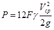
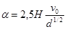
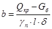
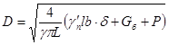
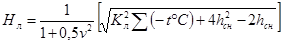
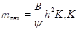
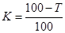
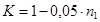
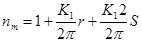
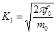

ВЕДОМСТВЕННЫЕ СТРОИТЕЛЬНЫЕ НОРМЫ
|
Министерство транспортного строительства СССР Министерство рыбного хозяйства СССР |
Министерство морского флота СССР Российский Государственный концерн речного флота «Росречфлот» |
ПРАВИЛА
ПРОИЗВОДСТВА И ПРИЕМКИ
РАБОТ
НА СТРОИТЕЛЬСТВЕ НОВЫХ,
РЕКОНСТРУКЦИИ И РАСШИРЕНИИ
ДЕЙСТВУЮЩИХ ГИДРОТЕХНИЧЕСКИХ
МОРСКИХ И РЕЧНЫХ
ТРАНСПОРТНЫХ СООРУЖЕНИЙ
ВСН 34-91
Минтрансстрой СССР
Часть II
МОСКВА 1992
9.1. Настоящий раздел Правил распространяется на работы по возведению и реконструкции оградительных сооружений откосного профиля из каменной наброски и фасонных блоков (тетраподов).
9.2. Геодезические и разбивочные работы должны выполняться в соответствии с требованиями разд. 3 настоящих Правил.
Приемка, хранение и контроль качества материалов и изделий
9.3. Камень, применяемый для возведения морских оградительных сооружений по своим характеристикам (прочность, морозостойкость, коэффициент размягчаемости и др.), должен удовлетворять требованиям проекта, ВСН 5-84/Минморфлота, «Применение природного камня в морском гидротехническом строительстве», а также настоящего раздела Правил.
Камень по крупности делится на пять категорий, которые приведены ниже.
Категория камня Масса камня
I от 5 до 100 кг
II от 100 до 1500 кг
III от 1,5 до 4 т
IV от 4 до 8 т
V от 8 т и более
Сортировка камня по крупности, как правило, должна производиться в карьере. Камни массой до 5 кг относят к карьерным отходам.
Размеры и форма камней, а также процентное содержание камней по категориям устанавливаются в зависимости от их назначения проектной организацией по согласованию с заказчиком и подрядчиком.
Камни не должны иметь признаков выветривания, прослоек глины, гипса и других размокающих, растворимых или рыхлых включений, видимых расслоений и трещин. Камень, предназначенный для отсыпки в ядро сооружения, может быть при соответствующем обосновании в проекте несортированным, с содержанием камней весом до 5 кг не более 5 %.
Каменные глыбы, предназначенные для образования верхних слоев откосов и гребня сооружения, по массе и размерам должны удовлетворять требованиям проекта.
Значения удельного веса камня из осадочных пород приведены ниже.
Марка камня Удельный вес, кН/м3 не менее
150 18
300 21
600 23
800 24
1000 25
Удельный вес камня изверженных и метаморфических пород независимо от марки должен быть не менее 25 и 23 кН/м3 соответственно.
9.4. Фасонные блоки следует изготавливать на заводах железобетонных и бетонных изделий или на полигонах строительной организации.
В каждом случае необходимость изготовления на том или другом предприятии должна подтверждаться технико-экономическим обоснованием.
Фасонные блоки необходимо изготавливать в соответствии с рабочими чертежами, в которых должна быть указана марка бетона по прочности, водонепроницаемости и морозостойкости в соответствии с ГОСТ 26633-85 на бетон и материалы для его приготовления.
При изготовлении фасонных блоков следует руководствоваться указаниями СНиП 3.03.01-87 и СНиП 3.07.02-87.
Для улучшения свойств бетонной смеси и повышения долговечности фасонных блоков следует применять пластифицирующие, воздухововлекающие и газообразующие добавки в соответствии с рекомендациями разд. 7 настоящих Правил (ч. I).
При проектной марке бетона Мрз 200 и более применение указанных добавок обязательно.
9.5. Крупный заполнитель должен испытываться на морозостойкость в бетоне. Не допускается применение гравия для бетона с маркой по морозостойкости Мрз 200 и выше. Крупный заполнитель для бетона всех зон не должен обладать реакционной способностью по отношению к щелочам цемента. Определение указанной способности должно производиться в соответствии со специальными Рекомендациями. Зерновой состав смеси крупного заполнителя должен определяться экспериментально по наибольшей плотности и удельному весу.
Не допускается применение природных гравийно-песчаных смесей без предварительного рассева на гравий и песок.
Полученные при разделении смесей гравий и песок каждый в отдельности должны удовлетворять предъявляемым к ним требованиям.
Использование песков, не удовлетворяющих требованиям государственного стандарта, допускается при условии проведения специальных лабораторных исследований и технико-экономического обоснования.
Вода для приготовления и поливки бетона должна удовлетворять требованиям ГОСТ 23732-79.
Формы, арматура и закладные части перед бетонированием должны быть освидетельствованы с последующей записью всех данных в журнале изготовления фасонных блоков. Освидетельствование необходимо производить как для проверки правильности форм, обеспечивающих точность размеров, так и для проверки их смазки и прочих подготовительных работ. Одновременно должны быть проверены правильность расстановки и надежность крепления арматуры и закладных частей.
9.7. Точность форм и установки арматуры при изготовлении тетраподов определяется требованиями ГОСТ 20425-75.
Подвижность бетонной смеси принимать в пределах от 2 до 4 см.
Изготовление тетраподов целесообразно производить на вибростолах при непрерывной подаче бетонной смеси. Допускается также уплотнение бетонной смеси глубинными вибраторами, в этом случае бетонирование производится горизонтальными слоями постоянной толщины.
Укладку каждого слоя необходимо заканчивать до начала схватывания предыдущего слоя. Толщина слоев бетонной смеси при укладке не должна превышать 1,25 длины рабочей части вибратора.
Освобождать тетраподы от верхней и боковой опалубки допускается после достижения бетоном не менее 25 %-ной проектной прочности.
После изготовления на поверхности каждого тетрапода должны быть указаны номер, тип и дата изготовления.
Подъем и освобождение тетраподов от нижней опалубки разрешается по достижении бетоном 70 %-ной проектной прочности.
Во избежание возникновения изгибающих напряжений в усеченных конусах тетраподов в период твердения и набора прочности в парке изготовления следует помещать днище формы (нижнюю часть опалубки) на песчаную насыпь, обеспечивающую опирание днища по всей его поверхности, с этой же целью для тетраподов массой 25 т и более рекомендуется смазанное днище формы устанавливать на свежеуложенный слой тощего бетона и использовать для последующих тетраподов оставшийся в бетоне оттиск.
9.9. Тетраподы сразу же после окончания бетонирования и распалубки должны быть укрыты для предохранения от высыхания и непрерывно поддерживаться во влажном состоянии в течение срока, необходимого для приобретения бетоном проектной прочности.
Примечание. Срок приобретения проектной прочности определяется в зависимости от температурных условий в период твердения испытанием контрольных образцов. Бетонные изделия независимо от температурных условий, в которых происходило твердение, должны быть выдержаны в воздушно-влажных условиях не менее сроков, установленных в разд. 7 настоящих Правил, ч. I.
При изготовлении фасонных блоков следует вести журнал бетонных работ по форме, приведенной в справочном приложении 2, ч. III.
Изготовленные тетраподы не должны иметь отклонений от проектных величин, превышающих указанные в ГОСТ 20425-75.
Не допускаются для укладки тетраподы, имеющие отколы бетона, обнажающие арматуру и имеющие трещины у основания усеченного конуса или вдоль его образующей по всей длине.
При приемке тетраподов комиссия должна указать в акте их номера, даты распалубки и поступления на склад, результаты испытания бетонных кубиков и характеристику тетраподов по данным осмотра и обмера.
Кроме того, должно быть общее заключение о качестве тетраподов и решение о допустимости укладки их в сооружение.
Устройство ядра сооружения из каменной наброски. Требования к производству работ
9.11. Отсыпка камня в ядро сооружения должна производиться в соответствии с рабочими чертежами и проектом производства работ. В рабочих чертежах отсыпки камня в ядро сооружения должны быть:
а) план с проектной осью, а также верхними и нижними бровками, привязанными к основным разбивочным линиям сооружения;
б) соответствующие плану поперечные профили, принятые для производства работ со строительными подъемами, рассчитанными на предполагаемые осадки сооружения, а также профили ядра по проекту;
в) требования, предъявляемые проектом к качеству камня (масса, форма, марка по прочности, марка по морозостойкости и др.).
Детальную разбивку ядра сооружения (оси верхних и нижних бровок) надлежит производить непосредственно перед началом работ по отсыпке камня.
9.12. Качество камня, его пригодность для возведения сооружения, а также выбор соответствующих карьеров должны быть подтверждены соответствующими документами, согласованными с заказчиком и проектной организацией; если они отсутствуют, то перед началом строительства должна быть проведена согласованная лабораторная проверка качества камня и определена его пригодность для оградительных сооружений.
В период строительства должен вестись периодический лабораторный контроль качества камня, устанавливаемый в зависимости от однородности и объемов работ, но не реже, чем на каждые 30000 м3 камня в партии.
9.13. Перед отсыпкой ядра сооружения основание его должно быть освидетельствовано с составлением акта водолазного обследования и плана промеров глубин. При выявлении дефектов в подготовке основания акт должен содержать мероприятия по их исправлению. Способ отсыпки должен исключать возможность повреждения падающими камнями слабого основания.
При обнаружении в основании не предусмотренных проектом слабых или легко размываемых грунтов необходимость устройства обратного фильтра определяется совместно с проектной организацией. Ядро сооружения отсыпается, как правило, из несортированного камня различной крупности по подготовке из слоя карьерной мелочи.
Наиболее мелкий камень следует отсыпать в нижнюю и центральную части ядра. Применение окатанного камня взамен рваного допускается после согласования с проектной организацией.
Отсыпка камня в ядро сооружения должна производиться непосредственно из транспортных средств без перегрузки.
Выбор схемы и способа отсыпки производится с учетом местных условий, наличия плавучих средств, строительных машин, механизмов и оборудования на основании технико-экономического сравнения возможных вариантов.
При отсыпке камня в воду со льда масса транспортных средств с грузом камня, который можно безопасно транспортировать по льду, должна устанавливаться в проекте производства работ в зависимости от толщины льда, согласно рекомендациям СНиП III-4-80 и СНиП 3.07.02-87. Толщина ледяного покрова по всей трассе движения транспортных средств и непосредственно в зоне производства работ должна ежедневно измеряться и регистрироваться в журнале работ.
Отсыпку камня надлежит производить через майны шириной до 2 м. По мере отсыпки отдельных участков использованные майны замораживают, ограждают и прорубают новые для продолжения отсыпки.
При отсыпке камня бульдозером с понтона последний должен быть оборудован надежным ограждением, исключающим возможность падения бульдозера с понтона в процессе отсыпки.
Отсыпка камня должна производиться с учетом установленных проектом и проверенных в необходимых случаях на опытных участках запасов на осадку сооружений и на погружение камня в грунт. Уплотнение верхних слоев наброски в ядре при наличии специальных требований в проекте может производиться виброударными уплотнителями, используемыми для уплотнения подводных каменных постелей.
Верхний слой каменной наброски, являющийся основанием для тетраподов, следует выполнять путем укладки камня массой, равной 1/10-1/25 от массы тетраподов.
При отсыпке камня необходимо учитывать его расход, контролировать очертание ядра, погружение камня в грунт и осадку отсыпки. Контроль отсыпки камня должен выполняться при помощи футштока (наметки) не реже двух раз в смену. Результаты проверки заносятся в журнал работ.
Законченная отсыпка ядра сооружения проверяется промерами при помощи футштока и осматривается под водой водолазами или техперсоналом, допущенным к спуску под воду. Промеры производят при отсутствии морского волнения. Фактические профили ядра сооружения наносят на рабочие чертежи.
9.15. Отклонения величин площадей отдельных исполнительных поперечных профилей сооружения из каменной наброски (до уровня проектной отметки дна) от проектных не должны превышать 5 %, при условии соблюдения проектной отметки верха наброски и ядра сооружения в пределах, устанавливаемых проектом и обеспечиваемых грубым ровнением.
9.16. Приемка работ по устройству ядра сооружения должна производиться на основании водолазного обследования, а также следующих технических документов:
а) исполнительных планов принимаемых участков;
б) поперечных и продольных профилей сооружений;
в) данных о размерах, форме и лабораторных исследованиях камня;
г) актов приемки работ по разбивке сооружения и освидетельствованию основания, актов промежуточной приемки работ и пр.;
д) журналов наблюдений за осадками;
е) журналов работ.
Покрытие откосов и гребня сооружения каменными глыбами. Требования к производству работ
9.17. Откосы и гребень над ядром оградительного сооружения должны выполняться в соответствии с рабочими чертежами и проектом производства работ.
В рабочих чертежах откосов и гребня должны содержаться:
а) план сооружения с проектными линиями (осей, верхних и нижних бровок, границ наброски или выкладки каменных глыб и т.д.), привязанными к основным разбивочным линиям сооружения;
б) соответствующие плану поперечные профили, принятые для производства работ со строительными подъемами, рассчитанными на предполагаемые осадки сооружения, а также профили откосов и гребня по проекту;
в) требования, предъявляемые проектом к камню (масса, форма, марка по прочности, марка по морозостойкости и пр.).
9.18. Разбивка сооружения (осей, верхних и нижних бровок наброски или выкладки) должна производиться непосредственно перед началом работы.
Слой песка или ила, отложившийся на ядре сооружения до начала отсыпки камня, должен быть удален.
Наброска должна выполняться рваным камнем, однако допускается по согласованию с проектной организацией применение окатанного камня.
Камнем для покрытия откосов оградительных сооружений следует считать рваный камень с отношением наибольшего его размера к наименьшему, не превышающим 3-4. При отношении большем 4, что может иметь место при слоистом камне, вопрос об использовании такого камня и методе его укладки должен быть подвергнут специальному рассмотрению с привлечением проектной организации.
Масса отдельных камней, используемых в покрытии откосов и гребня, должна соответствовать проекту.
9.19. Наброска или выкладка каменных глыб на откосы и гребень должны выполняться с учетом требований, указанных в пп. 10.12-10.14 настоящего раздела Правил.
График работ по покрытию откосов и гребня сооружения должен предусматривать незамедлительное покрытие участка отсыпанного ядра тяжелыми глыбами, масса которых устанавливается проектом во избежание размыва ядра.
Подводный откос отсыпается крупными камнями при помощи крана, оборудованного грейфером или же специальными захватными устройствами.
Надводный откос и гребень в зависимости от требований проекта выкладываются каменными глыбами по типу сухой кладки либо свободной наброской.
9.20. Законченное сооружение должно иметь отметки и уклоны с учетом предусмотренных проектом запасов на осадку и допусков на крутизну откосов.
Проверки законченного сооружения производятся в подводной части в соответствии с п. 9.14 настоящего раздела, а в надводной части - геодезическими методами контроля.
Фактические профили сооружения наносятся на рабочие чертежи. Площади отдельных профилей сооружения не должны отклоняться от проектных свыше 5 %.
Приемка работ
9.21. Приемка сооружения должна производиться на основании результатов наружного осмотра, водолазных обследований, а также следующих документов:
а) исполнительных планов принимаемых участков;
б) профилей возведенного сооружения;
в) данных о размерах и форме камней, а также лабораторных исследований каменных материалов;
г) журналов наблюдений за осадкой сооружения;
д) актов промежуточных приемок работ по разбивке, готовности основания, отсыпке ядра и др.;
е) журнала работ.
Покрытие откосов и гребня сооружения фасонными блоками. Требования к производству работ
9.22. Покрытие из фасонных блоков производится в соответствии с рабочими чертежами сооружения и графиками работ, предусматривающими своевременную защиту ядра сооружения от повреждения при волнении.
Непосредственно перед укладкой фасонных блоков должна быть произведена проверка состояния каменной наброски. Обнаруженные повреждения, заиление или обрастание должны быть устранены.
Готовность участка каменной наброски к укладке фасонных блоков фиксируется актом.
9.23. Укладка фасонных блоков должна производиться в соответствии с рабочими чертежами, содержащими:
а) план сооружения, привязанный к его основной разбивочной линии с нанесенными верхней и нижней бровками выкладки из фасонных блоков, а также верхней и нижней бровками постели и каменного ядра сооружения;
б) соответствующие плану поперечные профили, на которых совмещенно должны быть показаны профили выкладки из фасонных блоков, ядра сооружения, а также профили, ожидаемые после полной осадки;
в) соответствующий плану и поперечным профилям продольный профиль по оси сооружения;
г) количество и кубатура фасонных блоков, предназначенных для укладки на каждом участке и во всем сооружении (подсчет количества блоков и их кубатуры должен быть дан по площадям проектных профилей за вычетом проектного процента пустот);
д) план-схема установки тетраподов с привязкой каждого места установки последних к основной оси сооружения в продольном и поперечном направлениях;
е) указания по виду укладки.
9.24. Разбивка для производства покрытия из фасонных блоков заключается в перенесении на постель и ядро сооружения линии установки бордюрных блоков (если таковые предусмотрены проектом), а также в обозначении на поверхности воды знаков и створов верхних и нижних бровок покрытия.
Фасонные блоки, подготовленные к укладке, должны удовлетворять требованиям пп. 9.6-9.8 и 9.10 настоящего раздела Правил.
Укладку фасонных блоков необходимо выполнять с соблюдением следующих требований:
а) в первую очередь устанавливается ряд бордюрных фасонных блоков или массивов, ограничивающих выкладку;
б) отклонения крайних рядов фасонных блоков от проектной линии укладки не должны превышать 0,25 м;
в) выкладка фасонных блоков производится в первую очередь во внешнюю (морскую) часть сооружения. Фасонные блоки на откосе следует укладывать продольными рядами, последовательно перемещаясь снизу вверх;
г) отклонение фактической площади сечения (профиля) выкладки от проектной не должно превышать 5 % при обязательном соблюдении проектной отметки верха выкладки;
д) укладка производится таким образом, чтобы была обеспечена ее проектная плотность и максимально возможная зацепляемость блоков;
е) работы должны производиться при волнении до трех баллов и силе ветра не свыше шести баллов.
Фасонные блоки должны укладываться, но не сбрасываться. Каждый блок должен укладываться на место по буйкам, выпускаемым водолазами для обозначения места укладки. В процессе работ кран, по возможности, следует устанавливать с внутренней стороны сооружения, чтобы можно было воспользоваться защитой законченной части последнего.
Соблюдение проектных профилей должно контролироваться промерами через каждые 5 м вдоль оси сооружения и через 3 м по поперечному профилю, а также в характерных точках перелома последнего.
На основании промеров необходимо составлять акты и чертежи профилей выкладки с подсчетом процента пустот. Допускается увеличение фактического объема пустот сверх предусмотренного в проекте до 3 %.
9.25. Наблюдения за состоянием сооружения ведутся систематически в течение всего периода работ до сдачи объекта в эксплуатацию. В случае обнаружения просадки профили пополняются с соответствующей записью в журнале работ и на исполнительных чертежах.
Выкладка фасонных блоков должна выполняться с учетом следующих требований:
а) стропы, гаки и приспособления для укладки фасонных блоков должны ежедневно осматриваться перед началом работ;
б) плавучие краны, с помощью которых производится укладка фасонных блоков, должны устанавливаться с учетом предохранения их от повреждений при возможном скатывании последних;
в) опускаемый фасонный блок должен освобождаться от стропов после укладки на место;
г) во время опускания фасонных блоков в воду водолазу запрещается находиться под водой в зоне производства работ.
Приемка работ
9.26. Приемка покрытий из фасонных блоков должна производиться на основании результатов наружного осмотра, обмеров и водолазных обследований, а также следующих технических документов:
а) паспортов на изготовление блоков;
б) данных проверки состояния постели и ядра сооружения перед началом выкладки блоков;
в) актов на разбивочные работы;
г) профилей фактически выполненной выкладки с указанием процента пустот;
д) журналов наблюдений за осадкой выкладки;
е) данных о дополнительно уложенных блоках.
9.27. Приемка оградительного сооружения, включающего фасонные блоки, должна сопровождаться проверкой:
а) размеров и расположения в плане сдаваемого участка сооружения;
б) количества фасонных блоков на участке;
в) пустотности выкладки;
г) состояния уложенных в сооружение фасонных блоков;
д) положения ряда бордюрных фасонных блоков или же бордюрных массивов и массивов, установленных на берме и откосе постели;
е) величины осадки сооружения;
ж) соответствия фактического профиля сооружения проектному.
Качество и объем выполненных работ, а также сравнение с объемами, предусмотренными проектом, определяются и фиксируются на основании перечисленных документов и осмотра сооружения.
Разбивочные работы
10.1. Геодезические и разбивочные работы должны выполняться в соответствии с требованиями разд. 3 настоящих Правил.
Разработка подводных котлованов
10.3. Рабочие чертежи подводного котлована должны содержать:
а) план с указанием глубин акватории и отметок территории до черпания, а также проектных линий котлованов (осей, бровок и т.д.), разбивочных линий, соответствующих проекту производства работ по устройству котлована и привязанных к основным разбивочным линиям сооружений;
б) поперечные профили не реже чем через 10 м вдоль сооружения с промерами через 2 м с указанием глубин до черпания и проектных;
в) подсчет объемов черпания грунта по профилям.
Назначенная проектом производства работ рабочая прорезь грунта под постель сооружения и разгрузочную призму за стенкой должна обеспечить полный проектный профиль котлована после сползания бровок прорези.
При глубине подводного котлована свыше 2 м и для получения проектных откосов котлована черпание должно производиться слоями с обработкой откосов уступами высотой не более 1-2 м.
10.4. Непосредственно перед началом разработки подводного котлована производятся разбивка линий и осей, проверочные промеры глубины акватории и нивелирование территории в границах котлована. При разработке котлована участками или при обстоятельствах, позволяющих предполагать изменение глубин, проверочные промеры производятся по отдельным участкам непосредственно перед разработкой каждого участка котлована.
10.5. Выбор земснаряда для разработки котлованов вблизи существующих сооружений должен производиться с учетом обеспечения устойчивости последних.
Сроки разработки котлованов и отсыпки в них грунта, камня и т.п. определяются проектом. При вынужденном перерыве между окончанием работ по разработке котлована и началом отсыпки камня в постель должны быть проверены глубины и отобраны пробы грунта со дна котлована.
При обнаружении на дне котлована илистых отложений или при изменении размеров котлована против проектных вопрос о необходимости зачистки котлована решает проектная организация.
Результаты обследования котлована и исправления дефектов фиксируются актами и заносятся в рабочий журнал наблюдений, журнал работ и рабочие чертежи.
10.6. При устройстве основания недоборы грунта не допускаются, за исключением случаев, специально оговоренных в проекте сооружения. Переборы грунта при устройстве котлованов в нескальных породах не должны превышать величин, установленных СНиП 3.02.01-87.
Подготовка основания в скальных грунтах должна производиться в соответствии с проектами организации строительства и производства работ.
10.7. Подводные котлованы в скальных грунтах разрабатываются с соблюдением требований, изложенных в пп. 10.2-10.6, исключая способы обработки откосов и допуски по глубинам, которые в этом случае назначаются по согласованию с проектной организацией.
Приемка работ
10.8. Приемка подводных котлованов должна сопровождаться контрольными промерами глубин, водолазными обследованиями и проверкой правильности подсчета объема извлеченного грунта и характеристики последнего (по пробам).
Промеры глубин производятся при волнении не более 1 балла.
Объем извлеченного грунта устанавливается сопоставлением результатов предварительных промеров, выполненных не ранее чем за 10 суток до начала работы земснаряда, с результатами исполнительных промеров, выполненных не позднее чем через 10 суток после окончания работ.
Приемка котлована также должна включать проверку соответствия вскрытых при землечерпании грунтов основания данным, принятым в проекте, а также проверку отсутствия заиливания котлована.
Указанные проверки должны выполняться с участием специально уполномоченного представителя проектной организации и включать рассмотрение образцов грунта, подаваемых водолазами в нужном количестве.
10.9. В случае допущенного при производстве работ уширения или переуглубления (см. п. 10.6) подводного котлована перечерпанная часть профиля должна быть при необходимости (в зависимости от требований устойчивости сооружения) восполнена по согласованию с проектной организацией засыпкой камня, гравия или песка; производство таких работ фиксируется актами и исполнительными чертежами.
10.10. Искривления продольной оси котлована, а также отклонения направления оси котлована от проектной должны находиться в пределах допусков для разбивочных работ, приведенных в разделе 3 настоящих Правил.
Каждая партия камня объемом до 30 тыс. м3 при изменении свиты забоя должна сопровождаться паспортом поставщика, в котором указывается: наименование исходной горной породы, марка по прочности, отношение предела прочности при сжатии образцов в насыщенном водой состоянии к пределу прочности в высушенном до постоянной массы, морозостойкость, плотность камня, крупность.
10.13. Отсыпка камня должна производиться с учетом установленных проектом и проверенных в необходимых случаях на опытных участках запасов на осадку сооружения и на погружение камня в грунт.
Производство работ по отсыпке камня должно сопровождаться систематическими контрольными промерами и учетом расхода камня для возможности контроля за осадками насыпи и за погружением камня в грунт.
Участки постели, примыкающие к берегу, следует отсыпать «пионерным» способом с использованием береговых средств механизации. При невозможности использования «пионерного» способа отсыпка выполняется с помощью плавучих средств. При расположении верха отсыпки на глубине 4 м и более от уровня воды камень следует отсыпать при помощи шаланд с раскрывающимся днищем. Конкретное место разгрузки каждой прибывающей шаланды должно уточняться промерами и обозначаться временными буйками. Допускается выполнение отсыпки камня бульдозером с понтона.
При малых глубинах устройство каменных постелей, разгрузочных призм, щебеночных контрфильтров, заполнений внутренних полостей сборных элементов сооружений каменными материалами производится плавучими кранами из контейнеров, доставляемых на палубных баржах, понтонах или плашкоутах. Допускается отсыпка камня, доставляемого трюмными баржами и шаландами, при помощи плавучих кранов, оборудованных грейферными ковшами.
Отсыпка камня в воду со льда должна производиться с соблюдением требований СНиП III-4-80 и СНиП 3.07.02-87.
Для постелей морских портовых сооружений должны применяться камни с массой от 15 до 100 кг. Для постелей речных портовых сооружений должны применяться камни массой 15 кг и более. В случаях, когда проектом в качестве материала постели предусмотрен щебень, последний должен отвечать требованиям действующего государственного стандарта на щебень из естественного камня для строительных работ и иметь крупность зерен 70 мм и более.
Примечание. Постели сооружений, подверженных волновым воздействиям, должны выполняться камнем, марки и масса которого отвечают требованиям проекта.
10.15. Огрузка основания (каменной постели) путем выдерживания стенки проектного профиля или по специальной огрузочной схеме выполняется в случаях, установленных проектом сооружения. Огрузочная схема - давление на постель, вес и расположение огрузочных массивов, условия стабилизации деформаций или предельные величины последних для определения сроков огрузки должны задаваться проектом. Материалы наблюдений за деформациями при огрузке, особенно на первых строящихся секциях стенки, должны незамедлительно рассматриваться проектной организацией, которая при необходимости вносит соответствующие уточнения в требования по огрузке.
Виброуплотнение подводных каменных постелей
10.16. Виброуплотнение каменной постели производится в случаях, предусмотренных проектом. Каменная постель отсыпается со строительным подъемом, учитывающим осадку на виброуплотнение. При этом строительный подъем назначается в зависимости от высоты постели, характера основания, прочности камня, первоначальной пористости постели и уточняется пробным виброуплотнением.
10.17. Виброуплотнение каменной постели производится передачей на уплотняемый слой камня вертикальных виброударных колебаний через жесткий штамп-башмак с помощью специального агрегата-виброуплотнителя Минтрансстроя или другим способом, проверенным опытом.
Виброуплотнитель должен обеспечивать уплотнение слоя каменной постели высотой не менее 2 м. При этом осадка свежеотсыпанной постели во время виброуплотнения должна составлять не менее 5-8 % толщины уплотняемого слоя.
10.18. Каменная постель должна уплотняться на всю ширину, включая и бермы, за исключением полос шириной не более 1,5 м, примыкающих к бровкам постели.
После перестановки в новое положение башмак виброуплотнителя своею плоскостью должен перекрывать ранее уплотненный участок постели не менее чем на 20 см.
10.19. Виброуплотнение каменной постели в пределах одной секции для достижения одинаковой плотности постели должно быть равномерным. Тип виброуплотнителя и конечный отказ устанавливается проектом организации строительства и рабочими чертежами.
10.20. До и после виброуплотнения поверхность подводной каменной постели нивелируется через 2 м в поперечном и продольном направлениях. При этом точность ровнения поверхности постели до виброуплотнения должна быть не менее грубого ровнения (± 20 см).
После виброуплотнения досыпка камня разрешается только для выравнивания постели.
При виброуплотнении каменной постели ведется журнал по форме, приведенной в справочном приложении 2, ч. III.
10.21. Тщательное и весьма тщательное ровнение каменной постели и установка элементов основной конструкции на каждой секции может начинаться только после виброуплотнения каменной постели последующей секции.
Ровнение поверхностей подводных каменных постелей
10.22. Тщательное и весьма тщательное ровнение поверхностей подводных каменных постелей, их открытых откосов и берм надлежит производить после их огрузки, виброуплотнения или выдерживания в течение срока, предусмотренного проектом.
10.23. Виды ровнения поверхностей каменных отсыпок устанавливаются в соответствии с табл. 3 СНиП 3.07.02-87.
10.24. Подводное ровнение поверхности каменных отсыпей должно выполняться со степенью точности, установленной в проекте сооружения. При ровнении каменной постели водолазами между участками ровнения и участками дополнительной отсыпки должно соблюдаться расстояние, обеспечивающее безопасность работы водолаза, согласно действующим «Единым правилам безопасности труда на водолазных работах».
Приемка работ
10.26. Проверка точности ровнения постели выполняется при помощи технического нивелира и штанги-рейки, а также осмотром выровненной поверхности постели техническим персоналом, обученным водолазному делу. Нивелирование производится при отсутствии волнения.
Законченное тщательное и весьма тщательное ровнение участка постели надлежит проверять нивелиром по сетке 2 ´ 2 м, при этом должны обеспечиваться вертикальность и жесткость штанги-рейки, исключающие изгиб последней.
На участках грубого ровнения допускается проверка точности ровнения промерами футштоком.
На глубинах больших 11,5 м допускается проводить контрольное нивелирование подводным гидробарометрическим нивелиром ЦНИИС-ПН-2/30.
Примечания. 1. Применение лота во всех случаях проверки точности ровнения не допускается.
2. Большой вес штанги-рейки для работ на значительных глубинах определяет необходимость специальных приспособлений для маневрирования штангой-рейкой.
10.27. По окончании работ, устранения возможных дефектов и приемки постели в соответствии с указаниями п. 10.25 фактические профили постели наносятся на исполнительные чертежи.
10.28. Отклонения размеров площадей поперечных профилей сооружения из каменной наброски в части выше отметки дна котлована не должны превышать 5 % по сравнению с проектными при условии соблюдения проектной отметки верха наброски.
10.29. Документация, предъявляемая при приемке каменных постелей, должна содержать:
а) исполнительные планы принимаемых участков;
б) поперечные и продольные профили постели и результаты наблюдений за осадками;
в) данные о размерах и форме камней, результаты лабораторного исследования каменных материалов, обоснования соответствия фактических качественных показателей камня заданным проектом сооружения; процентное содержание фракций камня в объеме партии;
г) акты промежуточной приемки работ по устройству оснований, разбивке и других работ, выполненных до начала отсыпки камня;
д) журналы наблюдений за осадками;
е) контрольные промеры после ровнения;
ж) журналы работ.
Изготовление массивов
10.30. При изготовлении массивов, в том числе и пустотелых, следует выполнять требования глав СНиП 3.03.01-87, СНиП 3.07.02-87 и дополняющие их требования настоящих Правил.
10.31. Изготовление массивов должно осуществляться на горизонтальной бетонированной площадке в сборно-разборной многократно оборачиваемой опалубке. При массе массивов более 5 т желательно применение металлической опалубки.
Конструкция опалубки для образования ключевых шахт должна обеспечивать легкость ее сборки и выемки из массивов.
10.32. Перед бетонированием массивов следует произвести раскрепление форм, установку в них пробок или ящиков и закладных частей согласно рабочим чертежам и смазывание поверхностей, прилегающих к бетону, или изоляцию их от последнего водопоглощающей обшивкой. При изготовлении массивов на бетонных площадках перед укладкой бетона в форму необходимо смазать ее основание или настелить по нему прокладку из рулонного материала.
Все стыки опалубки должны быть проконопачены во избежание утечки раствора.
10.33. Установленная опалубка массивов должна быть освидетельствована соответственным техническим персоналом с отметкой в журнале изготовления массивов.
При освидетельствовании опалубки необходимо проверить правильность ее сборки и раскрепления, обеспечивающие точность размеров массивов, смазку форм и прочие подготовительные работы.
Одновременно должна быть проверена точность расстановки и надежность крепления пробок и ящиков.
10.34. Водоцементное отношение (по весу) бетонной смеси при изготовлении массивов должно приниматься в соответствии с требованиями раздела 7 настоящих Правил, (часть I).
10.35. Дозирование составляющих материалов при приготовлении бетонной смеси механизированным способом должно производиться по весу; исключение допускается при дозировании воды на бетонных заводах непрерывного действия.
Средние квадратичные отклонения от заданной массы составляющих материалов бетонной смеси приведены ниже.
Точность дозирования должна быть не ниже указанных величин.
|
Составляющие |
Отклонения при изготовлении, % |
|
Цемент и активные добавки, дозируемые в виде порошка |
1 |
|
Заполнители |
2 |
|
Вода, активные добавки, дозируемые в мокром виде, и водные растворы хлористых солей и пластифицирующих добавок |
1 |
Примечания. 1. При средних квадратичных отклонениях, указанных в таблице, не менее 85 % отклонений (при многократной проверке) не должно выходить за указанные пределы, остальные 15 % отклонений могут быть больше табличных, но ни одно из них не должно превышать их более чем в два раза.
2. Точность дозирования составляющих в смесителях непрерывного действия определяется по пробам, отобранным в течение 30 с.
10.36. Подвижность бетонной смеси при изготовлении массивов должна приниматься в соответствии с принятым способом ее уплотнения:
при уплотнении пакетом мощных вибраторов - осадка нормального конуса - 1-2 см;
при уплотнении одиночными вибраторами - осадка нормального конуса - 2-3 см;
10.37. Загрузка материалов в бетономешалки свободного падения (периодического действия) должна производиться в следующем порядке: вначале в смеситель заливается вода в количестве 15-20 % от расчетной на замес, а затем без прекращения ее подачи производится одновременная загрузка цемента и заполнителей. Пластифицирующие и воздухововлекающие добавки в виде водных растворов подаются в смеситель с водой затворения. Загрузка бетономешалок принудительного действия должна производиться одновременной подачей всех материалов.
10.38. При приготовлении бетонной смеси в бетономешалках свободного падения наименьшая продолжительность перемешивания замеса приведена ниже.
Емкость бетономешалки по объему Продолжительность
выдаваемой бетонной смеси, л перемешивания, с
До 500 75
Более 500 120
Длительность перемешивания в бетономешалках других типов, так же как и в случае применения умеренно жестких и малоподвижных бетонных смесей (с осадкой конуса < 2 см), определяется опытным путем.
10.39. Способы транспортировки бетонной смеси должны исключать возможность нарушения однородности бетонной смеси; уменьшения подвижности бетонной смеси до значений, меньших выбранных применительно к данным условиям транспортировки и укладки.
Для предохранения бетонной смеси от расслоения при выгрузке из бетономешалки следует применять направляющие устройства, которые обеспечивают центрированное вертикальное падение бетонной смеси в транспортные средства.
Допустимость принятых способов транспортировки должна подтверждаться проверкой подвижности бетонной смеси на месте укладки. Наилучшим способом является транспортировка бетонной смеси в бадьях с открывающимися днищами.
Во избежание расслоения высота свободного падения бетонной смеси не должна превышать 1,5 м. В этих целях бадьи с бетонной смесью опускают в форму и разгружают на уложенный ранее слой бетона с минимально возможной высоты.
10.40. Работа должна быть организована таким образом, чтобы подготовленный к бетонированию массив был забетонирован без перерыва.
Запрещается начинать бетонирование без проверки надежности работы бетоносмесительной установки, транспортных устройств и средств для укладки бетонной смеси, а также при недостаточном запасе материалов на складе.
Перерывом в бетонировании считается промежуток времени, больший срока конца схватывания применяемого цемента.
10.41. Укладку бетонной смеси следует производить горизонтальными слоями постоянной толщины. Толщина слоев бетонной смеси при укладке не должна превышать:
при внутреннем вибрировании - 1,25 длины рабочей части вибратора;
при поверхностном вибрировании - глубины проработки дли применяемого типа вибратора.
10.42. При наличии отслоения цементного раствора в процессе вибрирования необходимо снизить подвижность бетонной смеси.
Верхнюю грань массива следует обработать поверхностным вибратором, а затем загладить. Применение в этих целях слоя цементного раствора или теста не допускается.
Рекомендуется верхний слой массива бетонировать смесью повышенной жесткости.
10.43. После распалубки на боковой поверхности массива должна быть произведена маркировка несмываемой краской с указанием его типа, даты изготовления, порядкового номера и массы.
Примечание. Выдавливание каких-либо знаков на поверхности массивов запрещается.
10.45. Контроль за качеством материалов, дозировкой, приготовлением, транспортировкой и укладкой бетонной смеси должен осуществляться производителем работ, построечной лабораторией и техническим надзором строительства.
Образцы для испытания на сжатие должны отбираться из расчета 9 штук на 200 м3 бетона и во всех случаях изменения состава бетона.
Для проверки морозостойкости и водонепроницаемости бетона должны отбираться специальные образцы в соответствии с требованиями действующих государственных стандартов перед началом приготовления каждого состава бетона, а в дальнейшем - не реже одного раза в квартал, а также при изменении состава бетона или характеристик используемых материалов.
Контрольные образцы должны быть поставлены в те же условия хранения и ухода за ними, что и массивы. При выполнении бетонных работ построечная лаборатория должна вести журнал по форме справочного приложения 2, ч. III.
10.46. Изготовление массивов в зимних условиях должно осуществляться в соответствии с указаниями СНиП 3.03.01-87 и специальных инструкций на производство этих работ. Бетонирование массивов при среднесуточной температуре наружного воздуха ниже +5 °С должно производиться в условиях, обеспечивающих твердение бетона до требуемой прочности, при обязательном теплоизолирующем днище под массивом.
Способ бетонирования массивов при пониженных температурах наружного воздуха должен быть обоснован технико-экономическим расчетом и согласован с проектной организацией. Применение химических добавок в качестве ускорителей твердения бетона для массивов зоны переменного уровня запрещается.
Рекомендуемые добавления к СНиП 3.03.01-87 в части расчетов оптимальных режимов тепловой обработки уложенного бетона приведены в рекомендуемом приложении 17, ч. III.
Уход за массивами и сроки распалубки
10.47. Благоприятные условия твердения уложенного бетона и его предохранение от появления усадочных трещин должны обеспечиваться укрытием и поливкой бетона.
Уход за бетоном и контроль качества массивов осуществляются в соответствии с указаниями СНиП 3.03.01-87, а также настоящих Правил.
10.48. Свежеуложенный бетон должен быть сразу после окончания бетонирования укрыт для предохранения его от высыхания влагоудерживающим материалом.
10.49. Создание условий для твердения достигается выдерживанием бетона при температуре не ниже 10 °С в опалубке, укрытием его открытых поверхностей после распалубки влагоудерживающими материалами (ткани, пористые маты, опилки и т.п.) при систематической поливке водой последних до возраста бетона не менее 20 дней и последующей поливкой раскрытых бетонных поверхностей водой или увлажнением окружающего бетон пространства. Для поливки бетона массивов разрешается применение любой питьевой воды, а также морской воды с содержанием солей не более 20 г на 1 литр. Поливку открытых поверхностей массивов в возрасте до трех суток следует осуществлять пресной водой.
10.50. Через 7-10 ч после окончания бетонирования массива пробки, образующие ключевые шахты, должны быть частично (на 3-5 см) приподняты для устранения их сцепления с бетоном и последующего свободного извлечения при распалубливании.
Свежеуложенный бетон по окончании бетонирования массива должен быть предохранен от повреждений хождениями и работой на нем, нарушениями положения опалубки и т.п. до достижения бетоном прочности не менее 5 МПа.
10.51. Для непропаренных и изготовленных с тепловлажностной обработкой массивов из бетона без добавок срок выдержки до установки в сооружение должен быть не менее 60 сут. При создании благоприятных условий выдержки массивов (при положительных температурах в зимний период и влажных условиях летом), указанных в проекте производства работ, срок выдержки может быть сокращен до 45 сут для массивов зоны переменного уровня в тяжелых условиях эксплуатации и массивов подводной зоны при солености воды более 20 г/л, а в остальных случаях до 28 суток.
Выдерживание должно производиться при температуре не ниже 10 °С. В случае, если выдерживание происходит при температуре ниже 10 °С, но не ниже 2 °С, допускается выдержка в течение эквивалентной продолжительности, подсчитанной по градусо-суткам (но не менее 280 градусов-суток). При температуре воздуха ниже 2 °С необходимо обогревать массив или увеличить срок выдержки до наступления температур воздуха выше 2 °С с последующим хранением в течение сроков, определяемых указаниями настоящего пункта.
Для массивов, изготовленных из бетона с комплексными добавками в соответствии с указаниями разд. 7 настоящих Правил (ч. I), срок выдерживания определяется достижением проектных морозостойкости и водонепроницаемости, а также 100 % прочности.
10.52. При изготовлении массивов наряду с журналом бетонных работ должен вестись журнал изготовления массивов по форме, данной в справочном приложении 2, ч. III.
Приемка изготовленных массивов
10.53. Отклонения размеров и качества поверхностей изготовленных массивов от проектных не должны превышать величин, указанных в СНиП 3.07.02-87. При проверке в журнале изготовления массивов записываются результаты наружного осмотра и измерений по показателям, перечисленным в указанном выше документе и дается заключение о качестве массивов.
10.54. При приемке массивов приемочная комиссия на основании ознакомления с предъявленными документами (рабочие чертежи массивов; «Журнал изготовления массивов»; «Журнал бетонных работ»; результаты испытаний цемента, песка, гравия или щебня, камня и воды) и данных осмотра и обмеров массивов в натуре должна заактировать:
а) номера предъявленных массивов;
б) данные о составе бетона;
в) способы транспортирования и укладки бетонной смеси;
г) результаты наружного осмотра массивов;
д) результаты проверки массивов в соответствии с номенклатурой и требованиями п. 10.53;
е) фактическое расположение закладных частей и шахт, соответствие их проектному расположению, надежность закрепления закладных частей, служащих для подъема;
ж) сроки распалубки и термовлажностного ухода и соответствие их настоящим правилам;
з) даты подъема, перекладки и укладки массивов в парк хранения;
и) результаты испытания бетонных образцов;
к) заключение о качестве массивов и решение о допустимости укладки их в сооружение.
Правильная кладка и наброска массивов. Общие требования
10.55. Правильная укладка и наброска массивов должны производиться в соответствии с рабочими чертежами сооружения и проектом производства работ, предусматривающими в зависимости от грунтовых условий и конструкции сооружения очередность и сроки последовательной укладки массивов по участкам сооружения.
10.56. Плавучие, транспортные и перегрузочные средства, применяемые для операций с массивами, должны соответствовать требованиям Регистра СССР, Речного регистра и роду выполняемых работ.
Правильная кладка массивов
10.57. В рабочих чертежах укладки массивов должны содержаться:
а) план первого (нижнего) курса массивов сооружения, привязанный к основным разбивочным линиям сооружения с указанием размеров и типов массивов, величин перевязки швов кладки и мест осадочных швов; на плане первого курса массивов также указываются бровки каменной постели и границы ровнения по их видам;
б) планы каждого последующего курса массивов, привязанные к плану нижележащего курса с указанием тех же данных, что и в п. «а» по размерам и типам массивов, перевязке швов и осадочным швам;
в) соответствующие планам поперечные профили стенки из массивов, поперечные и продольные профили кладки опор или голов с указанием размеров и типов массивов, строительных подъемов и уклонов, величин перевязки швов кладки, профилей постели, берменных и откосных массивов, устанавливаемых на постели, отметок котлованов постели и каждого курса кладки;
г) фасады сооружений, соответствующие планам и профилям кладки из массивов (для стенки - один фасад с морской стороны, для опор и голов - фасады по всему периметру) с указанием размеров и типов массивов, величин перевязки швов кладки, мест осадочных швов, отметок котлована, постели и каждого курса кладки;
д) допустимые предельные деформации и перемещения кладки или требования к стабилизации их по ходу кладки, после ее завершения, выдерживания и результата огрузки, для тех случаев, когда последняя предусматривается проектом;
е) кубатура и общее количество массивов каждого типа в каждом курсе (число и кубатуру берменных и откосных массивов подсчитывают отдельно);
ж) требования по выдерживанию кладки в процессе ее выполнения и после завершения;
з) проект огрузки для тех случаев, когда последняя предусматривается проектом сооружения, с указанием схемы огрузки каждого участка, напряжений в основании стенки и по подошве постели и перечислением условий, которыми следует руководствоваться при выполнении огрузки;
и) требования к бетону - марки по прочности, водонепроницаемости и морозостойкости.
10.58. Проект производства работ по сооружению должен иметь подробный график работ по укладке массивов, в котором в соответствии с грунтовыми условиями должны быть назначены порядок и сроки укладки каждого курса массивов по участкам сооружения, сроки огрузки по окончании кладки или по мере ее возведения и сроки выдерживания кладки без огрузки и с огрузкой.
10.59. При составлении графика работ по правильной кладке массивов необходимо руководствоваться требованиями проекта, в котором должна быть установлена последовательность укладки массивов, способы огрузки, требования по выжиданию затухания осадок, необходимость возведения опытного участка стенки (при слабых грунтах в основании и при толщине постели более 3 м) и методы производства работ на последней.
Примечание. Независимо от свойств грунтов основания и толщины постели материалы наблюдений за деформациями кладки в процессе ее возведения и последующего обжатия основания на первых строящихся секциях стенки необходимо представить на рассмотрение проектной организации, которая при необходимости обязана внести соответствующие коррективы в указания по величинам строительных подъемов и уклонов, огрузке и т д. Одновременно с указанным проектная организация должна решить вопрос о необходимости корректировки ранее выданных чертежей.
10.60. До начала правильной кладки массивов на постели должны быть произведены подводное освидетельствование последней и разбивка фасадной (боевой) линии с морской стороны первого курса. Для укладки первого курса отдельных опор или голов оградительных сооружений должна быть произведена разбивка боевой линии по всему периметру их первого курса.
10.61. В процессе укладки массивов первого курса систематически производится проверка точности фактического положения массивов в плане, по горизонтальным и вертикальным ступеням между массивами и по отметкам верхних граней - по всем четырем углам каждой из них. Данные, получаемые в результате указанных выше измерений, необходимо сопоставлять с допускаемыми отклонениями, приведенными в табл. 5 СНиП 3.07.02-87.
Если отклонения по высоте отдельных массивов выше допусков, указанных в табл. 5, соответствующие массивы поднимают и ровняют постель, после чего производят повторную укладку массивов до соблюдения правильности поверхности первого курса.
Второй и последующие курсы массивов укладываются в соответствии с рабочими чертежами и графиком производства работ аналогично первому курсу; укладка каждого последующего курса может быть начата только после затухания осадки предыдущих курсов массивов на фронте укладки или в соответствии со специальными указаниями проекта.
Примечание. Практически затухание осадки определяется моментом, когда последовательные показания обыкновенного нивелира не дают изменения отметок верха курса в течение пяти дней.
При кладке массивов второго и последующих курсов ориентиром расположения массивов в плане должны служить нижележащие курсы массивов, а также соседние массивы одного и того же курса кладки.
Верхняя плоскость каждого курса массивов в процессе укладки должна проверяться нивелированием.
10.62. Кладка каждого курса массивов должна фиксироваться следующими документами:
а) чертежом-планом соответствующего курса с указанием номера каждого массива по парку изготовления, даты укладки и перекладки каждого массива, а также результатов измерений, выполненных в соответствии с требованиями табл. 5 СНиП 3.07.02-87;
б) журналом и чертежом всех нивелировок, произведенных во время кладки каждого курса и в процессе последующих наблюдений за этим курсом, до кладки следующего курса массивов.
10.63. Осадку и поворот стенки по ходу обжатия основания кладкой проектного профиля или по специальной огрузочной схеме, заданной проектом, надлежит проверять геодезическими инструментами, а также при помощи водолазов в соответствии с указаниями инструкции, приведенной в обязательном приложении 18, ч. III. Сроки проверки надлежит устанавливать в соответствии с указаниями проекта сооружения.
10.64. Огрузку надлежит фиксировать следующими документами:
а) схематическим планом сооружения с указанием типа огрузки каждого участка, дат установки и снятия огрузочных массивов и достигнутых напряжений грунта;
б) профилем сооружения с нанесением огрузочных массивов;
в) журналом и чертежом всех нивелировок и иных измерений (см. п. 10.63), выполненных за время огрузки основания;
г) актами о всех технических обстоятельствах, имевших место во время огрузки основания (перекладка массивов, расстройство кладки и т.п.);
д) сводными графиками деформаций по длине сооружения во время обжатия.
10.65. По окончании огрузки каждого участка надлежит производить проверочный водолазный осмотр состояния массивов и кладки; при осмотре надлежит обращать особое внимание на целость массивов и отсутствие нарушении кладки. Результаты осмотра надлежит фиксировать в акте.
10.66. Укладка массивов на бермы и откосы постели производится в соответствии с рабочими чертежами укладки и с соблюдением тех же предельных допусков точности кладки, которые указаны в п. 10.61.
10.67. Для надлежащего учета работ по укладке массивов, кроме указанных в предыдущих пунктах технических документов, в течение всего периода операций с массивами надлежит вести «Журнал операций с массивами», форма которого указана в справочном приложении 2, ч. III. Номер, присвоенный массиву по парку изготовления и нанесенный на массив, остается неизменным во всех технических документах.
Приемка работ по правильной кладке
10.68. Приемка правильной кладки из массивов должна сопровождаться проверкой соответствия выполненных работ требованиям, приведенным в табл. 5 СНиП 3.07.02-87, а также настоящих Правил.
Приемка массивовой кладки должна производиться на основании результатов обследования кладки в натуре, рассмотрения актов промежуточных приемок и освидетельствований работ, предшествующих установке массивов.
Комиссии, осуществляющей приемку, должны быть предъявлены следующие технические документы:
а) «Журнал операций с массивами»;
б) акты приемки котлована и постели, а также данные проверки их перед началом последующей стадии работ - котлована перед началом отсыпки постели и постели перед началом работ по установке массивов;
в) акты на разбивочные работы;
г) рабочие и исполнительные чертежи кладки (плановое и высотное положение каждого массива, ширина швов, перекрытие швов, уклоны - во время выполнения кладки и после огрузки или выдерживания ее в законченном виде до получения деформаций, заданных проектом);
д) «Журнал производства работ»;
е) перечень допущенных отклонений от проекта и документов согласования этих отклонений с заказчиком и проектной организацией;
ж) данные об огрузке основания в соответствии с указаниями п. 10.64, если огрузка предусмотрена проектом;
з) данные наблюдений за деформациями кладки в период ее возведения и во время выдерживания под огрузкой или без нее - в соответствии с проектом;
и) акты об особых технических обстоятельствах, имевших место в период производства работ;
к) акты приемки массивов, из которых выполнена кладка.
10.69. Приемка массивовой кладки должна сопровождаться проверкой:
а) состояния поверхности курсов кладки по данным водолазного обследования и акта промежуточной проверки;
б) качества уложенных массивов и бетона, из которого они выполнены;
в) размеров и отметок кладки (общих и по курсам) и ее расположения (в плане, по высоте и по уклонам);
г) количества уложенных массивов по каждому курсу и их расположения в плане и по высоте, в том числе взаимного положения массивов - ступени между ними;
д) положения и конфигурации осадочных швов, качества перевязки швов между массивами, размеров швов и величины осадки кладки.
Устройство разгрузочной каменной призмы и обратного фильтра
10.70. Разбивочные работы для устройства разгрузочной призмы заключаются в закреплении над водой линий верхней и нижней бровок призмы. Соответствующим образом производятся разбивочные работы для устройства обратного фильтра.
После закрепления разбивочных линий производится проверка глубин котлована за стенкой, а также контролируется отсутствие захламления или заиливания его. Результаты промеров глубин наносятся на рабочие чертежи.
При наличии отклонений, превышающих допуски, установленные в разд. 4 настоящих Правил или специально указанные проектом, а также при выявлении засорения производится подчистка котлована и пересчет кубатуры материалов, потребных для устройства призмы.
10.71. Отсыпка камня должна сопровождаться составлением актов на скрытые работы, систематическими контрольными промерами и учетом расхода камня для контроля за осадкой отсыпки и за погружением камня в грунт. Первоначально призму следует не досыпать на 10 см до отметки нижней поверхности массивов верхнего курса с целью оставления возможности выравнивания последних.
Камень для разгрузочной призмы должен удовлетворять требованиям п. 10.11, проекта сооружения и, как правило, быть рваным. Применение окатанного камня допускается только при условии согласования с проектной организацией.
10.72. Работы по устройству обратного фильтра разрешается начинать только после приемки каменной разгрузочной призмы.
Отсыпку обратных фильтров надлежит выполнять по шаблонам, установленным не реже чем через каждые 20 м.
Отсыпка обратного фильтра в подводной части должна контролироваться систематическими промерами его поперечного профиля в заданных точках.
Размеры фракций каменного материала, укладываемого в обратные фильтры, а также толщина и расположение его слоев устанавливаются проектом.
Для устройства обратного фильтра допускается применение щебня, изготовленного из камня, удовлетворяющего требованиям проекта сооружения или обычного гравия твердых неразмокаемых пород. К устройству обратного фильтра из геотекстиля можно приступать после проверки соответствия техническим условиям полученной партии и отбраковки загрязненных (закальматированных) его кусков. Края полотнищ должны быть ровные для обеспечения должного перекрытия смежных слоев.
Ход укладки полотнищ при их сварке (склейке) должен быть определен исходя из удобства производства работ. При свободной укладке полотнищ внахлестку друг на друга ход укладки должен быть определен в проекте.
Приемка работ
10.73. Приемка выполненных работ по устройству каменной призмы и обратного фильтра должна производиться на основании натурного обследования и предварительной технической документации.
10.74. Комиссии должна быть представлена следующая техническая документация:
а) рабочие чертежи призмы и обратного фильтра с нанесенными на них фактически выполненными профилями;
б) данные о качестве примененных материалов;
в) данные о процентном содержании фракций в объеме партии камня;
г) данные о проектных и фактических объемах работ;
д) журнал производства работ;
е) данные наблюдений за осадками и деформациями при производстве работ по устройству разгрузочной призмы и обратного фильтра;
ж) данные об особых технических обстоятельствах при производстве работ.
Засыпка пазухи за сооружением
10.75. Качество грунта, отсыпаемого в пазухи сооружения, последовательность его отсыпки и уплотнения должны соответствовать требованиям, изложенным в проекте сооружения. Если в тылу имеют место слабые илистые грунты, должны быть выполнены специальные меры для предотвращения подвижек их в сторону стенки.
Засыпка пазух в соответствии с указаниями проекта сооружения может выполняться при помощи береговых механизмов или рефулированием.
10.76. Проект производства работ по засыпке пазухи должен содержать:
а) план участка засыпки с указанием границ засыпки и поперечных разрезов;
б) поперечные разрезы в характерных местах с показанием очертаний стенки, надводного строения, разгрузочной каменной призмы и обратного фильтра, а также очертаний и отметок существующего рельефа грунта и проектной поверхности засыпки;
в) подсчеты объемов грунта в плотном теле (с учетом заполнения пустот в разгрузочной призме и в каменной постели) и в разрыхленном (разжиженном) состоянии;
г) схематический план участков забора грунта для засыпки с показанием отметок слоев грунта, объемов забираемого грунта и его физико-механических характеристик;
д) мероприятия по предотвращению опасных подвижек в сторону стенки слабых грунтов при выполнении насыпи, образующей территорию (в случае наличия таких слабых грунтов);
е) к началу засыпки пазухи каменная призма и обратный фильтр должны быть закончены и приняты, о чем должен быть составлен акт.
10.77. Проект производства работ по рефулированию грунта за стенку, помимо указанного в п. 10.76, должен содержать:
а) указания о допустимой интенсивности рефулирования по высоте в сутки;
б) указания о потребных объемах рефулирования грунта на каждой стоянке рефулера и о порядке перестановки пульповодов по длине сооружения;
в) указания о мероприятиях по отводу воды и защите основания сооружения от подмыва и по предотвращению утечки грунта;
г) календарные графики выполнения работ по рефулированию, увязанные с работами по забору и транспортированию грунта из карьера;
д) конструкцию и расположение водоспусков, ограждений, опор пульповодов.
10.78. Перед началом работ по засыпке пазухи должны быть произведены контрольные съемки поперечников, на основании которых уточняется объем потребного грунта в плотном теле.
Интенсивность засыпки по высоте определяется промерами глубин подводных участков и нивелированием надводных участков при одновременном подсчете объема отсыпаемого грунта.
10.79. В течение всего периода засыпки пазухи должны производиться наблюдения за состоянием стенки. В случае обнаружения осадок или изменения положения в плане засыпка должна быть приостановлена, выяснены причины деформации сооружения и приняты меры по устранению последствий деформаций и предотвращению возникновения ее в дальнейшем.
10.80. Отметка поверхности отсыпанной территории после уплотнения и планировки не должна иметь отклонений от проектной более чем ±5 см.
По окончании засыпки должны быть произведены съемки профилей созданной территории и подсчет кубатуры отсыпанного грунта.
Потери грунта от утечек должны быть предусмотрены проектом и сметой.
10.81. После грубой планировки следует установить наблюдение за осадками поверхности грунта. Материалы указанных наблюдений должны систематически рассматриваться представителями проектной организации, которая на основе этого обязана устанавливать время возможного начала дальнейших работ на созданном участке территории (устройство постоянной одежды, подкрановых и железнодорожных путей и т.д.).
10.82. Состав и характеристика грунтов как в карьере, так и в теле сооружения должны систематически контролироваться лабораториями с установлением соответствия качества отсыпаемых грунтов требованиям проекта.
Применение грунтов, содержащих органические примеси и корни растений, не допускается.
Примечание. Контрольные пробы грунта должны отбираться в начале работы, в процессе работы и при каждом переходе земснаряда на новый участок с другими грунтами.
10.83. Отсыпка надводной части территории должна производиться равномерно по всей площади возводимого сооружения горизонтальными слоями с учетом предусмотренного запаса на осадку. Толщина отсыпаемого слоя определяется проектом производства работ.
Каждый слой грунта, уложенный в насыпь, должен быть равномерно уплотнен. Последовательность и степень уплотнения устанавливаются проектом производства работ в зависимости от методов возведения насыпи и свойств грунтов.
Приемка работ
10.84. Приемка выполненных работ по созданию территории за стенкой должна производиться на основании натурного обследования и представленной технической документации.
10.85. Комиссии при приемке должны быть предъявлены следующие документы:
а) данные о фактическом проценте пустот в каменной постели и разгрузочной призме до начала рефулирования или отсыпки грунта;
б) рабочие и исполнительные чертежи засыпки;
в) данные лабораторных исследований грунта;
г) журнал производства работ;
д) данные наблюдений за деформациями сооружений в соответствии с указаниями «Инструкции по контролю качества массивовой кладки и наблюдениями за ее деформациями при строительстве набережных стенок конструкции, типизированной «Союзморниипроектом» (см. обязательное приложение 18, ч. III);
ж) данные об особых технических обстоятельствах при производстве работ.
Возведение надводных строений
10.86. Требования настоящего подраздела распространяются на работы по устройству сборных железобетонных надстроек причалов и монолитных надводных строений оградительных сооружений из массивов.
10.87. Графики работ должны быть составлены с учетом начала работ по устройству надводного строения после стабилизации осадок основания и конструкции сооружения. Для сооружений, подверженных волновым воздействиям, графики должны предусматривать круглосуточное скоростное ведение работ.
10.88. На основании результатов проверки отметок и расположения в плане нижележащей основной части сооружения в случае надобности по согласованию с проектной организацией могут быть внесены коррективы в рабочие чертежи надводного строения.
10.89. Разбивочные и геодезические работы при возведении надводного строения должны производиться по исполнительным чертежам массивовой кладки, учитывающим ее состояние ко времени начала работ по возведению надводного строения и по откорректированным рабочим чертежам в соответствии с требованиями разд. 3 настоящих Правил.
10.92. Применяемые при монолитном надводном строении в качестве опалубки железобетонные плиты-оболочки должны отвечать требованиям табл. 5 СНиП 3.07.02-87.
10.93. Монтаж железобетонных плит-оболочек должен выполняться в соответствии с пп. 10.91, 10.92 и с соблюдением следующих требований.
Швы между плитами-оболочками должны быть заполнены раствором и подвергнуты железнению. Прочность, водостойкость, водонепроницаемость и морозостойкость раствора для заполнения швов должна быть не ниже чем бетона, применяемого для изготовления плит-оболочек.
Швы между массивами должны быть уплотнены деревянными рейками заподлицо с массивами.
До начала укладки монолитного бетона в каждую секцию надводного строения должно быть проверено соответствие рабочим чертежам положения закладных частей, предусмотренных проектом.
10.95. Непосредственно перед началом работ по возведению каждой секции надводного строения опалубка и поверхность основания секции должны быть очищены от мусора, воды, снега и т.п., а арматура и другие металлические закладные части - от ржавчины.
До начала бетонирования блока должна быть произведена приемка установленных плит-оболочек.
Результат приемки заносится в рабочий журнал.
10.96. Во время загрузки блоков бетоном и в период твердения последнего плиты-оболочки должны быть предохранены от возможных ударов.
Толщина слоев укладываемой бетонной смеси не должна превышать глубины проработки вибраторами. Бетон, прилегающий к плитам-оболочкам, должен уплотняться особо тщательно.
Рабочие швы бетонирования блоков не должны совпадать с горизонтальными швами плит-оболочек.
Подвижность и жесткость бетонной смеси назначаются в зависимости от типа надводных строений, для массивных бетонных надводных строений должна находиться в пределах от 1 до 3 см.
10.98. В процессе бетонирования необходимо предохранять закладные части от смещения и повреждения.
10.99. Железобетонные элементы уголкового профиля верхнего строения должны быть установлены на бетонную подготовку до начала схватывания свежеуложенного бетона этой подготовки.
Требования к бетону подготовки по прочности, водонепроницаемости и морозостойкости должны быть не ниже, чем для бетона надстройки. Допускаемое отклонение от проектного положения в плане и по высоте при установке элементов уголкового профиля составляет ±10 мм.
10.100. Укладка бетона в тумбовые массивы, омоноличивающие два элемента сборной надстройки в пределах секции, должна выполняться с соблюдением требований пп. 10.90, 10.94-10.97.
10.101. Конструкции обрамления кордона устанавливаются с выверкой их положения в плане и по высоте геодезическими инструментами и отклонением от проектного положения не более чем на 1 см. Разница в положении лицевых плоскостей соседних элементов конструкции обрамления по вертикали и горизонтали не должна превышать 5 мм. Эти конструкции устанавливаются или непосредственно на раствор (бетон), или с подливкой раствора (бетона). В обоих случаях все швы должны быть заполнены раствором. Вертикальные швы между кордонными камнями не должны быть толще 5 мм; с фасада эти швы расшиваются цементным раствором. Требования к раствору (бетону) по прочности, водонепроницаемости и морозостойкости должны быть не ниже установленных проектом для прилежащих участков конструкции надстройки.
10.102. Съемные части отбойных устройств следует устанавливать после окончания возведения и приемки надводного строения.
Приемка работ
а) рабочие чертежи надводного строения с нанесенными на них откорректированными отметками и размерами надводного строения, а также отбойных и причальных устройств;
б) документы о качестве материалов (цемента, песка, камня, воды и т.п.);
в) данные лабораторных испытаний образцов бетона;
г) акты об особых технических обстоятельствах при производстве работ;
д) «Журнал производства работ»;
е) «Журнал инструментального контроля» или сведения о проверках размеров и правильности линии надводного строения;
ж) ведомость выполненных работ;
з) перечень отступлений от проекта и документы, удостоверяющие согласование этих отступлений с заказчиком;
и) данные наблюдений за состоянием сооружения;
к) каталог реперов и марок, установленных на сооружении, по которым исполнялись измерения по ходу строительства, и тех, по которым должны вестись наблюдения в процессе эксплуатации сооружения, а также береговых реперов, служащих для привязки точек, используемых непосредственно для измерения деформаций сооружения;
л) ведомости нивелировок и плановых измерений, фиксирующих положение сооружения, не ранее чем за 10 дней до сдачи надстройки;
м) акты приемки массивовой кладки, отсыпки разгрузочной призмы с обратным фильтром и территории в зоне, непосредственно примыкающей к стенке, с прилагаемыми к ним документами.
Примечание. Точки или марки (по п. 10.103) должны быть расположены в соответствии с указаниями проектной организации.
10.104. Приемка надводного строения заключается в ознакомлении с документацией (п. 10.103), в обследовании в натуре выполненного сооружения и устройств и в проверке соответствия размеров надводного строения и его элементов рабочим чертежам.
Фактические размеры надводного строения не должны иметь отклонений от проектных более чем на 2 см.
Наброска массивов
10.105. Для соблюдения проектной оси и профиля наброски, помимо разбивочных знаков, надлежит применять шаблоны.
Готовые массивы, перемещаемые в наброску, должны удовлетворять требованиям, упомянутым в п. 10.53.
10.106. Работы по наброске массивов следует выполнять с соблюдением следующих требований:
а) до начала наброски массивов надлежит устанавливать бортовые массивы;
б) наброску массивов следует производить в первую очередь во внешнюю (морскую) часть профиля сооружения.
Массивы надлежит укладывать, но не сбрасывать.
Примечание. В процессе работ кран следует устанавливать с внутренней стороны сооружения с тем, чтобы работа выполнялась под защитой законченных его частей.
10.107. Соблюдение проектных профилей надлежит контролировать промерами, которые следует производить через каждые 5 м вдоль оси сооружения и через 3 м - по поперечному профилю.
На основании промеров надлежит составлять чертежи профилей наброски.
10.108. В течение всего периода производства работ до сдачи объектов в эксплуатацию надлежит вести систематические наблюдения за состоянием наброски и в случае обнаружения осадок производить пополнение профилей массивами, о чем составляется акт с соответствующей записью в журнале работ.
10.109. Работы по наброске массивов надлежит выполнять с соблюдением следующих требований:
а) стропы, ключи, захваты и приспособления для наброски массивов следует ежедневно проверять перед началом работ;
б) краны, производящие наброску массивов, надлежит устанавливать с учетом предохранения их от повреждений при возможном скатывании массивов;
в) укладываемый массив освобождать от стропов в наиболее низком положении, допускаемом без нарушения структуры наброски массивов;
г) работу водолазов вблизи крана во время опускания массивов не допускать.
Приемка работ по наброске массивов
10.110. Приемка наброски из массивов должна производиться на основании результатов наружного осмотра, водолазных обследований и следующих технических документов:
а) перечисленных в пп. 10.68 а, б, в, д, и, к;
б) содержащих чертежи профилей фактически выполненной наброски с указанием процента пустот;
в) журналов наблюдений за осадкой наброски;
г) содержащих данные о дополнительно уложенных массивах.
10.111. Приемка набросок из массивов должна сопровождаться проверкой:
а) качества массивов в наброске;
б) размеров и расположения в плане сдаваемого участка наброски;
в) количества массивов на участке;
г) пустотности наброски (объем пустот, равный разности проектного объема наброски и произведения числа уложенных массивов на их объем, разделенный на проектный объект наброски);
д) положения бортовых и берменных массивов, установленных на откосе постели;
е) величины осадки наброски;
ж) поперечного профиля наброски.
На основании перечисленных документов определяется и фиксируется качество и объем выполненных работ, а также проводится сравнение с объемами, предусмотренными проектом.
Изготовление массивов-гигантов
10.112. При изготовлении массивов-гигантов из монолитного железобетона следует выполнять требования СНиП 3.03.01-87, СНиП 3.07.02-87 и дополняющих их требований настоящих Правил.
Монтаж массивов-гигантов из сборных элементов
10.113. Монтаж массивов-гигантов производится на специально организуемых стапельных местах.
Прогоны стапеля укладывают на опоры по уровню. Уровень верха прогонов выравнивают путем укладки под них подкладок из листовой стали различной толщины. Отклонение отметок верха прогонов от проектных не должно превышать ±5 мм.
Рабочая площадка стапеля должна быть жесткой и не допускающей неравномерных осадок прогонов при их загрузке. Прогоны, размеченные рисками, служат шаблоном для укладки плит днища массива-гиганта. Отклонения в разметочных размерах допускаются не более ±5 мм.
10.114. До начала монтажа элементов должны быть выполнены следующие подготовительные работы:
а) возле стапельной площадки создан необходимый запас готовых железобетонных элементов, рассортированный по видам, типоразмерам и партиям;
б) проверены наличие и правильность нанесения необходимых осевых и контрольных рисок;
в) элементы очищены от грязи, выпуски арматуры или металлические, закладные части очищены от раствора, ржавчины и т.п. Все кромки элементов, которые должны соприкасаться с бетоном омоноличивания, обработаны путем насечки, продувки и промывки;
г) выправлены выпуски арматуры, петли и другие выступающие закладные части;
д) элементы оснащены монтажными приспособлениями-расчалками, оттяжками и т.п.
10.115. Сборные элементы поднимают плавно, без рывков, раскачивания и вращения, в необходимых случаях применяют оттяжки.
Вначале элементы приподнимают на высоту 0,2-0,3 м от земли и удерживают в этом положении, проверяя надежность строповки и правильность положения поднимаемого элемента.
При установке элементов необходимо соблюдать следующие требования:
а) установку следует вести при помощи монтажного механизма непосредственно на опорные места по осевым рискам, возможно ближе к проектному положению;
б) устанавливать элементы без толчков, не допуская ударов по смежным элементам;
в) не освобождать устанавливаемый элемент от строповки до окончания выверки его положения и надежного закрепления;
г) применять для закрепления элементов монтажную электродуговую точечную сварку;
д) проверять вертикальность и горизонтальность положения элементов по уровню и отвесу.
10.116. Отклонения смонтированных элементов массива-гиганта от проектного положения не должны превышать следующих допусков:
а) зазоры между плитами днища, передней, средней и задней стенками ±10 мм;
б) несовпадение наружных и внутренних поверхностей смежных плит днища, передней, средней и задней стенок - 5 мм;
в) смещение осей вертикальных элементов в нижнем сечении относительно разбивочных осей на плитах днища - 5 мм;
г) наибольшая величина отклонения вертикальных элементов от вертикали в верхней точке - 5 мм.
10.117. Вертикальные элементы можно монтировать после окончания омоноличивания стыков между плитами днища и приобретения раствором омоноличивания 25-30 % проектной прочности (не менее трех суток после окончания омоноличивания при нормальных условиях твердения).
10.118. Соединение сборных элементов производится путем сварки арматурных выпусков или закладных частей.
Качество сварных соединений контролируется согласно указаниям ГОСТ 10922-75 на арматурные изделия и закладные детали сварные для железобетонных конструкций.
Рабочие места сварщиков, а также свариваемые поверхности стыков должны быть защищены от дождя, снега и сильного ветра. Сварку стыков допускается производить при температуре воздуха не ниже - 20 °С.
Величина зазора между свариваемыми закладными деталями не должна превышать 2 мм. При большей величине зазора к закладным деталям приваривают дополнительные планки, стержни и т.п.
Омоноличивание стыков цементным раствором. Торкретирование
10.119. Контроль за соответствием раствора омоноличивания требованиям проекта осуществляется построечной лабораторией. Омоноличивание стыков, особенно вертикальных и расположенных между плитами днища и стенок, должно производиться путем нагнетания раствора в огражденный шов. Омоноличенный цементным раствором стык укрывается гигроскопическим материалом (соломенными матами, опилками и т.п.) и поддерживается во влажном состоянии до приобретения раствором не менее 70 %-ной проектной прочности.
10.120. Перед омоноличиванием стыков элементов массивов-гигантов торкретбетоном должны быть выполнены следующие подготовительные работы:
а) с контактных поверхностей, на которые наносится торкретбетон, должны быть удалены жировые пятна, натеки и наплывы бетона. Указанные поверхности должны быть насечены, очищены стальными щетками или струей песка и непосредственно перед торкретированием промыты;
б) закладные детали элементов днища и лицевой грани массива-гиганта должны быть покрыты химически стойкими лаками на перхлорвиниловой основе;
в) в стыках, в соответствии с проектом, должна быть установлена арматура, приваренная к закладным деталям элементов;
г) необходимое количество воды для увлажнения сухой смеси должно быть определено путем пробного торкретирования.
10.121. Торкретирование должны производить опытные сопловщики, прошедшие соответствующую подготовку, при температуре воздуха и торкретируемой поверхности элементов не ниже 5 °С. Заданная проектом общая толщина слоя торкретбетона достигается последовательным нанесением сверху вниз слоев толщиной по 5-10 мм. При нанесении первого слоя торкретбетона сопло должно удерживаться на расстоянии 90-120 см от торкретируемой поверхности, при нанесении последующих слоев - на расстоянии 70-80 см.
Омоноличивание стыков в зимних условиях
10.122. Поверхности стыкуемых элементов и закладных деталей должны быть очищены от снега, наледи и нагреты до положительной температуры. После омоноличивания стыка подогретым раствором нормальные условия для его твердения обеспечиваются комбинированным способом, основанным на сочетании изотермического прогрева раствора в стыке с охлаждением его в условиях термоса.
10.123. Для нормального нарастания прочности раствора в стыках необходимо при их прогреве обеспечить:
а) предварительный прогрев стыка от температуры не менее плюс 5 °С с равномерным повышением температуры со скоростью не выше 5-7 °С в ч;
б) изотермический прогрев стыка при температуре плюс 55 °С с отклонением в ±3 °С до получения прочности раствора, равной 70 %-ной от прочности его в 28-дневном возрасте;
в) равномерное остывание стыка со скоростью не выше 5-7 °С в час.
Продолжительность всего цикла прогрева стыка определяется построечной лабораторией на основе испытаний контрольных образцов, выдержанных в условиях, аналогичных условиям твердения раствора в стыках.
Приемка изготовленных массивов-гигантов
10.124. Изготовленные массивы-гиганты должны быть на рабочих местах освидетельствованы и приняты комиссией.
Приемочной комиссии должны быть предъявлены следующие технические документы:
а) рабочие чертежи массивов-гигантов с указанием отступлений от проектных размеров при их изготовлении;
б) ведомость результатов испытаний образцов бетона;
в) журнал производства работ;
г) акты промежуточных приемок и освидетельствования работ, предшествовавших бетонированию (арматурных, опалубочных и др.);
д) лабораторные данные об испытании цемента, заполнителей, добавок и воды.
Приемка должна включать:
а) проверку соответствия изготовленной конструкции рабочим чертежам и требованиям настоящего раздела Правил; проверка производится путем внешнего осмотра бетонных поверхностей и обмера элементов массива-гиганта;
б) рассмотрение актов всех скрытых работ, данных лабораторных испытаний составляющих бетона, арматуры и контрольных образцов бетона.
При наружном осмотре и обмере массива-гиганта следует руководствоваться величинами допускаемых отклонений, указанных в табл. 6 СНиП 3.07.02-87.
10.125. При приемке работ по торкретированию должны быть проверены следующие документы:
а) журнал бетонирования стыков;
б) акты испытания образцов торкретбетона;
в) паспорта на цемент;
г) акты на исправление дефектных мест.
Торкретный слой должен отвечать следующим требованиям:
а) на торкрете не должно быть усадочных трещин, местных вздутий и отслоений;
б) при простукивании деревянным молотком торкрет не должен издавать глухого, дребезжащего звука,
в) контрольные образцы торкрета должны соответствовать требованиям, предъявляемым к его прочности и водонепроницаемости.
Сцепление торкрета с бетоном необходимо проверять не ранее чем через семь дней после торкретирования.
Торкрет, имеющий дефекты, должен быть заменен; при этом поверхность около дефектных мест должна быть хорошо очищена.
10.126. При обнаружении дефектов, размеры которых превышают допуски, комиссия должна установить возможность и способы их исправления. После исправления дефектов перед спуском на воду массивы-гиганты должны быть вторично освидетельствованы и приняты комиссией.
По окончании приемки составляется акт, прилагаемый к журналу работ.
Перемещение и спуск массивов-гигантов на воду
10.127. Перемещение массивов-гигантов должно производиться с принятием мер, предохраняющих их от перекосов и появления трещин в днище и стенках.
Комплекс работ по перемещению и спуску массивов-гигантов при использовании слипа состоит из следующих операций:
а) подъем, посадка на тележки (салазки) и перемещение от места изготовления по поперечному пути стапеля;
б) пересадка с тележек (салазок) поперечных путей на тележки (салазки) продольных откатных путей и перемещение к спусковому устройству;
в) пересадка с тележек (салазок) продольных откатных путей стапеля на косяковые тележки (салазки) и спуск на воду;
г) оборудование массива-гиганта перед буксировкой. Подъем массива-гиганта для установки его на тележки (салазки) должен производиться гидравлическими домкратами или самоподъемными тележками, число которых определяется в зависимости от массы массива-гиганта; при этом следует принимать двухкратный запас грузоподъемности.
10.128. При подъеме массивов-гигантов необходимо соблюдать следующие требования:
а) домкраты должны устанавливаться строго вертикально и точно по осям продольных и поперечных стенок массива-гиганта;
б) подъем должен осуществляться всеми домкратами или самоподъемными тележками одновременно;
в) гидравлические домкраты должны быть снабжены выверенными манометрами и предохранительными кольцами, исключающими возможность внезапной просадки поршня;
г) во избежание местных перенапряжений бетона между поршнями домкратов и днищем массива-гиганта необходимо устанавливать деревянные прокладки;
д) в случае отказа одного из домкратов подъем должен быть прекращен, а вышедший из строя домкрат заменен новым;
е) после подъема массива-гиганта на необходимую высоту запорные краны на домкратах должны быть закрыты, а предохранительные кольца закреплены;
ж) перед началом передвижения массивов-гигантов необходимо проверить состояние путей, тележек, салазок и оборудования (лебедки, тросы, домкраты и т.п.).
Обнаруженные при этом дефекты должны быть устранены;
з) при перемещении массива-гиганта на салазках дороги и полозья должны быть смазаны в соответствии с указаниями инструкции по насадке спусковых устройств;
и) передвижение массива-гиганта должно производиться в один прием, место конечной установки должно быть точно рассчитано.
10.129. Спуск массива-гиганта по наклонным путям необходимо производить с соблюдением следующих требований:
а) до начала работ по спуску массивов-гигантов необходимо проверить спусковые тележки, тросы, лебедки и другое оборудование, произвести водолазное обследование спусковых путей, их очистку и нивелирование с составлением акта на обследование и схемы положения путей;
б) расчетная глубина воды на пороге стапеля должна быть больше осадки массива-гиганта на величину Bi + (0,3-0,5 м), где В - размер массива-гиганта вдоль стапеля; i -уклон стапеля;
в) спуск массива-гиганта должен производиться немедленно после его установки на косяковые тележки; запрещается оставлять массив-гигант на спусковых устройствах;
г) балластировка отсеков массива-гиганта водой (при наличии соответствующих указаний в проекте) должна производиться на косяковых тележках, после погружения массива в воду на 70-80 % проектной осадки; доводить до всплытия не отбалластированный массив-гигант не допускается;
д) при спуске массивов-гигантов, изготовленных в плавучих или сухих доках и на действующих слипах, необходимо руководствоваться правилами эксплуатации этих сооружений.
10.130. При хранении массивов-гигантов на шпальных клетках должны быть соблюдены следующие условия:
а) обеспечена достаточная надежность основания шпальных клеток, исключающая возможность неравномерных деформаций, особенно в период оттаивания грунта;
б) соблюдена горизонтальность днища при посадке массива-гиганта на шпальные клетки;
в) обеспечен периодический инструментальный контроль деформаций шпальных клеток.
Количество шпальных клеток, необходимое для отстоя каждого массива-гиганта, и их размеры должны определяться расчетом для конкретных условий строительства.
Буксировка и установка массивов-гигантов в сооружение
10.131. После спуска массивов-гигантов должна производиться их оснастка для буксировки в соответствии с проектом производства работ (устройство настила, навешивание кранцев, крепление буксирного троса, соединение возом и т.д.).
При необходимости установки массивов-гигантов на отстой для этих целей должны быть отведены защищенные от волнения участки акватории.
Массивы-гиганты должны быть установлены на грунт с временным затоплением (при наличии глубин, допускающих откачку воды, и грунтов, обеспечивающих безопасную установку), либо расчалены в плавучем состоянии при запасе глубины под днищем не менее 50 см.
10.132. Вывод массивов-гигантов из защищенной акватории и транспортирование к месту установки разрешается производить при наличии прогноза на волнение не более двух баллов.
10.133. При недостаточной остойчивости массив-гигант должен быть в соответствии с проектом производства работ отбалластирован водой или песком.
При недостаточной плавучести или при малых глубинах массив-гигант необходимо подвешивать к понтонам, количество и водоизмещение которых определяется проектом производства работ.
10.134. Установка массивов-гигантов в сооружение допускается при волнении не более двух баллов.
Перед установкой массива-гиганта необходимо проверить состояние постели путем промеров и водолазного обследования с составлением акта.
10.135. В проектное положение массив-гигант выводится при помощи четырех лебедок, установленных на массиве. При этом канаты двух передних лебедок закрепляются на ранее установленных массивах, а две задние - снабжаются якорями, которые заводят катером и отдают примерно под углом 45° к продольной оси сооружения. Канаты пропускают через кнехты или кипы, установленные на продольных стенках у углов массива-гиганта.
Погружение должно производиться затоплением отсеков водой в соответствии с указаниями проекта: канаты лебедок при этом должны быть туго натянуты.
Между смежными массивами-гигантами оградительных сооружений должны быть оставлены зазоры для обеспечения независимости осадки массивов и возможности их подъема и вывода из створа сооружения в случае необходимости. Величина зазоров устанавливается проектом.
После установки массива-гиганта на постель до полного наполнения его водой канаты на лебедках оставляют туго натянутыми. Лебедки снимают после загрузки массива-гиганта.
10.136. После установки каждого массива-гиганта на постель должны проверяться его положение в плане и по высоте, а также плотность прилегания днища массива-гиганта к постели по периметру.
При наличии зазоров между поверхностью постели и днищем массива-гиганта, больших допускаемых для заданного проектом вида ровнения постели, массив-гигант должен быть поднят, отведен в сторону, а постель выровнена. После этого массив-гигант устанавливают вторично.
После окончательной установки массива-гиганта составляются акт и исполнительная схема расположения массива и должен быть установлен контроль за его осадкой путем периодической нивелировки по маркам, установленным в углах массива-гиганта.
Примечание. Первую нивелировку следует производить немедленно после установки массива-гиганта на постель, вторую - после его загрузки.
10.137. Допускаемые максимальные отклонения от проектного положения массива-гиганта приведены в табл. 6 СНиП 3.07.02-87.
Заполнение массивов-гигантов и заделка зазоров между ними
10.138. Заполнение массивов-гигантов бетонной смесью производится насухо с предварительной поочередной откачкой воды из отдельных отсеков. Заполнение их бетоном под водой методом «ВР» может допускаться лишь при наличии специального обоснования в проекте.
Заполнение отсеков сыпучими материалами - камнем, песком или гравием производится в воду.
Примечание. Если массив-гигант до его заполнения находился в отстое в затопленном или плавучем состоянии, то стенки, соприкасающиеся с бетонной смесью, а также выпуски арматуры должны быть предварительно очищены металлическими щетками от пленки и ржавчины.
10.139. Отсеки следует загружать равномерно, начиная от середины. В первую очередь заполняются отсеки, подверженные наиболее сильному удару волны.
При бетонировании отсеков массива-гиганта должна быть обеспечена прочная связь укладываемой бетонной смеси со стенками отсеков.
Закладные части, необходимые для связи массива-гиганта с надводным строением, должны устанавливаться в соответствии с проектом.
При загрузке массива-гиганта в журнал работ посменно заносится последовательность заполнения отсеков.
10.140. Заполнение зазоров между массивами-гигантами допускается только после стабилизации осадок последних.
Конструкция заполнения зазоров определяется проектом. Она должна допускать самостоятельную осадку каждого массива-гиганта.
Примечание. В оградительных сооружениях одновременно с установкой массивов-гигантов должны укладываться и берменные массивы.
Монтаж надстройки
10.141. До начала монтажа надстройки массивов-гигантов в зоне действия крана должен быть создан запас сборных элементов, обеспечивающий бесперебойное ведение монтажа. Его величина определяется исходя из объема работ, удаления полигона от места строительства, путей сообщения между ними, времени года и стесненности строительной площадки. Запас должен быть не менее двухдневного.
10.142. При подъеме, транспортировании и складировании сборных элементов должны соблюдаться следующие условия:
а) элементы следует поднимать исключительно за подъемные скобы, желательно с применением траверсы; угол наклона стропов к горизонту должен быть не менее 60°;
б) ребристые или тавровые элементы при транспортировании и складировании следует располагать ребрами вверх, предохраняя от изгиба выступающие закладные части;
в) элементы необходимо укладывать на подкладки толщиной не менее высоты выступающих петель и закладных деталей; подкладки должны быть расположены под подъемными скобами; при складировании в несколько ярусов подкладки должны находиться строго на одной вертикали.
В рабочей зоне монтажного крана сборные элементы следует складировать комплектно в строгой последовательности, технологически обеспечивающей бесперебойное ведение монтажа.
10.143. Сборные элементы, доставляемые на строительную площадку, должны быть снабжены паспортом установленного образца и иметь маркировку, нанесенную несмываемой краской.
При приемке на строительной площадке элементы надстройки должны быть тщательно осмотрены; о всех замеченных повреждениях и трещинах, включая волосные, должен быть поставлен в известность представитель технического надзора, который совместно с представителем строительной организации решает вопрос о возможности использования таких элементов.
10.144. Для монтажа надстройки разрешается применять сборные элементы с отклонениями от проектных размеров, не превышающими следующих допусков:
по длине, мм ±20
по толщине плиты и общей высоте сечения, мм +10 -5
по ширине плиты и ребра тавра, мм ±10
по смещению закладных частей, мм не более 10
по наклону закладных частей анкерной тяги ±2°
Искривление боковых кромок не должно превышать 3 мм на 1 м длины.
Плоскость опорного торца вертикального элемента должна быть строго перпендикулярна к его лицевой и боковым плоскостям.
Околы кромок и трещины (даже волосные, усадочного происхождения) на лицевой стороне плиты элементов надстройки не допускаются.
На тыловой поверхности ребер тавровых или ребристых элементов могут быть допущены усадочные трещины глубиной не более 2 см и шириной не более 0,1 мм.
При указанных выше отклонениях от допусков на трещины вопрос об использовании сборного элемента должен быть решен представителем технадзора.
Тыловая часть элемента надстройки в месте примыкания коробов (при использовании фильтров для перекрытия стыков) должна быть тщательно заглажена.
10.145. Монтаж надстройки следует вести при помощи плавучего или сухопутного крана грузоподъемностью, превышающей массу наиболее тяжелого сборного элемента на 20-30 %.
Монтаж вертикальных элементов следует производить только после инструментальной проверки высотного и планового положения массива-гиганта, а также закладных частей на них.
Проверка оформляется актом с приложением следующих документов:
а) актов приемки массивов-гигантов и установки их на постель;
б) исполнительной схемы установки массивов-гигантов с нанесением осей, с указанием отметок и имеющихся отклонений от проекта.
Элементы рекомендуется устанавливать при помощи полуавтоматического захвата или другого приспособления, обеспечивающего надежное закрепление элемента, вертикальность его положения и отцепку без необходимости подъема рабочих по лестницам к месту закрепления.
10.146. При монтаже анкеруемой надстройки анкерные тяги шарнирно крепятся к элементам до их подъема.
Анкерная тяга должна изготавливаться из хорошо свариваемой стали, соответствующей сертификату, указанному в проекте.
Без получения заводского сертификата изготовление анкерных тяг не разрешается.
Резать анкерные тяги из широкополосной или листовой стали не следует.
При необходимости резки тяг из широкополосной или листовой стали необходимо принимать меры против их коробления.
10.147. Плоские анкерные тяги могут иметь отклонения от проектных размеров в пределах следующих допусков:
по длине тяги ±2 см;
по ширине и толщине - в пределах допусков на прокат полосовой стали при резке их из широкополосной или листовой стали (допуски по ширине +1 см - 0);
по диаметру отверстия для пальца шарнира ±0,05 см;
искривление - 2 см на всю длину тяги.
10.148. Окончательная приварка анкерной тяги в конструкции должна производиться в соответствии с указаниями инструкции по сварке соединений арматуры и закладных деталей железобетонных конструкций.
Тяга и закладная (монтажная) деталь в местах сварки должны предварительно подогреваться газовой горелкой или паяльной лампой до температуры 100-120 °С.
Сварка должна производиться без длительного перерыва, чтобы свариваемые детали оставались горячими в течение всего времени сварки узла. При этом необходимо принимать меры для предотвращения перегрева бетона в месте соприкосновения с закладной деталью.
Сварку тяг не рекомендуется производить при температуре воздуха ниже минус 20 °С.
При наплавлении слоев необходимо при помощи пневматического зубила или крейцмейселя очищать каждый слой от шлака, вырубать шлаковые наплывы, возможные трещины и т.д.
Перед подваркой корня шва должна производиться подрубка его до получения чистого наплавного металла.
Подварка шва должна выполняться в два слоя: первым слоем заваривается вырубленная канавка, а вторым - наплавляется необходимый для усиления металл.
Отклонение положения конца анкерной тяги от нижней монтажной детали диафрагмы («вилки») не должно превышать 4 см.
Сварка должна производиться дипломированными сварщиками, на свариваемом узле сварщик должен ставить свое клеймо.
Анкерные тяги тумбовых массивов должны устанавливаться до засыпки пазух грунтом и крепиться к железобетонным анкерным плитам в соответствии с проектом.
10.149. Монтаж надстройки и засыпку пазух, как правило, следует вести только при достижении элементами 100 %-ной проектной прочности.
По согласованию с проектной организацией монтаж надстройки с засыпкой пазух разрешается вести из элементов, имеющих не менее 70 %-ной проектной прочности, в том случае, если обеспечивается нарастание проектной прочности бетона до загрузки причала проектной нагрузкой, подъемно-транспортными машинами или подвижным железнодорожным составом.
Достижение проектной прочности бетона проверяется испытанием кубиков, отобранных от каждой партии сборных элементов и хранящихся в аналогичных условиях с ними.
10.150. При монтаже вертикальных элементов надстройки устанавливаются следующие допуски:
по величине зазора между элементами, см 1,5
по отклонению от плоскости кордона, см ±2
по длине массива гиганта ±2 см
у соседних элементов ±0,5 см
по величине отклонения лицевой плоскости элемента
от плоскости массива-гиганта, см 1
по наклону в плоскости кордона 2 мм на 1 м
10.151. Промежуточной приемке подлежат следующие элементы сооружения:
а) котлованы;
б) искусственное основание в виде каменной, щебеночной или гравийной постели;
в) массивы-гиганты;
г) элементы надстройки;
д) анкерные тяги и монтажные части к ним с антикоррозийным покрытием;
е) несущие сварные узлы;
ж) устройства, обеспечивающие грунтонепроницаемость зазоров (короба, обратные фильтры и т.д.);
з) шапочный брус;
и) швартовые и отбойные устройства;
к) железнодорожные и подкрановые пути.
10.152. Приемка сооружения допускается после достижения всеми элементами конструкций проектной прочности; это должно подтверждаться испытанием бетонных кубиков, хранящихся с момента изготовления сборных элементов в аналогичных с ними условиях до приемки сооружения;
после окончания строительства все выполненные строительно-монтажные работы должна принимать рабочая комиссия, которая обобщает составленные ранее промежуточные документы, устанавливающие объем и качество работ и их соответствие проектной документации;
во время приемки должны быть проведены натурные испытания конструкции причала по программе, разработанной проектной организацией.
Документация, предъявляемая к приемке сооружения, должна содержать:
а) рабочие чертежи с нанесением на них всех изменений, которые были допущены в процессе строительства (ведомость отступлений от проекта), а при значительных отступлениях - исполнительные чертежи;
б) документы, подтверждающие согласование на допущенные изменения;
в) журналы работ, журналы и письма авторского и технического надзора;
г) акты геодезической разбивки сооружения;
д) документы о результатах испытания сборных элементов, закладных частей и анкерных тяг;
е) журналы изготовления и хранения железобетонных и бетонных конструктивных элементов сооружения, изготовляемых непосредственно на строительной площадке, и акты их приемки, паспорта на элементы, изготовляемые на заводах;
ж) исполнительные планы расположения сборных элементов;
з) акты скрытых работ и акты промежуточных освидетельствований;
и) акты приемки железнодорожных и подкрановых путей;
к) ведомость недоделок, не влияющих на сдачу сооружения в эксплуатацию, и сроки их устранения.
10.153. При изготовлении оболочек большого диаметра следует выполнять требования СНиП 3.03.01-87 и СНиП 3.07.02-87 и дополняющие их требования настоящих Правил.
10.154. Звенья оболочек большого диаметра с горизонтальным членением должны изготовляться на специально оборудованных полигонах при заводах железобетонных конструкций. В состав полигонов должны входить стенды для изготовления оболочек, расположенные в зоне действия плавкранов, кран, с помощью которого производится монтаж и демонтаж опалубки, подача арматуры и бетонной смеси.
В состав стенда входят:
комплект наружной и внутренней опалубки;
железобетонный кольцевой фундамент-поддон для сборки опалубки и установки оснастки для сборки арматурного каркаса и бетонирования звена;
оснастка, состоящая из рабочей платформы, перемещающейся по стойке, коромысла, вращающегося вокруг стойки по настилу рабочей площадки, с двумя съемными бункерами для бетона.
Отклонения размеров поддона от проектных не должны превышать следующих величин, мм:
внутреннего радиуса опорного кольца ±5
наружного радиуса опорного кольца ±5
отклонения верха поддона от горизонтальной плоскости ±2
Наружная и внутренняя опалубки состоят из двух стальных цилиндров, собираемых из отдельных щитов ярусами высотой 1 м. К использованию допускаются щиты со следующими отклонениями от проектных размеров, мм:
по высоте и длине щита -2
по радиусу кривизны ±30
10.155. Собранные наружная и внутренняя опалубки должны отвечать проектным размерам со следующими допусками, мм:
уступ в стыке между поверхностями смежных щитов до 5
зазор между смежными ребрами жесткости щитов до 5
расстояние между внутренней и наружной опалубками ±5
Замеры следует производить в точке крепления опалубки домкратами.
Хранить опалубочные щиты в нерабочем положении следует в специальных контейнерах в один ярус по высоте. Нерабочие поверхности каждого щита должны быть окрашены, рабочие поверхности - очищены от налипшего бетона и смазаны.
Каждый ярус опалубки маркируется одним цветом, щиты в ярусе нумеруются.
10.156. Заготовка арматуры включает:
нарезку стержней рабочей и распределительной арматуры;
вальцовку рабочей кольцевой арматуры на проектный радиус, причем отклонение радиуса кривизны стержня от проектного допускается ±100 мм. На концах отвальцованного стержня допускаются прямые участки длиной не более 200 мм;
сварку «стеллажей» - стержней распределительной арматуры с приваренными к ним перпендикулярно коротышами длиной 120 мм с шагом, равным вертикальному шагу рабочей кольцевой арматуры.
Арматурные стержни после вальцовки подаются пакетами с помощью крана.
Стыковать между собой стержни, имеющие радиус меньше проектного, запрещается. Отклонение размеров выпусков при стыковке стержней должно быть не более 30 мм, отклонение заготовленного стержня от плоскости изгиба - не более 10 мм на 1 м длины.
Сборку арматурного каркаса рекомендуется начинать с установки закладных деталей: ножа - для нижнего кольца; планок - для крепления вертикальных стержней с кронштейнами и закладных уголков - для верхнего звена. После этого с шагом 1500 мм по периметру звена фиксируются «стеллажи», на которые укладываются стержни кольцевой наружной и внутренней рабочей арматуры. Недостающие стержни наружной и внутренней распределительной арматуры устанавливаются после полной сборки рабочей арматуры.
10.157. Вязка или сварка стержней арматурного каркаса звена должна производиться на каждом четвертом стержне в шахматном порядке.
При закреплении армокаркасов необходимо обеспечить их несмещаемость в процессе формования, для чего на втором и четвертом ярусах бетонирования устанавливаются подкладки («сухари») из бетона марки не ниже М-400.
Величина зазора между арматурой и опалубкой должна соответствовать толщине защитного слоя. Отклонение толщины защитного слоя должно быть не более +5 мм.
Отклонение от проектных расстояний между стержнями в каркасе допускается не более ± 10 мм.
Закладные детали для монтажных отверстий и направляющих устройств устанавливаются после полной сборки арматурного каркаса. Отклонение от проектного положения закладных деталей не должно превышать ±25 мм.
Перед началом бетонирования арматурный каркас и опалубка должны быть приняты ОТК завода-изготовителя с составлением акта на скрытые работы.
Изготовление элементов верхнего строения
10.158. Армировать уголковые блоки верхнего строения причальных сооружений следует сварными сетками и арматурными каркасами.
Сетки и каркасы следует изготавливать в кондукторах.
В двух рядах сеток (по периметру изделия) все места пересечения стержней должны быть сварены, остальные пересечения должны связываться вязальной проволокой или свариваться через одно в шахматном порядке.
В каркасах все точки пересечений должны связываться или свариваться точечной сваркой. Качество сварки должно соответствовать требованиям инструкции по сварке соединений арматуры и закладных деталей железобетонных конструкций.
10.159. Бетонировать элементы верхнего строения причальных сооружений (уголковых блоков) и конструкций для стыковых соединений между установленными оболочками следует в металлической опалубке с последующей термовлажностной обработкой под колпаками, в камерах или при естественном вызревании.
Распалубливать и перемещать на склад хранения блоки верхнего строения и другие конструктивные элементы разрешается после достижения бетоном 70 %-ной проектной прочности.
Для хранения элементы верхнего строения и элементы стыковых соединений укладываются в один ряд.
10.160. Элементы сборного уголкового блока верхнего строения должны удовлетворять требованиям, изложенным в табл. 1.
Таблица 1
|
Допуски, мм |
||
|
для элементов вертикальной плиты |
для элементов горизонтальной (фундаментной) плиты |
|
|
Отступления от проектных размеров по лицевой и тыловой поверхностям |
±10* |
±10* |
|
Отступления от проектных размеров по толщине |
±5 |
±10 |
|
Выпуклость или вогнутость плиты |
±5 |
±10 |
|
Отступления в толщине защитного слоя |
±5 |
±5 |
|
Раковины: |
||
|
наибольшая глубина |
3 |
5 |
|
диаметр раковины |
Не более 6 |
Не более 15 |
|
Раскрытие трещин усадочного происхождения |
Не более 0,1** |
Не более 0,1** |
|
Обдир цементной пленки на лицевой грани |
Не допускается |
Не нормируется |
* В тех случаях, когда надстройка на секции стенки состоит из двух сборных элементов, объединенных монолитным бетоном тумбового массива, допуски по длине увеличиваются до 20 мм.
** Трещины, возникающие только в поверхностных слоях изделия, не имеющие определенной ориентации.
10.161. Бетон в тумбовый массив, омоноличивающий два элемента сборной надстройки в пределах секции, укладывается с соблюдением требований п. 10.100.
10.162. Съемные части отбойных устройств следует устанавливать после приемки верхнего строения.
10.163. Сборные железобетонные цилиндрические оболочки большого диаметра с вертикальным членением собираются из отдельных криволинейных плит. В составе производства (полигона, цеха и т.д.) по изготовлению указанных оболочек должны быть:
горизонтальные стенды (они же камеры термовлажностной обработки) со встроенными конструкциями кантователей для подъема плит в вертикальное положение. На этих стендах производится армирование, бетонирование и термовлажностная обработка криволинейных сборных плит для оболочек;
площадка (полигон) для изготовления элементов верхнего строения причальных сооружений, блоков и плит для стыковых соединений между оболочками и других сборных конструкций. Изготовление этих конструкций может производиться как с термовлажностной обработкой в пропарочных камерах ямного типа или под колпаками, так и с естественным вызреванием;
склады хранения изготовляемых элементов;
монтажная площадка с кондуктором для сборки оболочек, подмостями или другими устройствами для проведения сварочных и изоляционных работ при соединении сборных плит, располагаемых на причале в зоне действия плавучих кранов;
крановое оборудование для перемещения сборных плит, бадей с бетоном, опалубки и арматуры, перестановки кондуктора, складирования элементов конструкций и других работ.
10.164. Армирование криволинейных сборных плит для оболочек должно выполняться на стенде заготовленными арматурными стержнями проектного профиля с приваренными по концам закладными деталями. Стенды должны иметь борт-оснастку, снабженную устройствами для крепления концов горизонтальных кольцевых стержней и для обеспечения их точного проектного положения. Арматурные стержни вертикального направления должны крепиться в местах пересечений с горизонтальными кольцевыми стержнями точечной сваркой или вязальной проволокой. Применения каких-либо прокладок не требуется.
Отклонения в размерах закладных деталей, сварных сеток и каркасов и в расстояниях между отдельными стержнями от заданной проектом величины допускаются в пределах требований ГОСТ 10922-75 на арматурные изделия и закладные детали сварные для железобетонных конструкций.
Отклонения от проектных данных в размерах сварных швов допускаются только в сторону увеличения. Запрещаются ударные воздействия на сталь, предназначенную для изготовления закладных деталей, при температуре ниже минус 25 °С.
Арматурные стержни, каркас, сетки и закладные детали перед установкой на стенде или в опалубку должны быть очищены от загрязнений и ржавчины.
Крепление арматурных стержней в стендах, сеток или каркасов в опалубке должно быть достаточно прочным, чтобы при бетонировании они не смещались с проектного положения.
10.165. Допускаются следующие отклонения в величине защитного слоя бетона, мм:
в плитах оболочек большого диаметра ±5
в остальных железобетонных конструкциях причальных
сооружений из оболочек большого диаметра от 0 до +5
Отклонения от проектного положения установленных закладных деталей не должны превышать ±5 мм.
10.166. Для бетонирования сборных элементов причальных сооружений из сборных оболочек большого диаметра, криволинейных плит, блоков верхнего строения и стыковых соединений между оболочками должен применяться бетон, отвечающий требованиям ГОСТ 26633-85.
Контроль качества бетона должен выполняться техническим персоналом завода-изготовителя.
Бетонная смесь от бетоносмесительной установки к стендам и бетонируемым конструкциям должна доставляться без перевалок. Бадьи для бетона должны иметь исправные затворы, не допускающие вытекания цементного раствора.
Бетонирование криволинейных плит и других элементов для причальных сооружений из сборных оболочек большого диаметра должно выполняться опытной бригадой бетонщиков.
Бетонировать криволинейные сборные плиты следует на горизонтальных стендах выпуклостью вниз. Бортовая оснастка стенда должна обеспечивать точную и надежную фиксацию деталей стыковых соединений и боковых граней плит при бетонировании.
После окончания бетонирования сборные криволинейные плиты для оболочек должны быть подвергнуты термовлажностной обработке при температуре 70-75 °С продолжительностью до 1400 град.-ч.
Бетонировать элементы верхнего строения причальных сооружений (уголковые блоки), конструкции для стыковых соединений между установленными оболочками, плиты для удлинения основания уголковых блоков следует в металлической инвентарной опалубке с последующей термовлажностной обработкой под колпаком, или в камерах, или с естественным вызреванием.
Поверхности стендов, бортовой оснастки и опалубки должны быть смазаны во избежание сцепления их с бетоном.
Распалубливать (снимать бортоснастку) и поднимать со стенда сборные криволинейные плиты разрешается после достижения бетоном 70 %-ной проектной прочности.
Распалубливать и перемещать на склад хранения блоки верхнего строения и другие конструктивные элементы для причальных сооружений из оболочек большого диаметра разрешается после достижения бетоном 70 %-ной проектной прочности.
Изготовленные сборные элементы должны маркироваться на лицевой поверхности и нижней части элемента несмываемой краской с обозначением номера изделия, его типа и даты изготовления.
Приемка изготовленных звеньев оболочек большого диаметра с горизонтальным членением
10.167. Приемка изготовленных звеньев оформляется актом, в котором указываются следующие данные:
а) качество материалов (по документам их испытаний);
б) соответствие качества арматуры и ее размещения требованиям проекта (по документам ОТК или актам на скрытые работы);
в) прочность, водонепроницаемость, морозостойкость бетона (по данным испытаний) и трещиностойкость (по наружному осмотру);
г) соответствие формы и размеров звена рабочим чертежам и требованиям настоящего раздела Правил;
д) соответствие размещения закладных деталей рабочим чертежам и требованиям настоящего раздела Правил;
е) отсутствие в элементах недопустимых внешних дефектов, указанных в п. 10.169;
ж) наличие маркировки;
з) наличие паспорта и соответствие указанных в паспорте и фактических параметров конструкции.
Форма и размеры проверяются у каждого звена с занесением результатов проверки в акт приемки.
10.168. Отклонение размеров звеньев от проектных не должны превышать следующих величин, мм:
по высоте (по всей плоскости торца) ±20;
по толщине стенки, измеряемой по верхнему торцу, ±10.
Отклонение поверхности звена от вертикали (горизонтальное смещение) при высоте 6 м - ±25 мм.
Положение монтажных отверстий по высоте звена, в том числе расстояния между смежными отверстиями - ±10 мм.
Все измерения, кроме последнего, производятся в десяти точках периметра оболочки в местах крепления щитов домкратами в соответствии со схемой, приложенной в паспорте (см. справочное приложение 2, ч. III).
Дефекты, не превышающие по своим размерам указанных выше, подлежат исправлению под контролем ОТК или заводской лаборатории.
Дефекты, размеры которых превышают установленные допусками, необходимо устранить расчисткой места дефекта и заделкой его раствором, бетоном или полимербетоном под контролем ОТК завода с последующим комиссионным освидетельствованием.
Звенья оболочек с дефектами, снижающими несущую способность (крупные отколы, раковины и сквозные трещины), которые невозможно исправить специальными методами, подлежат браковке.
Расположение арматуры и толщина защитного слоя бетона в изделиях могут быть проконтролированы неразрушающими методами.
10.170. Предприятие-изготовитель должно гарантировать соответствие изделий требованиям проекта и настоящих Правил и выдавать на каждое изделие паспорт (см. справочное приложение 2, ч. III). Оно также должно обеспечивать отпускную прочность бетона в момент отгрузки изделия в соответствии с проектом (не менее 70 %) и гарантировать набор проектной прочности на 28-й день при соответствующем уходе.
Приемка изготовленных элементов оболочек большого диаметра с вертикальным членением
10.171. Отпуск изготавливаемых изделий и их отгрузка к месту строительства разрешается только после их технической приемки.
Приемка может производиться как отдельных элементов (плит, уголковых блоков и т.д.), так и готовой оболочки, смонтированной из сборных плит. Последнее возможно при размещении завода-изготовителя в непосредственной близости от места строительства и выполнении им работ по монтажу оболочки.
Приемке подлежат все элементы конструкций: криволинейные сборные плиты, уголковые блоки верхнего строения и др. В связи с их значительными размерами за партию принимается одна оболочка (10 плит), блок верхнего строения, конструкции блоков уплотнения одного стыка между оболочками. Особое внимание при приемке оболочки надлежит уделять ее морской части.
10.172. Приемка изготовленных конструкций оформляется актом, в котором указываются следующие данные о принимаемых изделиях:
а) качество материалов (по документам их испытаний);
б) соответствие качества арматуры и ее размещения (по документам ОТК или актам на скрытые работы);
в) прочность, водонепроницаемость, морозостойкость бетона (по данным испытаний), трещиностойкость (по наружному осмотру);
г) соответствие формы и размеров элементов рабочим чертежам и требованиям настоящих Правил;
д) соответствие размещения закладных деталей рабочим чертежам и требованиям настоящих Правил;
е) отсутствие в элементах недопустимых внешних дефектов (см. п. 10.174);
ж) наличие маркировки;
з) наличие паспорта и соответствие указанных в паспорте и фактических параметров конструкции.
Форма и размеры элементов проверяются поштучно с занесением в акт приемки.
10.173. Отклонения в размерах элементов не должны превышать следующих величин, мм:
для криволинейных сборных плит согласно табл. 7
для элементов верхнего строения:
по длине ±20
по ширине верха стенки ±10
по высоте ±10
отклонения в расположении подъемных петель ±50
для элементов стыковых конструкций:
по длине, ширине и высоте ±10
Дефекты, не превышающие по своим размерам указанных выше допусков, подлежат исправлению под контролем ОТК или заводской лаборатории.
Элементы, изготовленные с дефектами, превышающими допуски, бракуются.
10.175. Расположение арматуры и толщина защитного слоя бетона в изделиях могут быть проконтролированы разрушающими и неразрушающими методами.
Контроль величин защитного слоя бетона в криволинейных плитах для оболочек не требуется в связи со значительной его величиной и жесткой фиксацией арматурных стержней на стенде.
10.176. Предприятие-изготовитель должно гарантировать соответствие изделий требованиям проекта и настоящих Правил и выдавать на каждое изделие (собранную оболочку, блок верхнего строения с удлиняющими плитами, блоки стыковых соединений между оболочками) паспорт, в котором должны быть следующие данные:
а) наименование и адрес предприятия-изготовителя;
б) номер и дата составления паспорта;
в) номер изделия;
г) наименование и марка изделия;
д) дата изготовления изделия;
е) проектная марка и отпускная прочность, водонепроницаемость и морозостойкость бетона изделия;
ж) характеристики армирования и сварки;
з) характеристика антикоррозийного покрытия (если предприятие-изготовитель отпускает готовую собранную оболочку).
Паспорт должен быть подписан ОТК предприятия-изготовителя.
Транспортировка звеньев оболочек большого диаметра с горизонтальным членением
10.177. Перемещать звенья оболочек при погрузке их на плавсредства разрешается при волнении моря до двух баллов и силе ветра до четырех баллов.
10.178. Для подъема и перемещения звеньев должна применяться специальная траверса, обеспечивающая безопасные монтажные операции с ними.
10.179. Снимать плиту с кантователя и перемещать ее к кондуктору для сборки оболочки или на склад хранения надлежит за подъемные петли при ее вертикальном положении. Все операции по строповке кантователя и застроповке плиты следует выполнять внизу путем применения длинных стропов или отстрапливающих устройств. Все операции по подъему изготовленных плит со стенда, повороту кантователя, прикреплению плит к кантователю, снятию плит с кантователя и перемещению их к кондуктору или на склад хранения должны выполняться в соответствии с правилами техники безопасности специально обученным и проинструктированным персоналом.
10.180. В случае строительства причальных сооружений из сборных оболочек большого диаметра в различных пунктах бассейна с небольшими объемами работ, при которых нецелесообразно организовывать изготовление оболочек и других элементов на месте строительства, все сборные изделия (плиты, блоки верхнего строения и др.) надлежит доставлять с ближайшего завода-изготовителя, а сборка оболочек должна осуществляться на монтажной площадке в районе строительства. В этом случае подъемные петли сборных плит должны изготавливаться с учетом возникающих при транспортировании усилий.
В проекте производства работ должна быть указана оснастка для подъема плит и их размещение на транспортных средствах, а также складские устройства на месте монтажа и механизмы для сборки оболочек.
Укрупнительная сборка оболочек большого диаметра с вертикальным членением
10.181. Сборка оболочек большого диаметра из железобетонных криволинейных плит должна выполняться на бетонной площадке в прикордонной полосе причала с помощью специального кондуктора. Площадка при ее бетонировании должна тщательно выравниваться и заглаживаться под шаблон с точностью до ±0,5 см.
Размеры площадки определяются в зависимости от объемов работ по строительству причальных сооружений из сборных оболочек большого диаметра. Размеры площадки должны обеспечивать минимальное размещение трех-четырех готовых оболочек с учетом необходимых проходов между ними.
10.182. Монтаж сборной оболочки большого диаметра из отдельных плит надлежит выполнять в следующем порядке:
а) подготовить кондуктор и установить его на месте сборки оболочки, поднять на соответствующую высоту монтажные мостики и крепления;
б) установить, выверить в плане и по отвесу и закрепить к кондуктору сборные криволинейные плиты морской стороны оболочки;
в) очистить закладные детали, установить накладки и сварить установленные плиты между собой в стыковых соединениях;
г) установить остальные плиты, выверить их, закрепить и сварить;
д) произвести гидроизоляцию сварных соединений после их очистки.
Три последние замыкающие плиты в оболочке могут свариваться только после замыкания контура всей оболочки.
Кондуктор должен обеспечивать возможность монтажа оболочки из отдельных плит, опирающихся на его контур. Для этого он должен обладать достаточной устойчивостью и жесткостью, иметь приспособления для крепления вертикально стоящих криволинейных плит, а также лестницы, мостики, площадки для подхода и безопасной работы монтажников.
Кондуктор разрешается освобождать и переставлять на новое место для сборки следующей оболочки, не ожидая окончания сварочных работ. Количество сварки, необходимое для перестановки кондуктора, определяется техническим персоналом организации, выполняющей сборку оболочки.
Сварка стыковых соединений между плитами выполняется в соответствии с рабочими чертежами оболочки.
При сварке закладных деталей в бетоне стыковых зон не должны появляться трещины.
Для обеспечения полной грунтонепроницаемости после установки металлических накладок в стыках между сборными плитами не должно быть щелей.
10.183. К работам по сварке соединений арматуры и закладных деталей могут допускаться электросварщики, имеющие удостоверения, свидетельствующие об их квалификации и характере работ, к которым они допущены.
На каждом сварном соединении стыка плит в начале и в конце стыка (вверху и внизу) должен быть указан личный номер сварщика.
Сварочное оборудование и источники питания должны каждые полгода подвергаться паспортизации. Эксплуатация сварочного оборудования, не имеющего паспорта, или с просроченным паспортом не допускается.
10.184. Прочность сварных соединений закладных деталей вертикальных швов между сборными плитами должна провериться испытанием контрольных образцов, а качество сварных швов - наружным осмотром. Контрольные образцы должны изготавливаться в количестве 2 % деловых соединений одновременно со сваркой деловой конструкции в аналогичных условиях из таких же материалов согласно требованиям ГОСТ 10922-75 на арматурные изделия и закладные детали сварные для железобетонных конструкций.
10.185. Не допускаются следующие дефекты сварки: неравномерное сечение шва и несоответствие его размеров требованиям проекта, прожоги, подрезы, видимое несплавление, резкий переход от наплавленного металла к основному, поры, раковины, вздутия, незаделанные кратеры и др.
Если хоть в одном из сваренных образцов будут обнаружены указанные выше дефекты, режим сварки должен быть отрегулирован и при новом режиме должны быть сварены заново три пробных образца для повторного их обследования.
При удовлетворительных результатах внешнего осмотра пробных образцов они должны быть подвергнуты механическому испытанию на прочность.
10.186. При правильно выбранном режиме сварки пробные образцы, испытываемые на растяжение, должны выдерживать контрольную нагрузку Рк, определяемую по формуле:
Рк = Fа Gв в 102Н, (8)
где Fа - номинальная площадь поперечного сечения образца, по оси которого приложена контрольная нагрузка, см2; Gв - минимальное временное сопротивление стали разрыву, МПа; Gв - принимается равным:
для стали класса A-I 380
для стали класса А-II 500
для стали класса А-III 600
для стали класса A-IV 900
В случае разрушения хотя бы одного из трех пробных образцов при нагрузке, указанной выше, должно быть изготовлено и испытано на прочность двойное количество пробных образцов.
Если и в этом случае хотя бы один из образцов разрушится при нагрузке, указанной выше, следует изменить режим сварки, изготовить три пробных образца и вновь подвергнуть их внешнему осмотру и испытанию на прочность.
10.187. Антикоррозийная защита стыковых соединений сборных оболочек большого диаметра производится в соответствии с проектом и требованиями настоящих Правил (рекомендуемое приложение 19, ч. III).
Перед нанесением антикоррозийной защиты поверхности стыковых соединений должны быть очищены от потеков бетона, жирных пятен и т.п.
Бетонирование покрытия морских стыковых соединений в зоне переменного уровня воды должно выполняться при сборке оболочки на предприятии-изготовителе.
10.188. При приемке собранных оболочек также проверяется соблюдение следующих допусков, мм:
по высоте оболочки ±25
по отклонению сборных плит от вертикали ±25
10.189. Подъем и перемещение оболочек с монтажной площадки на транспортные средства и установка их в проектное положение на каменную постель должны производиться плавкранами соответствующей грузоподъемности с помощью специально изготовленной для этих целей траверсы, конструкция которой учитывает особенности совместной работы оболочки и траверсы (справочное приложение 20, ч. III).
Траверса должна закрепляться за оболочку к подъемным петлям, выходящим из сборных плит, по всему периметру с одинаковым натяжением.
Как исключение допускаются работы двумя плавкранами при наличии специально разработанной и утвержденной главным инженером треста инструкции.
Перекосы и неравномерные усилия при подъеме оболочек не допускаются. Рекомендуется в подвески траверсы, которыми она закрепляется к оболочке, включить винтовые устройства для регулирования их длины и усилий. Натяжение всех подвесок должно быть одинаковым. Транспортировка оболочки с помощью плавсредств должна производиться в соответствии со специальной инструкцией, согласованной с местной инспекцией Регистра СССР.
Установка в сооружение звеньев оболочек большого диаметра с горизонтальным членением
10.190. До начала установки звеньев на постель должны быть произведены разбивка и закрепление фасадной (боевой) линии установки оболочек (см. разд. 3 и 7 настоящих Правил, ч. I).
Непосредственно перед установкой нижнего звена необходимо произвести водолазный осмотр каменной постели с нивелированием ее поверхности и сдачей ее заказчику.
Установка звеньев в сооружение допускается при волнении моря не выше двух баллов.
10.191. Плавсредства, используемые при установке звеньев в сооружение, должны отвечать требованиям Регистра СССР. Присутствие в зоне строительства плавсредств, не участвующих в установке оболочек, не разрешается.
Швартовка плавсредств к ранее установленным оболочкам на всех этапах строительства не допускается.
Звенья в проектное положение должны устанавливаться плавно в пределах, предусмотренных направляющими выпусками, не допуская касания и ударов по ранее установленной оболочке. Для обеспечения проектного расстояния между оболочками на ранее установленную оболочку должны навешиваться мягкие кранцы-шаблоны, вплотную к которым следует подводить устанавливаемые звенья оболочки перед их опусканием.
10.193. При сборке оболочек проверяется в соответствии с указаниями п. 10.192 положение каждого звена, а также расположение каждого вышележащего звена относительно нижнего.
Отклонения фактического положения оболочки от проектного не должны превышать значений, приведенных в табл. 7 СНиП 3.07.02-87.
При несоблюдении вышеупомянутых допусков необходимо демонтировать оболочку и вновь установить ее в проектное положение.
10.194. После установки нижнего звена оболочки на постель на основании предъявленных документов и водолазного обследования комиссией в составе представителей заказчика, производителя работ и водолаза составляются акт на скрытые работы и исполнительные схемы.
10.195. Материалы засыпки и способы ее укладки и уплотнения должны соответствовать требованиям проекта, а также следующим указаниям:
а) при заполнении оболочек скальным грунтом должны быть приняты меры, предупреждающие повреждение защитного слоя бетона звеньев. Работы по заполнению оболочек должны производиться круглосуточно. При сборке оболочки верхнее звено должно быть заполнено грунтом не менее чем на 2/3 высоты;
б) не разрешается установка следующей оболочки до окончания засыпки ранее установленной.
Пространство между блоками или нащельниками в стыковых соединениях разрешается заполнять подводным бетоном только после стабилизации осадок оболочек от собственного веса конструкции или послойного уплотнения внутренней засыпки, если таковое предусмотрено проектом, и после приемки установленных в проектное положение элементов стыковых соединений.
Монтаж конструкций стыковых соединений может производиться при волнении моря до двух баллов и силе ветра до четырех баллов. При монтаже элементов стыковых соединений не следует допускать их раскачивания и вращения во избежание ударов об установленные оболочки. Рекомендуется применять расчалки.
В процессе приемки элементов стыковых соединений необходимо проверять тщательность заделки мест примыкания элементов к оболочкам и натяжение стяжек между элементами.
Примыкание нащельника к оболочке должно быть обеспечено по всей высоте; при этом зазор между стенкой оболочки и нащельником не должен превышать 4 см.
Количество установленных оболочек и стыковых соединений, при котором разрешается засыпка грунта за оболочки, границы этой засыпки и способы производства работ определяются проектом производства работ, а материал засыпки и степень уплотнения указываются в рабочих чертежах.
10.198. На основании результатов проверки фактического положения оболочек в сооружении по соглашению с проектной организацией в рабочие чертежи верхнего строения могут быть внесены коррективы.
Верхняя горизонтальная плоскость монолитного опорного кольца и поверхностей стыковых блоков должна тщательно выравниваться. Не допускаются отклонения от проектной высотной отметки более -2 + 0 см. Отметка нижней плоскости кольца назначается при приемке заполненных оболочек в зависимости от их осадки.
10.200. Блоки верхнего строения надлежит устанавливать на бетонные поверхности монолитных опорных колец по слою свежеуложенного раствора марки «300» толщиной 2-3 см до начала его схватывания.
Монтаж уголкового элемента верхнего строения должен выполняться с соблюдением следующих требований:
а) уступы между вертикальными (лицевыми) плоскостями уголкового элемента не должны превышать 10 мм, между горизонтальными (нижними) - 20 мм;
б) отклонения от проектной величины зазоров между соседними уголковыми элементами не должны превышать ±10 мм.
Приемка работ
а) рабочие чертежи верхнего строения с нанесенными на них откорректированными отметками и размерами, а также отбойных и причальных устройств;
б) документы о качестве материалов (цемента, песка, камня, воды и т.п.);
в) данные лабораторных испытаний образцов бетона;
г) акты об особых технических обстоятельствах при производстве работ;
д) журнал производства работ;
е) журнал инструментального контроля или сведения о проверках размеров и правильности линий верхнего строения;
ж) ведомость выполненных работ;
з) перечень отступлений от проекта и документы, удостоверяющие согласование этих отступлений с заказчиком;
и) данные наблюдений за состоянием сооружения;
к) каталог реперов и марок, установленных на сооружении, по которым велись измерения в ходе строительства, и тех, по которым должны вестись наблюдения в процессе эксплуатации сооружения, а также береговых реперов, служащих для привязки точек, используемых непосредственно для измерения деформаций сооружения. Точки, репера или марки должны быть расположены в соответствии с указаниями проектной организации;
л) ведомости нивелировок и плановых измерений, фиксирующих положение сооружения не ранее чем за 10 дней до сдачи надстройки;
м) журнал авторского надзора.
10.202. Приемка верхнего строения заключается в ознакомлении с документацией (п. 10.201), в обследовании в натуре выполненного сооружения и устройств и в проверке соответствия размеров верхнего строения и его элементов рабочим чертежам.
Устройство обратных засыпок и контрфильтра
10.203. Перед началом засыпки проверяется глубина котлована за стенкой, а также контролируется отсутствие захламления или заиливания его. Результаты промеров глубин наносятся на рабочие чертежи.
При наличии отклонений, превышающих допуски, установленные в разд. 4 настоящих Правил ч. I, а также при выявлении засорения производится подчистка котлована и пересчет потребного количества материалов.
10.204. Отсыпать камень в обратную засыпку следует только после окончания работ по возведению стенки и после ее промежуточной приемки до возведения верхнего строения.
При отсыпке камня надлежит осуществлять одновременно систематический контроль за деформациями сооружения. При обнаружении деформаций, превышающих предусмотренные проектом, отсыпка должна быть прекращена. Способ продолжения работ следует установить по согласованию с проектной организацией.
10.205. Отсыпать обратные фильтры (в случае необходимости) надлежит по шаблонам, устанавливаемым не реже чем через каждые 20 м.
Отсыпка подводной части должна контролироваться систематически промерами поперечного профиля в заданных точках.
Размеры фракций каменного материала, укладываемого в обратные фильтры, а также толщина и расположение его слоев устанавливаются проектом.
Для устройства обратных фильтров допускается применение щебня, изготовленного из камня, удовлетворяющего требованиям проекта сооружения, или гравия твердых неразмокаемых пород. При устройстве внутри оболочек большого диаметра взамен щебеночного обратного фильтра из геотекстиля необходимо обеспечить в конструкции последнего отсутствие швов в местах перегиба полотнищ с днища на стены, а также места выпуска воды, допускающие свободное погружение конструкции фильтра. После установки оболочки в проектное положение места выпуска воды должны быть перекрыты водолазами с целью обеспечения их грунтонепроницаемости.
Приемка работ
10.206. Приемка выполненных работ по устройству обратной засыпки и фильтра должна производиться на основании натурного обследования и предоставленной технической документации.
10.207. Комиссии должна быть предъявлена следующая техническая документация:
а) рабочие чертежи обратной засыпки и фильтра с нанесенными на них фактически выполненными профилями;
б) данные о качестве примененных материалов;
в) данные о проектных и фактических объемах работ;
г) журнал производства работ;
д) данные наблюдений за осадками и деформациями при производстве работ по устройству обратной засыпки и фильтра;
е) данные об особых технических обстоятельствах при производстве работ.
Установка в сооружение сборных оболочек большого диаметра с вертикальным членением
10.208. Работы по строительству сооружений из сборных оболочек большого диаметра с вертикальным членением надлежит выполнять в следующем порядке:
а) произвести геодезические и разбивочные работы в соответствии с указаниями разд. 3 настоящих Правил, ч. I;
б) установить устройства для швартовки на месте работ плавкранов, понтонов, барж и других плавсредств, используемых при строительстве, в том числе швартовные бочки, массивы с рамами и др.;
в) разработать котлован к моменту начала установки оболочек по протяженности не менее чем на 55-60 м. В случае, если котлован разрабатывается с помощью взрывов, должен быть сделан расчет безопасного расстояния от установленной оболочки до места взрыва, при котором оболочка не будет повреждена и на ней не будут образовываться трещины. В процессе строительства это безопасное расстояние должно строго соблюдаться;
г) после приемки заказчиком готовой части котлована произвести отсыпку, весьма тщательное ровнение и уплотнение каменной постели. Камень, применяемый для возведения постели, должен соответствовать требованиям проекта. Участок постели, подготовленный к установке оболочек, должен быть сдан по акту технадзору заказчика. В акте должно быть указано, что разрешается производство последующих работ;
д) установить оболочку и сдать ее по акту заказчику;
е) уложить внутри оболочки обратный фильтр;
ж) после приемки обратного фильтра заполнить внутреннюю полость оболочки;
з) составить акт приемки установленной на постель заполненной оболочки, согласно которому разрешается производить последующие работы;
и) после приемки заполненной оболочки устанавливаются элементы стыковых соединений между оболочками. Конструкция этого соединения (железобетонные плиты-нащельники, блоки и т.п.) устанавливается проектом. Конструкции для стыковых соединений должны быть приняты от завода-изготовителя, сданы технадзору заказчика и доставлены к месту работ;
к) после приемки заполненной оболочки и конструкций стыковых соединений уложить подводный бетон стыковых соединений и установить опалубку и арматуру монолитных полуколец;
л) после приемки опалубки и арматуры забетонировать конструкции монолитных полуколец;
м) после приемки бетона монолитных полуколец и подводного бетона стыковых соединений установить блоки верхнего строения причала, плиты удлинения нижней части блоков, отсыпать контурный фильтр (при наличии его в проекте), а также отсыпать грунт в пазуху за установленными оболочками до уровня верха оболочек;
и) после приемки блоков верхнего строения омоноличить стыки между блоками и удлиняющими плитами. По принятии омоноличивания конструкций выполнить обратную засыпку до проектных отметок, строительство подкрановых и железнодорожных путей, каналов промпроводок, покрытие территории и др.
10.209. Установка оболочки в проектное положение (в сооружение) должна производиться плавно, не допуская касаний к ранее установленной. Для обеспечения проектного расстояния между оболочками на ранее установленную оболочку должны навешиваться мягкие кранцы-шаблоны, вплотную к которым следует подводить оболочку перед ее опусканием на постель.
Во время установки оболочки на постель необходимо следить за правильностью ее положения в проектном створе и корректировать ее движение, подавая сигналы на кран. До снятия траверсы с оболочки должны быть проверены теодолитом правильность положения оболочки в створе сооружения относительно кордонной линии причала, правильность положения морских и береговых стыковых соединений, правильность расстояния от ранее установленной оболочки и отметки верхнего обреза. По результатам этой проверки (см. п. 10.210) разрешается снимать траверсу с установленной оболочки.
В случае необходимости оболочка приподнимается с постели и переставляется в проектное положение.
10.210. Отклонения установленной оболочки от проектного положения не должны превышать, мм:
в плане ±50
по высоте положения ±100
расстояние между оболочками ±50
10.211. Заполнение оболочки должно начинаться немедленно после снятия траверсы и приемки по акту установленной оболочки и продолжаться непрерывно до полного окончания. Материалы засыпки (щебень для обратного фильтра, песок или другой грунт, камень) должны соответствовать требованиям проекта.
10.212. В случае установки оболочек на открытой не защищенной от волнения акватории должны выполняться следующие мероприятия:
а) до подъема оболочки внутрь ее должно устанавливаться металлическое раскрепляющее устройство, которое извлекается из оболочки по мере заполнения ее внутренней полости. Конструкция раскрепляющего устройства и способ крепления его к оболочке разрабатываются проектной организацией;
б) оболочка должна заполняться в минимальные сроки и непрерывно, для чего вблизи от места установки оболочки должны быть сосредоточены материалы для ее заполнения: рефулер с песком, понтоны или баржи со щебнем для устройства фильтра;
в) не разрешается устанавливать следующую оболочку до окончания засыпки ранее установленной.
Руководство подъемом, погрузкой на плавсредства, транспортировкой к месту строительства, снятием с транспортных средств, погружением, установкой на постель в проектное положение и заполнение оболочки должно осуществляться одним ответственным лицом.
10.213. Монтаж стыковых конструкций должен выполняться в соответствии с указаниями п. 10.196 настоящих Правил.
10.214. Засыпка грунта за оболочками должна производиться в соответствии с указаниями п. 10.197 настоящих Правил.
10.215. Монолитные полукольца должны устраиваться в соответствии с указаниями п. 10.199 настоящих Правил.
10.216. Блоки верхнего строения и горизонтальные плиты удлинения нижней части блоков устанавливаются после достижения бетоном монолитного полукольца 70 %-ной проектной прочности.
Блоки верхнего строения надлежит устанавливать на бетонные поверхности монолитных полуколец и блоков стыковых соединений на слой свежеуложенного раствора марки «300» толщиной 2-3 см до начала его схватывания.
Уступы между лицевыми вертикальными плоскостями блоков верхнего строения не должны превышать 10 мм.
Ось установленного уголкового элемента верхнего строения должна совпадать с осью оболочки, проходящей через ее центр перпендикулярно кордону. Отклонение не должно превышать ±30 мм.
10.217. Омоноличивание блоков верхнего строения с плитами горизонтального удлинения, а также обратная засыпка до проектной отметки могут производиться только после приемки установленных конструкций и составления акта, разрешающего производство последующих работ.
Обратная засыпка за установленными блоками верхнего строения должна производиться согласно рабочим чертежам до предусмотренных проектом отметок и степени уплотнения.
10.218. Подкрановые и железнодорожные пути, каналы промпроводок и покрытие территории причального сооружения должны сооружаться в соответствии с рабочими чертежами, в которых надлежит учитывать продолжительность осадки грунта обратной засыпки. Не допускается во избежание повреждений устраивать монолитные покрытия территории причальных сооружений асфальтобетоном или бетоном непосредственно после окончания засыпки.
10.219. Приемка в эксплуатацию законченных сооружений на сборных оболочках большого диаметра должна производиться согласно требованиям СНиП 3.01.04-87.
10.220. Набережные из сборных железобетонных элементов уголкового типа (контрфорсного, с внутренним или внешним анкерами) возводятся в зависимости от местных условий методами строительства «в воду» или «насухо». В первом случае они должны собираться из укрупненных блоков, предварительно смонтированных на берегу из отдельных элементов.
Возведение сооружений методом строительства «в воду» рекомендуется производить на участках акватории со скоростями течения не более 1 м/с.
При возведении сооружений «насухо» на просадочных грунтах предварительно должны быть выполнены работы по замене слабых грунтов основания или по уплотнению последних в соответствии со специальным проектом.
10.221. Разбивка сооружения на местности должна производиться с соблюдением требований разд. 3 настоящих Правил, ч. I.
При изготовлении сборных железобетонных элементов набережных уголкового типа следует выполнять требования СНиП 3.03.01-87, СНиП 3.07.02-87 и дополняющие их требования настоящих Правил.
Разработка котлованов и устройство в них каменных постелей под сооружения отсыпаемых по слою щебеночного фильтра должны производиться с соблюдением требований настоящего раздела Правил.
При устройстве постели «насухо» правильность устройства постели проверяется внешним осмотром и нивелированием с составлением акта на скрытые работы и исполнительной схемы устройства постели.
Монтаж конструкций уголкового типа методом «насухо»
10.222. Сборные элементы, доставленные на строительную площадку, должны быть снабжены паспортом установленного образца и иметь маркировку, нанесенную несмываемой краской. При приемке на строительной площадке сборные элементы должны быть тщательно осмотрены. О всех замеченных повреждениях и трещинах, включая волосные, должен быть поставлен в известность представитель технадзора заказчика, который совместно с представителем строительно-монтажной организации решает вопрос о возможности использования таких элементов. Для монтажа разрешается применять сборные элементы с отклонениями от проектных размеров, не превышающими следующих допусков:
по длине, см ±3
по толщине плиты и общей высоте сечения, см +1,0-0,5
по ширине плиты к ребрам тавра, см ±0,5
по наклону закладных частей анкерной тяги 2°
по искривлению боковых кромок, мм на метр 3
Плоскость опорного торца вертикального элемента должна быть строго перпендикулярна его лицевой и боковым поверхностям.
Околы кромок и трещины (даже волосные усадочного происхождения) на лицевой стороне вертикальных элементов не допускаются. На тыловой поверхности ребер тавровых или ребристых элементов могут быть допущены усадочные трещины глубиной не более 2 см и раскрытием не более 0,1 мм. Как правило, монтаж сборных элементов разрешается производить при достижении бетоном 100 %-ной проектной прочности.
10.223. Монтаж сборных элементов «насухо» следует вести с помощью кранов, имеющих вылет стрелы не менее 0,8В (где В - длина элемента фундаментной плиты) и грузоподъемность, превышающую проектную массу наиболее тяжелого элемента не менее чем на 20 %.
Фундаментные плиты должны быть уложены с плотным прилеганием к постели. Зазоры между фундаментными плитами и постелью в фасадной части (в месте установки вертикальных элементов) не допускаются.
При укладке фундаментных плит должны соблюдаться следующие допуски, см:
по отклонениям в отметках верха плоскости плиты (в месте
опирания вертикального элемента) ±2,0
по отклонению внутренней грани опорного выступа (в плане)
от проектного створа ±1,0
по разнице в отметках:
по длине плиты ±2
по ширине плиты ±1
Отклонения в ширине шва между смежными фундаментными плитами не должны превышать ±2,0 см.
10.224. Котлован со стороны акватории после укладки фундаментных плит должен быть засыпан до проектной отметки дна и тщательно уплотнен.
К установке вертикальных элементов следует приступать только после инструментальной проверки высотного и планового положения фундаментных плит. Проверка должна быть оформлена актом на скрытые работы с составлением исполнительного чертежа установки фундаментных плит с нанесением осей, указанием отметок и имеющихся отклонений от проекта.
10.225. До подъема вертикальных элементов к их закладным частям должны быть шарнирно закреплены анкерные тяги. Должны быть очищены от краски, ржавчины и окалины закладные детали, предназначенные для приварки анкерных тяг. Элементы должны быть оснащены монтажными подмостями и лестницами в соответствии с проектом производства работ. Элементы следует поднимать при помощи полуавтоматического захвата или другого приспособления, обеспечивающего надежное закрепление элемента к гаку крана и дистанционную расстроповку. Для обеспечения плотного прилегания вертикального элемента к фундаментной плите он должен устанавливаться на раствор. Временное раскрепление устанавливаемого вертикального элемента должно обеспечиваться или специальным кондуктором, или с помощью монтажной сварки анкерной тяги и закладных деталей в соответствии с проектом производства работ. До надежного раскрепления вертикального элемента его расстроповка не разрешается.
10.226. При монтаже вертикальных элементов «насухо» должны соблюдаться следующие допуски:
по отклонению от плоскости кордона, по длине секции, см ±2
то же у соседних элементов, см ±0,5
по величине зазора между лицевой плоскостью элемента и
плоскостью опорного выступа фундаментной плиты, см 1
по наклону в плоскости кордона, мм на 1 м 2
Установка анкерных тяг
10.227. Анкерные тяги должны изготавливаться из стали, марка и сортамент которой соответствуют проекту. Сталь обязательно должна иметь заводской сертификат. Изготовление анкерных тяг из материала, не соответствующего сортаменту, не разрешается. Не рекомендуется резать анкерные тяги из широкополосной стали, не соответствующего проекту сортамента. Изготовление анкерных тяг должно производиться в полном соответствии с требованиями СНиП III-18-75. Отклонения от проекта в размерах поперечных сечений элементов тяг, а также в размерах сварных швов могут быть допущены только в сторону увеличения.
10.228. Изготовленные анкерные тяги и закладные детали, предназначенные для их крепления, должны покрываться антикоррозийной изоляцией в соответствии с требованиями проекта. Антикоррозийное покрытие должно наноситься на анкерные тяги до их установки в конструкцию. В случае, когда проектом не предусмотрены специальные виды изоляции липкими синтетическими лентами и т.п., последняя должна выполняться из двух слоев - грунтового и защитного. Перед нанесением грунтового слоя металлические поверхности анкерных тяг следует очистить от окалины, ржавчины (до здорового металла), пыли, грязи, масляных пятен и т.д. и затем высушить.
На очищенную поверхность тяги наносят грунтовый слой из праймера или железного сурика; слой должен быть ровным, без пропусков, сгустков и подтеков.
Защитный слой покрытия наносят на поверхность тяги после высыхания и отвердения грунтовки с соблюдением следующих правил:
а) загрунтованную тягу обмазывают слоем толщиной 3-4 мм из смеси, горячей битумной мастики с 1 % креозотового или антраценового масла;
б) по горячей обмазке поверхность тяги обертывают бинтом из мешковины, пропитанным в той же битумной мастике, с перекрытием слоев бинта внахлестку на 2-3 см. Конец бинта должен перекрываться началом следующего бинта на 6-8 см. На пропитанную мешковину должен быть нанесен слой вторичной обмазки той же горячей смесью.
Работы по нанесению противокоррозийной битумной изоляции должны выполняться при температуре не ниже 5 °С. Выполнение работ при температуре воздуха ниже 5 °С допускается только по специальной инструкции с применением других составов обмазки.
Изоляция анкерной тяги должна производиться в два приема.
В первую очередь изоляцию наносят на верхнюю закладную часть и анкерную тягу до монтажа вертикального элемента. При этом следует оставить незаизолированным нижний конец анкерной тяги на длине до 0,7 м. Во вторую очередь после сварки анкерной тяги с закладной частью изоляцию следует нанести на нижний конец анкерной тяги, сварной узел и нижнюю закладную часть.
10.229. После изготовления и изоляции анкерных тяг необходимо произвести их приемку, оформив последнюю актом с участием представителей заказчика и организации, изготовившей тяги.
Качество выполненной изоляции должно определяться внешним осмотром (отсутствие пропусков, трещин, пузырей, мелких пор, бугров и впадин) замерами толщины покрытия и проверкой прилипаемости к металлу.
10.230. Приварка анкерных тяг к закладным частям должна производиться после установки и окончательной выверки правильности положения вертикального элемента. Приварка должна выполняться указанными в проекте электродами с качественными покрытиями. Не допускается применение электродов с меловой обмазкой, а также не имеющих сертификатов. Прихватки сварных соединений следует производить электродами тех же марок и с теми же покрытиями, которые предусмотрены для сварки.
Проплавляемые поверхности тяг, закладных деталей и прилегающие к ним зоны металла шириной не менее 20 мм перед сваркой должны быть тщательно очищены от краски, ржавчины, масла и т.п.
Тягу и закладную часть в местах сварки следует предварительно подогреть газовой горелкой или паяльной лампой до температуры 100-150 °С. Сварку необходимо вести без длительного перерыва, чтобы свариваемые детали оставались горячими во время всей сварки.
Во избежание значительного нагрева бетона в местах соприкасания с закладной частью следует накладывать на нее мокрую ветошь, периодически увлажняемую водой. Сварку не рекомендуется производить при температуре воздуха ниже минус 20 °С.
К выполнению сварочных работ должны допускаться только дипломированные электросварщики, имеющие удостоверение, устанавливающее их квалификацию и характер работ, к которым они допущены.
Монтаж элементов контрфорсного типа в единый блок
10.231. Монтаж элементов в единый блок следует осуществлять в два этапа:
стыковка вертикального и контрфорсного элементов;
установка сдвоенного блока на фундаментную плиту с последующим омоноличиванием.
Операция по стыковке должна осуществляться с помощью специальных кондукторов-кантователей, конструкция которых должна разрабатываться проектной организацией. Перед началом сборочных работ необходимо очистить от ржавчины и масляных пятен арматурные выпуски в зоне стыка, а также металлические монтажные столики, произвести насечку стыкуемых бетонных поверхностей и нанести монтажные осевые риски.
10.232. После того как вертикальный элемент уложен на сборочной площадке на деревянные подкладки лицевой поверхностью вниз, необходимо посредством нивелирования убедиться как в горизонтальности его положения, так и в расположении верха его монтажных столиков в одной плоскости.
Допускаемая разница в отметках составляет ±5 мм. Контрфорсный элемент должен устанавливаться на столики вертикального элемента с помощью кондуктора-кантователя. Отклонения осей верхнего и нижнего сечений контрфорсного элемента от оси вертикального элемента не должны превышать 10 мм.
После инструментальной проверки правильности положения контрфорсного элемента, сварки арматурных выпусков и надежного раскрепления контрфорсного элемента разрешается снятие нижней рамы кондуктора-кантователя и бетонирование шва омоноличивания. При достижении бетоном шва омоноличивания 80 %-ной проектной прочности разрешается снятие опалубки шва и верхней рамы кондуктора. Подъем сдвоенного блока разрешается при достижении бетоном шва омоноличивания 100 %-ной прочности.
10.233. Установка фундаментной плиты на подкладки должна осуществляться с контрольной инструментальной проверкой горизонтальности ее положения. Отклонения от горизонтальной плоскости не должны превышать ±10 мм. Подъем сдвоенного блока должен производиться краном с траверсой плавно, без рывков и раскачиваний с применением специального башмака-кантователя, предохраняющего от сколов кромок вертикального элемента при подъеме блока. Правильность установки сдвоенного блока на фундаментную плиту должна контролироваться одновременно двумя теодолитами - по торцевой и фасадной сторонам вертикального элемента.
Величина отклонения вертикального элемента от вертикали по обоим направлениям не должна превышать ±10 мм. Смещение осей фундаментной плиты и вертикального элемента не должно превышать 5 мм. Выравнивание положения сдвоенного блока при монтаже допускается производить с помощью металлических подкладок, предварительно укладываемых, а затем и привариваемых к монтажным столикам фундаментной плиты. Сварка арматурных выпусков и омоноличивание стыка разрешается после тщательной инструментальной проверки правильности положения вертикального элемента.
Снятие со стенда и транспортирование блоков разрешается после достижения бетоном шва омоноличивания 100 %-ной проектной прочности.
Монтаж причала из уголковых блоков
10.234. Подготовленные к монтажу блоки принимаются комиссией с участием представителя заказчика. Приемка оформляется актом о готовности блоков к монтажу.
Возведение речных причальных сооружений методом строительства «в воду» следует производить на участках акватории со скоростью течения до 1 м/с.
В руслах рек, имеющих скорость течения более 0,5 м/с, монтаж сооружений нужно вести в направлении течения, так как при этом уменьшаются усилия, возникающие от действия водного потока на погружаемый блок и уменьшается возможность размыва под последним участком поверхности готовой постели. При таких скоростях течения для обеспечения допускаемых отклонений на монтаж сооружения (см. СНиП 3.07.02-87) следует применять направляющий кондуктор для установки блоков.
Транспортирование и установка уголковых блоков в морские причальные сооружения допускаются при волнении моря не более двух баллов.
10.235. Установка блоков в сооружение должна вестись в соответствии с проектом производства работ.
В указанном проекте должны содержаться:
а) план установки блоков, привязанный к основным разбивочным линиям сооружения (на плане должны быть указаны бровки каменной постели и границы ее ровнения);
б) соответствующие плану поперечные профили сооружения с указанием отметок котлована и постели, а также величин строительного подъема и поперечного уклона постели;
в) фасады сооружения;
г) допустимые величины наклонов вертикальных элементов в тыл сооружения;
д) величины швов между вертикальными элементами и фундаментными плитами;
е) способы обеспечения грунтонепроницаемости швов между блоками;
ж) приспособления для строповки блоков, метод транспортировки и временного раскрепления их. Данные по необходимому количеству собранных блоков до начала их установки в сооружение.
До начала установки блоков должна быть произведена разбивка фасадной (боевой) линии, закрепленной на местности согласно указаниям разд. 9 настоящих Правил.
10.236. Установка первого блока сооружения должна производиться особенно тщательно с обязательной проверкой его положения геодезическими инструментами. Во избежание нарушений опускаемым блоком верхнего (выровненного) слоя каменной постели нижней грани его фундаментной плиты при опускании должен придаваться уклон, идентичный уклону постели. Освобождение и подъем стропов разрешается производить только после проверки правильности установки блока и прилегания фундаментной плиты по всему ее периметру к постели. Установка блоков должна опережать засыпку пазух на величину, равную длине заложения естественного откоса отсыпанного под воду грунта плюс 10 м запаса на уположение его в случае штормовой погоды.
Швартовать плавсредства к установленным и незасыпанным грунтом блокам запрещается.
10.237. Величину горизонтального усилия от воздействия водного потока на устанавливаемый блок следует определять по формуле:

где F - проекция площади обтекания монтажного блока на плоскость, нормальную направлению течения, м2; g - плотность воды, т/м3, Vcp - средняя скорость течения в реке, м/с; g - ускорение силы тяжести 9,81 м/с2; Р - сосредоточенная сила, кН.
Величину крутящего блок момента от воздействия водного потока (при строительстве сооружения на правом берегу и монтаже, ведущемся в направлении вниз по течению, происходит вращение блока в водном потоке по часовой стрелке) нужно определять по следующей формуле:
М = 0,12 РВ, кН × м, (10)
где Р - определенная выше величина горизонтального усилия от воздействия водного потока на блок, кН; В - ширина блока (длина фундаментной плиты), м.
10.238. Перед началом производства последующих работ (устройство грунтонепроницаемых завес из синтетических материалов, засыпка пазух) установленные блоки в составе секции должны быть предъявлены представителю заказчика для освидетельствования с составлением акта. При этом должно быть произведено:
водолазное обследование установленных блоков с проверкой правильности их расположения, отсутствия повреждений защитного слоя бетона, фактических величин швов между смежными блоками;
водолазное обследование состояния постели и плотности прилегания ее к фундаментной плите по всему периметру последней;
инструментальная проверка правильности расположения блоков в надводной части по высотным отметкам и отклонениям от створной линии. Проверка величин осадок блоков с момента их установки.
После составления акта на выполненные работы по установке блоков разрешается приступать к устройству грунтонепроницаемых завес и засыпке пазух грунтом.
Обеспечение грунтонепроницаемости швов
10.239. Обеспечение грунтонепроницаемости швов между блоками производится в соответствии с указаниями проекта. Рекомендуется применять в этих целях завесы из синтетических материалов с предварительной заделкой швов в зоне переменного уровня воды антисептированными досками. К месту навески полотнища синтетических материалов следует подавать в готовом виде. Они должны быть предварительно разрезаны, сложены в два слоя, скатаны в рулон и укомплектованы необходимыми крепежными деталями. Размеры полотнищ должны назначаться из условия надежного перекрытия швов.
Длина полотнища, перекрывающего шов между вертикальными элементами, должна быть не менее
lв = l1 + l2 + 1,0,
где l1 - высота вертикального элемента; l2 - запас на крепление полотнища в верхней части элемента.
Длина полотнища, перекрывающего шов между фундаментными плитами, должна быть не менее:
lср = l3 + h + 0,2,
где l3 - длина фундаментной плиты от ее тылового торца до вертикального элемента; h - толщина фундаментной плиты по ее тыловому торцу.
10.240. Перекрытие швов между вертикальными элементами должно выполняться полотнищами в следующем порядке. Верхний конец полотнища защемляется между двумя планками и крепится к арматурным выпускам вертикальных элементов. Закрепленное полотнище в виде рулона передается водолазу, который постепенно развертывает и опускает его. Прижим полотнища к вертикальным элементам по всей их высоте должен осуществляться с помощью досок, металлических планок и клиньев, вставляемых в петлевые выпуски вертикальных элементов. Нижний конец полотнища укладывается на шов фундаментных плит. Последний дополнительно перекрывается отдельным полотнищем, укладываемым на поверхность смежных плит по всей их длине и торцу.
10.241. Устраиваемый в соответствии с указаниями проекта обратный фильтр от торцов фундаментных плит по берме и откосу каменной постели следует выполнять с плавучих инвентарных подмостей с помощью крана грузоподъемностью 1,5-2,0 т.
Материал обратного фильтра должен удовлетворять требованиям государственного стандарта на гравий и щебень из естественного камня для строительных работ, а также требованиям неразмокаемости.
После отсыпки обратного фильтра должно быть выполнено ровнение его поверхности с допускаемыми отклонениями ровняемой поверхности от проектной - ±8 см.
10.242. Все элементы, обеспечивающие грунтонепроницаемость сооружения, до засыпки пазух грунтом должны быть осмотрены с представителем заказчика и составлением соответствующего акта скрытых работ.
Проверке подлежат:
плотность прилегания полотнищ грунтонепроницаемой завесы к поверхностям элементов блока;
надежность крепления полотнищ;
состояние материала полотнищ;
состояние обратного фильтра.
10.243. Документация, предъявляемая при приемке элементов, обеспечивающих грунтонепроницаемость сооружения, должна содержать:
исполнительные планы (схематические) принимаемых участков;
продольный и поперечные (не менее трех на каждую секцию) профили обратного фильтра;
акт водолазного обследования плотности прилегания и надежности крепления полотнищ грунтонепроницаемой завесы к поверхностям элементов блока, а также состояние поверхности грунтонепроницаемой завесы и обратного фильтра;
паспортные данные и марку материала грунтонепроницаемой завесы, а также результаты ее лабораторных исследований;
геотехнические характеристики применяемого для отсыпки обратного фильтра щебня или гравия по результатам лабораторных исследований;
журнал работ.
Заполнение пазух грунтом
10.244. Перед заполнением пазух грунтом для уточнения потребного объема грунта в плотном теле следует произвести контрольные промеры по поперечникам (не менее трех на каждой секции). Пазухи следует заполнять грунтом, геотехнические характеристики которого должны быть не ниже предусмотренных проектом.
Для засыпки пазух рекомендуется применение скальных грунтов, природных песчаных грунтов, содержащих более 90 % (по массе) фракций крупнее 0,1 мм, в том числе не менее 50 % фракций крупностью 0,25 мм и более.
Допускается применять пылеватые пески, если объем илистых и глинистых частиц с размером фракций менее 0,1 мм не превышает в них 5 %.
Не допускается применять для засыпки грунты, содержащие растворимые в воде сернокислые соли и органические частицы в количестве более 5 % массы сухой минеральной части грунта.
10.245. Способ заполнения грунтом зависит or местных условий и должен быть указан в проекте организации строительства. Рефулирование грунта в пазуху вызывает повышение уровня воды в ней и создает дополнительное гидростатическое давление на сооружение.
Для устранения указанного давления необходимо производить сброс осветленной воды через специальные водосливы, расположение, размеры и конструкция которых должны быть разработаны в проекте производства работ. Намыв грунта выше отметки, предусмотренной в проекте организации строительства, не допускается. При намыве грунта необходимо следить за состоянием основания и не допускать его размыва.
При засыпке пазух грунтом с помощью землеройных машин или кранов необходимо следить, чтобы не были повреждены анкерные тяги и их антикоррозийная изоляция. Наличие в отсыпаемом грунте камней, крупных глыб и валунов не допускается.
Заполнение пазух грунтом следует производить послойно, слоями высотой не более 2 м.
Во избежание смещения блоков пригрузку их фундаментных плит следует начинать с тыловой части.
При отсыпке грунта в надводную часть сооружения необходимо одновременно производить и его уплотнение.
Способ отсыпки и уплотнения грунта должен быть указан в проекте производства работ.
В течение всего периода заполнения пазух грунтом должны вестись наблюдения за состоянием сооружения. В случае обнаружения недопустимых деформаций блоков работы по заполнению пазух должны быть приостановлены, выяснены причины деформаций совместно с представителем проектной организации и приняты меры для их предотвращения в дальнейшем.
Приемка работ
10.246. Гранулометрический состав, величина угла внутреннего трения и плотность сложения грунта должны контролироваться построечной лабораторией.
Пробы грунта следует брать в каждой секции сооружении через 1-2 м по высоте с таким расчетом, чтобы на каждые 500 м3 укладываемого грунта приходилась одна проба.
Допускаются следующие отклонения от требований проекта в отдельных, разобщенных пробах грунта:
угол внутреннего трения может быть на 2° меньше заданного;
плотность сложения грунта может быть на 10 % меньше заданной.
Общее количество таких отклонений не должно превышать 10 % от общего количества проб.
Осредненные значения по всем пробам не должны отклоняться в худшую сторону от заданных проектом величин.
При затруднениях в определении плотности сложения грунта допускается проверка качества уплотнения по значению удельного веса сухого грунта («объемного веса скелета») засыпки при предварительном определении значения последнего, соответствующего заданной плотности сложения грунта.
Определение удельного веса сухого грунта должно производиться с точностью до 3 × 10-4 Н/см3.
10.247. Документация, предъявляемая при сдаче работ по заполнению пазух грунтом, должна содержать:
рабочие и исполнительные чертежи засыпки;
данные лабораторных исследований грунта;
журнал наблюдений за сооружением;
журнал работ;
данные об особых технических обстоятельствах при производстве работ.
Возведение верхнего строения, установка швартовных и отбойных устройств
10.248. Работы по возведению верхнего строения следует начинать после заполнения пазух грунтом до отметки, предусмотренной проектом, и стабилизации подводной части сооружения, определяемой на основе материалов наблюдения за ней. Разбивку надводного строения следует производить по исполнительным рабочим чертежам, учитывающим фактическое положение установленных блоков.
10.249. Бетонирование шапочного бруса и тумбовых массивов следует производить в соответствии с требованиями СНиП 3.03.01-87.
Во избежание повреждения свежеуложенного бетона шапочного бруса и тумбовых массивов в результате наката волн к работам по бетонированию при высоких уровнях воды следует приступать, сообразуясь с прогнозом на волнение. Перерывы бетонирования в пределах секции не разрешаются.
До начала бетонных работ необходимо проверить качество и чистоту опалубки, правильность укладки арматуры и установки закладных деталей с составлением акта на скрытые работы. Перед бетонированием арматурные каркасы и выпуски арматуры вертикальных элементов должны быть выправлены и очищены от ржавчины, грязи и масляных пятен.
Отклонения шапочного бруса в плане от проектного створа и его верхней плоскости по высоте от проектной отметки в пределах длины секции не должны превышать ±2 см.
10.250. Швартовые и отбойные устройства, устанавливаемые согласно проекту, должны удовлетворять требованиям государственного стандарта и ведомственных технических условий. Установку их следует производить, соблюдая указания СНиП 3.07.02-87.
При бетонировании тумбовых массивов нарезные части анкерных болтов для крепления швартовных тумб следует обматывать мешковиной для предохранения от попадания бетонной смеси.
Швартовные тумбы следует устанавливать на слой цементного раствора и крепить к анкерным болтам после достижения бетоном тумбового массива 50 %-ной проектной прочности.
Брусья отбойной рамы должны быть изготовлены из воздушно-сухой древесины хвойных пород (сосны, кедра, лиственницы) и обработаны масляными антисептиками до установки их на место.
Болты отбойной рамы, скрепляющие горизонтальные и вертикальные брусья, должны быть втоплены в раму от внешней плоскости ее не менее чем на 2 см.
Отбойную раму следует выравнивать только путем увеличения толщины отдельных брусьев.
Отклонение плоскости отбойной рамы от проектного положения может быть не более ±1 см.
Цилиндрические резиновые отбойные устройства располагаются по высоте и длине надводной части сооружения в строгом соответствии с проектом.
Установку этих отбойных устройств следует, как правило, производить с помощью горизонтальной системы подвески, основными элементами которой являются несущая штанга, цепи и анкерные рымы.
При согласовании с проектной организацией и заказчиком вместо цепей допускается применение металлических тросов с прочностными характеристиками, соответствующими разрывной прочности цепей, а также установка цилиндрических резиновых отбойных устройств типов Д300, Д400 и Д800 длиной не более 2 м без применения несущих штанг на цепях.
Металлические подвески, пропускаемые внутри резиновых цилиндров, следует покрывать мешковиной, пропитанной битумом.
Цепи подвесок и все закладные части крепления должны покрываться кузбасслаком за два приема.
10.251. Устройство покрытий прикордонной территории, прокладку подкрановых, железнодорожных путей и инженерных сетей следует выполнять согласно проекту и соответствующим действующим нормативным документам. При этом необходимо учитывать продолжительность процесса образования осадок грунта обратной засыпки. Не допускается во избежание повреждений устраивать монолитные покрытия территории причальных сооружений асфальтобетоном или бетоном непосредственно после окончания засыпки.
Строительство портовых гидротехнических сооружений из стального шпунта
11.1. Указания настоящего подраздела распространяются на производство и приемку следующих видов работ на строительстве морских и речных портовых сооружений с применением стального шпунта:
а) подготовительные работы;
б) погружение шпунта вибрированием и забивкой (без подмыва и с подмывом);
в) выправка, извлечение и другие сопутствующие работы;
г) защита от коррозии шпунта и стальных деталей;
д) монтаж распределительных балок и анкерных конструкций;
е) заполнение пазух и ячеек грунтом;
ж) устройство надстройки, омоноличивающей шпунтовый ряд.
Примечания. 1. В настоящем разделе правил рассматриваются свайные работы с применением стального шпунта плоского, корытного и зетового профилей с замками типа «одинарная обойма с кулачком» (ШД), «двойная обойма с кулачком (ШП, ШЗП) и «Ларсен» (Л).
2. Предельная отрицательная температура, при которой допускается производство работ по погружению шпунта, устанавливается проектной организацией в зависимости от марки стали и конкретных условий производства работ.
11.2. Строительство портовых гидротехнических сооружений с применением шпунта должно выполняться в соответствии с рабочими чертежами, проектом организации строительства, проектом производства работ, составленных с учетом местных условий и требований СНиП 3.01.01-85, СНиП 3.02.01-87, СНиП 3.07.02-87 и настоящего раздела Правил. Все отступления от проекта должны быть согласованы с проектной организацией.
11.3. Проект организации строительства шпунтового сооружения разрабатывается с учетом решений по применению строительных материалов и конструкций, способов организации строительно-монтажных работ, предварительно согласованных со строительной организацией, и должен включать организационно-технологические схемы возведения шпунтовых сооружений и описание и обоснование методов производства шпунтовых и других сложных строительно-монтажных работ. Кроме этого, проектная организация, выполнявшая проектирование особо сложного сооружения, должна разрабатывать чертежи или проекты соответствующих направляющих, шаблонов и других устройств для погружения шпунта.
11.4. Необходимость закрепления шпунта, подверженного воздействию волн и льда, определяется проектной организацией, разработавшей проект конструкции сооружения, с учетом возможных нагрузок на шпунт в строительный период, профиля шпунта, его свободной длины и прочих местных условий. Ею же разрабатываются принципиальные схемы защиты и рабочие чертежи или проект крепления шпунта.
11.5. При строительстве портовых гидротехнических сооружений из шпунта следует соблюдать требования СНиП III-4-80, а также правила и требования органов государственного надзора.
11.6. Максимальная балльность волнения, при которой разрешается производство работ по погружению шпунта, устанавливается проектом производства работ в зависимости от технических характеристик основной несущей машины (плавучего копра, плавучего крана, самоподъемной платформы) и других местных условий. Для плавучих копров и кранов она не должна превышать двух баллов.
Подготовительные работы. Общие указания
11.7. Основным работам по погружению шпунта должны предшествовать следующие работы:
а) выполнение работ подготовительного периода в соответствии с проектом организации строительства в целом и проектом производства работ для данного конкретного портового сооружения в объемах, обеспечивающих нормальное производство работ с соблюдением требований СНиП 3.01.01-85, СНиП 3.07.02-87, разд. 6, ч. I и настоящего раздела Правил;
б) выполнение и принятие по акту работ, предшествующих погружению шпунтов;
в) проверка наличия технической документации в соответствии с п. 11.2 и ознакомление с рабочими чертежами сооружения и проектом производства работ ИТР и рабочих;
г) разбивка и закрепление на местности оси шпунтовой стенки;
д) обследование дна в районе погружения шпунта водолазами или с помощью установок подводного телевидения с целью устранения подводных препятствий;
е) подготовка сваепогружающего и вспомогательного оборудования и обустройств для производства работ (кондукторы, шаблоны и т.д.);
ж) подготовка шпунта, сборка его при необходимости в пакеты, приемка с составлением соответствующего акта;
з) проведение пробного погружения шпунта.
Примечание. Проведение в подготовительный период пробного погружения шпунта для уточнения глубины погружения и методов производства работ допускается при невозможности выполнения их в комплексе проектно-изыскательских работ на стадии разработки проекта сооружения. Пробное погружение выполняется по программе, составленной проектной организацией.
11.8. Разбивку и закрепление знаками в натуре основных осей сооружения следует производить с соблюдением требований СНиП 3.07.02-87, СНиП 3.01.03-85 и разд. 3 настоящих Правил, ч. I.
Приемка, подготовка, транспортирование и складирование шпунта, анкерных и других элементов
11.9. Каждая партия стальных изделий (шпунта; анкерных тяг и т.д.), поступающая на строительство, должна сопровождаться документацией согласно ГОСТ 7566-81. При приемке поступающих на строительство стальных изделий следует проверять соответствие их паспортных данных требованиям проекта, а самих изделий - требованиям нормативной документации на их изготовление:
для стального шпунта - техническим условиям ТУ 14-2-879-89 «Проект стальной горячекатанный шпунтовых свай типа «Ларсен», Техническим условиям ТУ 35-1772-86 «Профиль шпунтовый сварной зетовый» Минтрансстроя;
для анкерных тяг - ГОСТ 380-71 и ГОСТ 2590-71.
11.10. Для сварных соединений стальных конструкций следует применять сварочные материалы в соответствии с указаниями проекта и СНиП II-23-81.
11.14. Все шпунтины перед погружением (или перед сборкой в пакеты) должны быть подвергнуты проверке замков. Для проверки формы, прямолинейности, а также очистки замков следует протаскивать через замок обрезок шпунтины длиной не менее двух метров. Одновременно производится выправление небольших изгибов шпунта и вмятин замков. Вырезка дефектных мест замков разрешается на длине не более 50 см и не более одного выреза на шпунтину с последующей приваркой на этом участке качественного отрезка замка.
Вырез замков плоского шпунта запрещается. Проверку замков и устранение дефектов следует производить на специальном стенде, оборудованном лебедкой и тележкой для закрепления протягиваемого обрезка шпунтины. Замки шпунта после проверки смазываются солидолом.
11.12. Погружение шпунта вибромашинами следует производить, как правило, с применением гидравлических наголовников. При отсутствии таковых и применении клиновых наголовников в шпунте вырезаются по шаблону прямоугольные отверстия для пропуска клина. Эти же отверстия используют для строповки шпунтин при установке их в стенку или ячейку.
11.13. Укрупнительная сборка шпунта в пакеты должна выполняться на горизонтальном стенде, оборудованном роликовыми опорами и лебедками. Конструкция стенда должна обеспечивать втягивание шпунтины одновременно в замки двух соседних шпунтин.
Шпунтины в пакетах закрепляются сварными или клеевыми монтажными прихватками. Стыки шпунтин выполняются в соответствии с требованиями проекта по условию обеспечения непроницаемости и равнопрочности стыка основному сечению шпунтины. Стыкуемые отрезки шпунтин следует соединять строго соосно с плотным контактом торцевых поверхностей между собой по всей площади поперечного сечения. Количество стыков в одной шпунтине должно быть не более двух, а расстояние между стыками не должно быть менее 3 м.
Расстояние между стыками соседних шпунтин после забивки не должно быть менее 2 м.
11.14. Антикоррозийное покрытие шпунта необходимо производить механизированным способом после завершения операций, связанных с проверкой замков, стыковкой отдельных шпунтин, сборкой их в пакеты.
11.15. На каждой шпунтине должны наноситься краской се порядковые номера и длина, а также разметка на той части, которая будет возвышаться над водой после установки на грунт. Разметку следует выполнять несмываемой краской на видимой при погружении стороне шпунтины через 0,5 м с выделением метровых рисок числами, обозначающими расстояние от нижнего конца шпунтины.
11.16. Все подъемно-транспортные операции со шпунтом надлежит выполнять в соответствии с требованиями проекта производства работ с соблюдением мер предосторожности против повреждения антикоррозийного покрытия, замков и возникновения прочих дефектов.
11.17. Подъем шпунтины или пакетов должен в любом случае производиться при вертикальном положении грузового полиспаста. Кантование, перемещение волоком и сбрасывание шпунтин и пакетов с высоты не допускаются.
11.18. Подъем шпунтин, у которых величина отношения расстояния между точками строповки к размеру поперечного сечения более 50, а также элементов, которые должны стропиться более чем в двух точках, необходимо производить с применением траверсы. Плоский шпунт длиной свыше 10 м поднимается только с применением специальных траверс.
11.19. В пределах акватории шпунт следует транспортировать на палубных баржах, плашкоутах, понтонах, имеющих необходимую плавучесть, остойчивость и проверенных расчетом на восприятие сосредоточенных нагрузок от веса шпунта.
11.20. Разрешается транспортировка шпунта или пакетов на палубе плавкранов, а также на небольшие расстояния (до 4 км) по защищенной от волнения акватории на гаке крана. В последнем случае вес груза нe должен быть более 50 % грузоподъемности крана при наименьшем вылете стрелы.
11.21. При перевозке и складировании шпунт необходимо укладывать на подкладки и прокладки, предотвращающие недопустимые остаточные деформации.
11.22. Места складирования подготовленного к погружению шпунта необходимо выбирать возможно ближе к копрам или кранам. Шпунт надлежит укладывать в штабель высотой не более 2 м таким образом, чтобы не производить кантование при строповке. Расположение штабелей должно быть удобным для производства погрузо-разгрузочных операций с помощью кранов на транспортные средства.
Выбор оборудования для погружения шпунта
11.23. Способ погружения шпунта и применяемое оборудование должны соответствовать указаниям проектов организации строительства и производства работ для данного сооружения и указаниям настоящего раздела.
11.24. При необходимости способы погружения шпунта допускается комбинировать (вибропогружение с последующей добивкой молотом), а в особо тяжелых грунтовых условиях сочетать с дополнительными, облегчающими погружение мероприятиями: подмывом, лидерным бурением, предварительным рыхлением грунта.
11.25. При выборе способа погружения шпунта предпочтение, как правило, следует отдавать вибропогружению как наиболее производительному и наименее опасному для повреждения шпунта способу. Забивку шпунта молотами одиночного действия следует применять в тех случаях, когда по грунтовым условиям (гравийные грунты, гравелистые пески, твердые и полутвердые глинистые грунты и т.д.) вибропогружение становится неэффективным (скорость погружения меньше 10 см/мин), а также для добивки шпунта после вибропогружателя или вибромолота, если последними не удалось достигнуть проектных отметок (за исключением случаев попадания шпунта на какое-либо препятствие в грунте, например, валун, топляк и т.п.).
11.26. При выборе оборудования следует, как правило, ориентироваться на погружение шпунта пакетами.
Увеличение количества шпунтин в пакете способствует увеличению производительности труда, снижает вероятность повреждения и чрезмерного отклонения шпунта от проектного положения.
11.27. Количество шпунтин в пакете назначается в зависимости от типа шпунта, мощности грузоподъемного и погружающего оборудования, ширины погружающей машины (молота, вибропогружателя), грунтовых условий и составляет:
при вибропогружении от 2 до 11
при забивке молотами от 2 до 4
11.29. Выбор молота для забивки шпунта производится в соответствии с указаниями разд. 6 настоящих Правил, ч. I. При этом расчетная несущая способность грунта (сопротивление грунта забивке шпунта) определяется в соответствии с указаниями СНиП 2.02.03-85 как для сваи аналогичного сечения, работающей на сжимающую нагрузку.
11.30. В качестве направляющих для погружения шпунтовых стенок используют две параллельные балки, установленные на расстояние, равное высоте профиля шпунта (или шпунтовой стенки), плюс зазор в пределах 1-2 см.
Если длина шпунта в два и более раза превышает расстояние от дна акватории до направляющих, последние устанавливаются в два яруса. Расстояние между ярусами принимается не менее трех метров. Направляющие выполняются из профильной стали и крепятся болтами сзади к уже забитым шпунтинам, а спереди по ходу забивки - к временным вертикальным сваям или полукозловым свайным опорам.
11.31. Плавучие направляющие, как правило, следует закреплять не менее чем на четырех приколочных сваях. Величина перемещения плавучих направляющих относительно закрепляющих устройств после установки в рабочее положение не должна превышать 2 см. Крен и дифферент плавучих направляющих должен обеспечивать погружение шпунта с допускаемой точностью.
На направляющих должны быть надежно закреплены створные вехи, по которым направляющие следует устанавливать в створ сооружения. Правильность установки направляющих в створе сооружения и по вертикали проверяют геодезическими приборами.
11.32. При вибропогружении или забивке шпунта необходимо применять краны и копры с грузоподъемностью при соответствующем вылете на 50 % больше веса вибропогружателя и наголовника или молота и подвесной направляющей стрелы. Грузоподъемность кранов и копров должна также быть не менее удвоенного веса заводимой в замок шпунтины (пакета) или суммарного веса шпунтины (пакета) и вибромашины, если последняя присоединяется к шпунтине (пакету) внизу. Высота подъема крюка должна обеспечивать заводку шпунтины (пакета) в замок ранее выставленной или погруженной шпунтины.
Общие указания
11.33. Погружение шпунта в сооружении следует, как правило, выполнять захватками. Длина захваток назначается в зависимости от местных условий (производительности, применяемого для погружения оборудования и машин, защищенности от волнения и т.п.) обычно в пределах от 10 до 30 м.
11.34. Операцию подъема и перемещения шпунтины (пакета) к месту установки во избежание большой раскачки следует производить плавно, без рывков, не допуская ударов шпунтины о направляющие и ранее установленный шпунт. Для подъема шпунтин (пакетов) краном следует применять строповочный захват с дистанционным расцеплением, а для заводки шпунтин в замок - специальные ловильные приспособления.
11.35. Погружение шпунта по каждой захватке следует выполнять периодическими последовательными поступательно-возвратными проходками от концов захватки к ее середине и обратно таким образом, чтобы разница в отметках низа соседних шпунтин, в том числе и на границах с соседними захватками, не превышала, в зависимости от степени трудности погружения (тяжелой, средней и легкой), соответственно следующих значений:
для плоского шпунта, м 0,5; 1 и 2
для других профилей, м 1,5; 3 и 5
Степень трудности погружения шпунта при правильном подборе погружающего механизма в соответствии с указаниями пп. 11.28-11.29 характеризуется скоростью погружения (см/мин) при вибропогружении или количеством ударов молота, затрачиваемых на 0,5 м погружения шпунта в грунт:
тяжелое погружение менее 50 см/мин или более 25 ударов
погружение средней трудности от 50 до 200 см/мин или от 5 до 25 ударов
легкое погружение более 200 см/мин или менее 5 ударов
Примечание. Если ширина погружающей машины превышает ширину шпунтины или пакета, следует применять вставку-удлинитель наголовника, длина которой назначается из условия обеспечения свободного погружения шпунтины или пакета на требуемую глубину, принятую в проекте.
11.36. Пакеты из 8-11 шпунтин корытного профиля допускается погружать в прямолинейных стенках на глубину до 10 м за одну проходку вибропогружателем, если отклонения при этом не превышают допустимых.
11.37. При погружении первых шпунтин (или пакетов) необходимо обратить особое внимание на строгую вертикальность их направления. Вертикальность проверяется по отвесу. Проверку вертикальности погружения шпунтин в обеих плоскостях следует производить не реже чем через каждые 5 шпунтин.
11.38. Для предотвращения веерности погружающий снаряд (молот, вибропогружатель) следует устанавливать со сдвижкой его оси от центра тяжести погружаемой шпунтины (или пакета) в сторону, противоположную отклонению, на величину, равную примерно 10-20 % от ширины шпунтины (или пакета). Необходимая величина смещения оси погружающего снаряда уточняется опытным путем.
11.39. Постепенное устранение веерности при небольших отклонениях достигается оттяжкой шпунтин в процессе погружения в направлении, противоположном отклонению, а при отклонении, превышающем допуски, и невозможности его выправления оттяжкой-погружением клиновидных шпунтин. Клинообразность или перекос (отношение разности ширины клиновидной шпунтины поверху и понизу к ее длине) не должно превышать 0,01.
11.40. Выправка наметившегося наклона шпунтовой стенки, если он не превышает допустимой величины, выполняется постепенно при погружении последующих шпунтин усилием специальных оттяжек.
Если наклон шпунта превышает допустимый, его следует выдернуть и погрузить вновь. При невозможности извлечения шпунта вопрос о его выправлении решается по согласованию с проектной организацией.
11.41. Недопогружение шпунта до проектной отметки при работе с вибропогружателем, снабженным амортизатором, следует устранять путем одно-двукратного подъема шпунтины на 0,5-0,8 м и последующего ее нового погружения. Если недопогружение вызвано встречей с препятствием, следует прекратить погружение данной шпунтины и перейти к погружению соседних шпунтин, характер погружения которых может позволить установить причину и степень случайности данного явления. В случае, если погружение последующей шпунтины не встретило затруднений, следует вернуться к остановившейся шпунтине и попытаться допогрузить ее по двум соседним направляющим шпунтинам.
Если недопогружение шпунта устранить не удалось, вопрос о дальнейших мероприятиях решается совместно с проектной организацией.
11.42. Допустимость применения подмыва при погружении шпунта определяется проектной организацией. При погружении с применением подмыва следует руководствоваться указаниями разд. 6 настоящих Правил, ч. I.
11.43. Срезку шпунта разрешается производить только после освидетельствования его представителями авторского надзора и заказчика и занесения разрешающей записи в журнал производства работ.
11.44. При погружении шпунта следует вести журнал. К журналу прилагаются плановые и профильные схемы проектного и фактического положения стенок или ячеек. Форма журнала и требования к схемам приведены в справочном приложении 2, ч. III. По данным журнала составляется сводная ведомость погруженного шпунта.
11.45. При погружении шпунта вибропогружателями и вибромолотами (за исключением вибромолотов со свободным наголовником) следует осуществлять жесткую и неизменяемую в процессе погружения связь шпунтины (или пакета) с вибромашиной, что обеспечивается применением гидравлических наголовников.
11.46. При использовании наголовника, оснащенного клиновым зажимным устройством, должна быть обеспечена особая тщательность закрепления его на шпунтине, так как устранение допущенных погрешностей крепления в процессе погружения на значительной высоте затруднительно.
11.47. При работе с клиновым наголовником отклонения по размерам и расположению отверстия в шпунте для пропуска клина не должны превышать, мм:
в размерах отверстия ±5
в расстоянии от верхней кромки отверстия до торца шпунтины ±2
Верхнюю грань отверстия после бензогазовой резки следует выровнять, так как в противном случае остающиеся неровности в процессе погружения быстро сминаются и нарушают жесткость соединения наголовника со шпунтиной.
11.48. В процессе вибропогружения необходимо следить за состоянием троса и крюка крана, к которому подвешена вибромашина.
При работе с вибромашинами, оснащенными амортизаторами, скорость спуска с крюка должна быть такой, чтобы вибромашина со шпунтиной частично висели на крюке. Этим обеспечивается вертикальность погружения шпунта. На последнем этапе погружения (1,5-2 м) трос можно ослабить и погружение вести без торможения.
При погружении шпунта вибропогружателем без амортизатора скорость спуска крюка должна быть такой, чтобы кран не тормозил погружение шпунтины (пакета).
11.49. При резком снижении скорости погружения шпунта с использованием вибромашины с амортизатором для преодоления твердых прослоек грунта, а также отдельных препятствий, например бревен в грунте, рекомендуется несколько раз повторить операции извлечения (на 0,8-1 м) с минимальной скоростью и погружения с максимальной скоростью (при свободном подъемном тросе).
11.50. Эксплуатацию вибромашин, а также их текущее содержание следует осуществлять в соответствии с заводскими инструкциями и «Указаниями по эксплуатации и ремонту вибропогружателей и вибромолотов в транспортном строительстве» (М., Минтрансстрой, 1976).
Забивка шпунта молотами
11.51. При забивке шпунта молотами следует руководствоваться указаниями разд. 6, ч. I и данного раздела Правил.
Забивку шпунта молотами одиночного действия следует производить с применением специальных наголовников, оснащенных верхним амортизатором.
Форма нижней поверхности плиты наголовника должна соответствовать профилю шпунтины или пакета и обеспечивать их надежную фиксацию в процессе погружения. Глубина выемки или высота выступов, фиксирующих положение шпунтины или пакета, должна быть не менее 50 мм.
Размеры плиты наголовника назначаются из условия равномерного распределения давления ударного импульса по всей площади торца шпунтового пакета за исключением его крайних замков.
11.52. Для уменьшения риска повреждения шпунта и его замков забивку молотами одиночного действия следует, как правило, прекращать при отказах менее:
для плоского шпунта, мм 15
для других видов шпунта, мм 10
Значение минимального отказа при заделке шпунта в скальные и крупнообломочные грунты на последнем этапе погружения назначается проектной организацией.
11.53. Запрещается добивка молотами одиночного действия шпунта, попавшего на препятствие при вибропогружении, которое легко распознается по резкому замедлению и остановке вибропогружения и появлению характерного стука.
Особенности погружения шпунта в ячеистых конструкциях
11.54. При возведении ячеистых конструкций в проекте производства работ должна быть отражена необходимость отработки принятой технологии погружения шпунта на первой штатной (или опытной) ячейке. После погружения шпунта этой ячейки до ее засыпки следует произвести тщательный осмотр водолазами шпунта по всему наружному периметру с откопкой на предельно возможную глубину в местах, где встречались затруднения в погружении. В случае положительных результатов осмотра, подтвердивших правильность погружения шпунта в ячейке, разрешается возведение последующих ячеек.
11.55. При возведении ячеистых конструкций должна быть обеспечена тщательность устройства шаблонов для сборки ячеек, разбивки и разметки мест установки отдельных шпунтин или пакетов для обеспечения точности при замыкании ячеек.
Набор шпунтин в ячейку или секцию должен производиться строго в соответствии с предварительной разметкой положения шпунтин на направляющем шаблоне. Особое внимание необходимо обращать на установку угловых фасонных шпунтин, к которым примыкают козырьки или поперечные диафрагмы.
Погружение шпунта в цилиндрической ячейке следует производить, как правило, после предварительной сборки шпунта и полного замыкания контура ячейки.
11.56. В случае, если район возведения цилиндрических ячеек подвержен чрезмерному волнению, следует производить предварительную сборку ячеек на специальном стенде-шаблоне, сооруженном на закрытой акватории (или на берегу в пределах радиуса действия крана), и в готовом виде плавкраном соответствующей грузоподъемности транспортировать и устанавливать собранную ячейку на штатное место.
11.57. Шаблон для сборки и погружения шпунта в цилиндрические ячейки выполняется из стальных профильных элементов в виде стальной пространственной конструкции с жесткими верхними и нижними направляющими ярусами, расстояние между которыми должно быть не менее половины длины шпунта.
11.58. Сборку шпунта в ячейке следует начинать с установки направляющих шпунтин, равномерно распределенных по контуру ячейки через 10-15 шпунтин. Каждая направляющая шпунтина выверяется в плане и по вертикали и временно закрепляется к шаблону. После закрепления направляющих шпунтин в секторах между ними выполняется установка всех остальных промежуточных шпунтин.
11.59. При возведении ячеистых конструкций на месте работ должна быть постоянно водолазная станция для своевременного осмотра и устранения обнаруженных неполадок в подводной части сооружения.
11.60. Извлечение шпунта и определение необходимой для этого грузоподъемности крана следует производить согласно рекомендациям разд. 6 настоящих Правил, ч. I. При определении сопротивления шпунта выдергиванию дополнительно учитывается сопротивление в смежных замках, находящихся в грунте, равное (из расчета на 1 м длины замка) 50 кН при статическом извлечении и 10 кН при использовании вибрации. При виброизвлечении шпунта обязательно применение амортизаторов.
11.61. При извлечении шпунта с применением вибрации для срыва шпунтины, т.е. нарушения ее сцепления с грунтом и связи в смежных замках, шпунтину следует вначале осадить вниз на 3-5 см вибромашиной при свободном положении подъемного троса, а затем приступить к выдергиванию.
В необходимых случаях для нарушения сцепления шпунта с грунтом и связи в замках целесообразно осадить шпунтины молотом или применить подмыв по всей площади соприкосновения шпунта с грунтом.
Скорость подъема крюка крана при извлечении шпунта с применением вибрации не должна превышать 3 м/мин в песчаных и 1 м/мин в глинистых грунтах.
Защита от коррозии шпунта и стальных деталей конструкций
11.62. Изоляционные работы следует выполнять в соответствии с указаниями проекта, СНиП 3.04.03-85 и настоящего раздела Правил.
11.63. Грунтовочный слой покрытия следует наносить на подготовленную поверхность металла с соблюдением следующих требований: перед нанесением грунтовочного слоя на защищенную поверхность с последней должна быть удалена окалина вплоть до здорового металла, поверхность должна быть очищена от пыли, грязи, ржавчины, масляных и жировых пятен и высушена в соответствии с требованиями ГОСТ 9.402-80.
11.64. Очищенная поверхность должна удовлетворять следующим требованиям:
а) на поверхности не должно быть раковин, трещин, рисок, заусениц металла от сварки, острых выступов, которые следует округлить по дуге не менее 0,3 мм;
б) сварные швы должны удовлетворять требованиям СНиП 3.03.01-87;
в) поверхность после очистки должна быть шероховатой и иметь матовый серо-стальной цвет;
11.65. Очистку поверхности металла от ржавчины, окалины и загрязнений следует производить пескоструйным, дробеструйным или гидропескоструйным способами, а также путем обработки поверхности преобразователем ржавчины.
При небольших объемах работ допускается очистка поверхности механизированными инструментами (пневмотурбинами, шарошками и т.п.) и металлическими щетками.
Очистка конструкций должна производиться при обязательном контроле качества очищенной поверхности путем тщательного осмотра.
Результаты проверки состояния поверхности перед окраской следует фиксировать в акте, форма которого приведена в справочном приложении 2, ч. III.
11.66. В случае, когда при механизированной или ручной очистке нельзя добиться полного удаления продуктов коррозии, а пескодробеструйная очистка не может быть применена, допускается нанесение защитного покрытия по поверхности, обработанной преобразователем ржавчины с последующей механической очисткой. Преобразователи ржавчины следует наносить на поверхность, предварительно обезжиренную и очищенную от окалины и рыхлых продуктов коррозии. Как правило, следует применять преобразователи ржавчины заводского изготовления. После очистки не позднее 3-4 ч необходимо нанести грунтовочный слой.
11.67. Защитный слой покрытия следует наносить на поверхность металла после высыхания и отвердения грунтовки или предыдущего защитного слоя с учетом возможности нанесения его в конкретных метеорологических условиях.
11.68. Антикоррозийная защита не наносится на конец шпунта, который входит в железобетонный оголовок, а также на нижнюю часть шпунта, погружаемую в грунт, антикоррозийная защита в нижней зоне шпунта должна быть при этом выполнена не менее чем на 1 м ниже проектного уровня дна.
11.69. В процессе выполнения антикоррозийной защиты необходимо вести исполнительную документацию в соответствии с указаниями СНиП 3.04.03-85. Форма акта на приемку антикоррозийных работ приведена в справочном приложении 2, ч. III.
Монтаж распределительных балок и анкерных конструкций
11.70. Размеры отверстий для анкерных тяг, прорезаемых в распределительных балках и стенке, должны удовлетворять требованиям проекта.
Для соблюдения проектного положения и заданных размеров отверстий прорезка их должна производиться по шаблонам, устанавливаемым по инструментальной разбивке.
11.71. Распределительные балки следует подвешивать к шпунту на монтажных болтах, стыковать и затем прикреплять крепежными болтами к шпунту. Крепежными болтами следует производить подтяжку отдельных шпунтовых свай, имеющих остаточное отклонение после выправки.
11.72. Изготовление и приемку анкеров следует производить в соответствии с требованиями проекта и действующих технических условий. Все изготовленные элементы тяг должны быть приняты ОТК и иметь клеймо. Резьба должна быть смазана и предохранена от повреждений деревянными обкладками.
11.73. Анкерные тяги, соединительные и натяжные муфты после изготовления должны проходить контроль по программе, разработанной проектной организацией. Во всех случаях стыки и соединения должны быть равнопрочны основному сечению анкерной тяги. Результаты контроля, сведения по изготовлению следует заносить в паспорта, которыми должны быть снабжены партии анкерных тяг.
11.74. При изготовлении анкерных тяг должны быть выдержаны указания проекта по допустимой величине отклонений соосности свариваемых элементов тяги. При отсутствии указаний проекта величина отклонений от соосности свариваемых звеньев тяги не должна превышать 1,5 мм. Не разрешается излом осевой линии тяги в месте сварки составляющих ее элементов с тангенсом угла поворота оси в этом сечении, большим 0,003.
11.75. Перед постановкой анкерных тяг на место следует производить предварительный их монтаж на монтажной площадке, включающий следующие виды работ:
а) смазку и проверку резьбы навинчиванием муфт и гаек на полную ее длину;
б) подборку комплектов тяг и раскладку их на подкладке;
в) окончательную сборку и маркировку тяг с подгонкой длины каждой тяги под фактический размер расстояния между лицевой и анкерной стенками на месте ее установки.
11.76. Захват тяг краном при транспортировке и монтаже следует производить с помощью строп, устанавливая их так, чтобы свисающие консоли уравновешивали прогиб тяг посредине, или с помощью жесткой траверсы, к которой тяга подвешивается за несколько точек при расстоянии между ними не более 4 м. Консоли тяги, подвешенной к траверсе, не должны быть более 1 м.
11.77. Все анкерные тяги сооружения должны быть установлены с постоянным натяжением, как правило, механическим способом.
Постоянство натяжения достигается такой регулировкой, при которой для каждой тяги длина ее между опорными плоскостями окончательно установленных гаек равна расстоянию между опорными плоскостями стенки и анкера, измеренному в натуре перед монтажом тяг с учетом слабины, задаваемой на прогиб тяги в размере:
а) при тягах, монтируемых в конструкции без провеса (на постоянных опорах), слабина равна нулю;
б) при монтаже тяг без постоянных опор в пролете - для всех тяг сооружения слабина должна быть постоянной - не более 20-30 мм; при этом значение ее величины подбирается так, чтобы удовлетворять условию монтажного натяжения тяги в размере 10-15 кН.
Предварительные (контролируемые) натяжения анкерных тяг выполняются в случаях, предусмотренных проектом, после выполнения монтажного натяжения по методике, разработанной проектной организацией.
Отклонение оси анкерной тяги от проектного угла к направлению лицевого шпунта и анкерных плит или стенок в вертикальной плоскости не должно превышать 0,5°.
Натяжение анкерных тяг может производиться только при наличии перед анкерной стенкой призмы отпора, достаточной для обеспечения ее устойчивости.
11.78. Тяги при монтаже следует укладывать на насадки подмосточных свай или подвешивать к инвентарным блокам с целью ограничения до минимума монтажного провеса и прикреплять к лицевому шпунту посредством навинчивания гаек; к анкерным устройствам тяги прикрепляются навинчиванием гаек, служащих для регулировки монтажного натяжения.
11.79. Анкерные плиты следует устанавливать на подготовленное основание с соблюдением заданного проектом взаимного положения их относительно ранее погруженного шпунта лицевой стенки.
Положение продольной оси анкерных плит, так же как продольной оси лицевого шпунта, в течение всего периода производства забивки шпунта и монтажных работ должно контролироваться промерами от принятого базиса. Допустимые отклонения от проектного положения анкерных плит приведены в п. 11.137.
11.80. Забивка лицевого шпунта и его выправка должны опережать установку анкерных плит. Разбивку поперечной оси анкерной плиты (или оси тяги) следует производить на основании фактического положения лицевого шпунта после разбивки на нем положения отверстий для концов тяг.
Заполнение пазух и ячеек грунтом
11.82. Заполнение ячеистых конструкций и пазух в конструкциях типа «больверк» разрешается производить только таким грунтом, свойства которого отвечают требованиям проекта.
Работы по заполнению грунтом ячеек и пазух должны производиться в соответствии с указаниями проекта производства работ, в котором должны быть указаны способы и очередность заполнения, а также с учетом требований СНиП 3.02.01-87.
11.83. Перед заполнением пазух и ячеек грунтом должен быть составлен акт о готовности конструкции к засыпке с указанием качества выполнения анкерных устройств и защиты их от коррозии.
Заполнение пазух необходимо вести в соответствии с проектом производства работ, не допуская нагрузки на шпунтовую стенку до обеспечения устойчивости анкерных опор путем отсыпки грунтовой отпорной призмы перед анкерными стенками до натяжения анкерных тяг.
11.84. Во всех случаях, когда по условию производства работ необходимо засыпать часть пазухи до натяжения анкерных тяг, высота и предельный контур отсыпки решаются проектной организацией в технологических схемах проекта организации строительства.
11.85. В конструкциях свайных причальных сооружений с высоким свайным ростверком с передним либо задним шпунтом обратную засыпку грунта при отсутствии специальных указаний в проекте следует производить только после обеспечения связи верха шпунта с конструкцией свайного ростверка согласно проекту.
11.86. Заполнение шпунтовых ячеек следует производить сразу же после окончания забивки шпунта.
Для конструкции типа «больверк» обратная засыпка должна осуществляться сразу же после монтажа анкерных устройств и распределительных поясов во избежание повреждений шпунта льдом или волной.
11.87. Заполнение ячеек сегментного типа следует производить слоями с обязательным сохранением в период заполнения ступенчатого профиля засыпки. Максимально допустимая разность отметок поверхности засыпок (в смежных ячейках в процессе заполнения) задается проектом, но не более 2 м. Заполнение цилиндрических ячеек следует производить раздельно, заполняя каждую ячейку сразу до проектной отметки. Заполнение междуцилиндрового пространства, ограниченного козырьками, не должно превышать заполнения любого из двух смежных с ними цилиндров. Во избежание деформации ячейки укладку грунта в нее следует производить равномерно по всей площади. Разность отметок грунта в ячейке на любой стадии заполнения не должна превышать 0,5 м. Заполнение пазух в набережных, выполняемых в ячеистых конструкциях, следует производить только после заполнения ячеек грунтом.
11.88. Для устранения дополнительного гидростатического давления при рефулировании необходимо производить сброс осветленной воды из рефулируемого пространства через специальные водосливы, расположение, размеры и конструкция которых должны быть разработаны в проекте производства работ.
Рефулирование грунта в пазуху следует производить в соответствии с указаниями проекта производства работ. При производстве работ следует соблюдать требования разд. 4 настоящих Правил ч. I.
11.89. Возведение надстройки следует производить после засыпки пазухи до отметки, превышающей не менее чем на 1 м уровень анкерных тяг.
11.90. При заполнении пазухи скальным грунтом следует принимать меры, предотвращающие возможность попадания отдельных камней на тяги. Применение наброски камня и скального грунта выше уровня тяг запрещается.
11.91. При засыпке пазух сухопутными землеройными машинами недопустимо повреждение анкерных тяг. Сохранность антикоррозийного покрытия по окончании отсыпки до уровня анкерных тяг должна быть проверена при участии представителей заказчика.
Движение землеройных механизмов, катков и транспорта над анкерами без покрытия последних слоем грунта толщиной не менее 1 м не разрешается.
11.92. При возведении причалов типа «экранированный больверк» засыпку грунта за лицевую стенку необходимо производить после создания отпорной призмы перед анкерной стенкой с опережающим заполнением пространства между лицевой стенкой и рядом экранирующих свай. Указанное опережение по сравнению с уровнем тыловой засыпки не должно превышать 1 м.
11.93. Для обеспечения неизменяемости конструкции экранированного больверка с экраном из гибких свай в период засыпки пазухи проектом должна быть предусмотрена установка временных раскреплений между экранирующими элементами и лицевой стенкой на уровне анкерных тяг.
11.94. При засыпке пазух грунт должен быть уплотнен до плотности, указанной в проекте. Особенно тщательно необходимо уплотнять грунт ниже анкерных тяг и перед анкерной плитой или стенкой. Способ уплотнения устанавливается проектом производства работ.
11.95. Для обеспечения при виброуплотнении плотности и однородности песчаного заполнения необходимо применять такую технологию укладки грунта под воду, при которой исключается возможность фракционирования отсыпаемого или намываемого грунта.
11.96. Уплотнение грунта следует производить полосами, вдоль оси перемещаемого крана. Виброуплотнитель следует опускать грунт и извлекать из него при постоянно включенном вибропогружателе. Шаг погружения виброуплотнителя, продолжительность цикла, количество повторных погружений назначается проектной организацией в зависимости от толщины уплотняемого слоя и характеристик грунта.
В процессе производства работ по уплотнению грунта следует вести систематический контроль за качеством уплотнения по программе, составленной проектной организацией.
Устройство надстройки, омоноличивающей шпунтовый ряд
11.97. Монолитную надстройку следует бетонировать в соответствии с указаниями СНиП 3.03.01-87 и настоящего раздела Правил.
11.98. До бетонирования надстройки верхняя часть шпунта, входящего в надстройку, должна быть очищена от противокоррозийного покрытия, грязи, масляных пятен, ржавчины. Установленная арматура надстройки также должна быть очищена от грязи, масляных пятен.
В очищенную и подготовленную секцию бетон должен быть уложен в течение суток во избежание образования ржавчины и загрязнения.
При бетонировании надстройки в пределах секции швы не допускаются, т.е. бетонирование следует производить без перерыва.
11.99. Надстройку следует бетонировать, как правило, в инвентарной щитовой опалубке. При установке опалубки особое внимание должно быть уделено обеспечению на всем ее протяжении заданной проектной величины защитного слоя.
Подводная часть опалубки должна тщательно подгоняться к шпунту, оставшиеся зазоры между опалубкой и шпунтом должны быть тщательно проконопачены.
11.100. Для улучшения технологических свойств бетонной смеси и повышения морозостойкости бетона следует вводить добавки в соответствии с ГОСТ 10268-80 и разд. 7 настоящих Правил, ч. I.
11.101. Допускаемое искривление линии кордона в плане, фиксируемое верхней надстройкой, в пределах длины секции должно быть не более ±20 мм.
Допускаемое отклонение по высоте верхней плоскости надстройки от заданной проектом составляет в пределах секции 20 мм.
11.102. Во избежание повреждения свежеуложенного бетона волнением к бетонированию надстройки секции следует приступать только после получения от ближайшей гидрометеорологической станции благоприятного прогноза. Производительность бетоносмесительной установки, транспортные средства, состав бригад, механизмы, электроснабжение должны подбираться из условий бетонирования надстройки одной секции в течение суток.
11.103. При сборной надстройке шпунтовой стенки ограждающие ее лицевые плиты до их установки в сооружение следует подвергать детальному освидетельствованию. Тыловая поверхность плит должна быть снабжена щебеночной шубой.
Шуба должна быть равномерной по всей поверхности плиты и особо тщательно выполнена по ее краям. Зерна щебня должны быть прочно на 0,5 диаметра втоплены в бетон. Тыловая поверхность плит до установки в надстройку должна быть тщательно очищена от цементной пленки и от возможных продуктов выщелачивания, выделившихся в процессе их изготовления.
11.104. Требования настоящего подраздела Правил распространяются на работы по возведению причалов типа одноанкерного больверка и двуханкерного разрезного больверка со сборной надстройкой при нормальных и облегченных ледовых условиях.
11.106. Выполнение дноуглубительных работ должно производиться в соответствии с требованиями СНиП 3.02.01-87. Устройство котлована сооружения следует вести в соответствии с проектом производства работ, учитывающим особенности местных условий и способы погружения шпунта. При связных грунтах и невозможности размыва дна во время производства работ устройство котлована должно производиться без недобора грунта на ширину 10 м в сторону акватории и 2-3 м в сторону берега от линии кордона. В песчаных и несвязных мелкозернистых грунтах при погружении шпунта подмывом и наличии значительных скоростей течения устройство котлована должно производиться с недобором грунта вдоль линии кордона на ширине 4-5 м в сторону от акватории. Величина недобора должна определяться в зависимости от скорости течения, вида грунтов основания и интенсивности работы подмывных устройств. Эту величину следует устанавливать опытным путем.
Погружение шпунта и анкерных тяг
11.107. Погружение шпунта и свай должно производиться в соответствии с требованием разд. 6 настоящих Правил, ч. I.
11.108. Разрешается вести погружение шпунта (свай), достигшего 100 %-ной проектной прочности, после установленного срока выдержки его в нормальных термовлажностных условиях, принятого ОТК, снабженного паспортом установленного образца и имеющего маркировку, нанесенную несмываемой краской на верхнем конце шпунта со стороны, где расположены подъемные петли.
11.109. При подъеме, транспортировке и складировании шпунта необходимо соблюдать следующие условия:
а) шпунт поднимать исключительно за подъемные петли, желательно с применением траверсы; угол наклона стропов к горизонту должен быть не менее 60°;
б) при перевозке и складировании шпунт укладывать на две подкладки одинаковой толщины сечением не менее 5 ´ 20 см и защищать от механических повреждений. Подкладки располагать под подъемными петлями.
При многоярусном хранении шпунт следует укладывать с зазором для подъемных петель нижнего яруса, для чего применять подкладки, высота которых на 1-2 см больше высоты выступающей части петли. Укладывать шпунт следует не более чем в 4 яруса, так, чтобы общая высота штабеля не превышала 2 м.
Правильность геометрических размеров шпунтины следует проверять стальной рулеткой с миллиметровыми делениями, а правильность формы гребня и паза - контрольной прогонкой по всей длине специального шаблона длиной не менее 2 м.
11.111. В песчаные и гравелистые грунты с содержанием гравия до 30 % шпунт можно погружать при помощи подмыва без вибрации.
Способ погружения железобетонного шпунта, помимо геологических условий, должен быть увязан с конструкцией данного шпунта. При рассредоточенной площади поперечного сечения шпунтин, например таврового типа, погружение надлежит осуществлять в основном за счет подмыва, а вибрационное воздействие - для уменьшения напора и расхода воды. В отдельных случаях может оказаться достаточным лишь пригрузка шпунтины весом вибропогружателя.
Применение молотов в этом случае следует избегать, за исключением молотов двойного действия с малой энергией одиночного удара.
При сосредоточенной площади поперечного сечения шпунтин типа призматических с прямоугольным поперечным сечением погружение производится теми же способами, что и железобетонных свай (см. разд. 6 настоящих Правил, ч. I).
Подмывные трубки следует располагать по контуру шпунтины с лицевой и тыловой сторон у ребра. Для шпунтины шириной 1,6 м рекомендуется вести подмыв при помощи 4 трубок (по 2 с лицевой и тыловой сторон); для шпунтин шириной 3,2 м - при помощи 8 трубок (по 4 с каждой стороны). Каждая подмывная трубка должна иметь отдельный подвод от коллектора подмывной установки и возможность независимого регулирования подачи воды. Трубки должны иметь возможность передвижения вдоль шпунтины, для чего рекомендуется предусматривать специальные лебедки, устанавливаемые на направляющем кондукторе.
Для удобства перестановки и более рационального использования подмывных трубок их следует закреплять не к шпунту, а к направляющим устройствам, в непосредственной близости от шпунта.
Для контроля за положением наконечников подмывные трубки должны быть размечены на дециметры.
По окончании погружения шпунта прекращать подачу воды следует только после подъема подмывных трубок выше отметки дна.
Отстроповку шпунта разрешается производить после осадки грунта в зоне размыва, т.е. через 10-20 мин после прекращения подачи воды.
11.112. Шпунт должен погружаться в грунт только в переставляемых инвентарных направляющих или изготовленных по специальному проекту двухъярусных плавучих направляющих. Расстояние по высоте между ярусами направляющих рекомендуется принимать не менее половины свободной высоты шпунтовой стенки.
Направляющие, как правило, следует закреплять не менее чем на четырех приколочных сваях. Плавучие направляющие закреплять якорями не рекомендуется. После установки в рабочее положение величина перемещения направляющих относительно закрепляющих устройств не должна превышать 2 см. Плавучие направляющие должны быть отбалластированы в рабочем состоянии. Крен и дифферент плавучих направляющих в рабочем состоянии не должны превышать 30.
На направляющих должны быть надежно закреплены стальные створные вехи, по которым направляющие следует устанавливать в створ сооружения. Правильность установки направляющих в створе сооружения и по вертикали проверяют геодезическими инструментами.
11.113. Шпунт устанавливают в направляющие при помощи плавучих или сухопутных кранов с соответствующим вылетом стрелы и грузоподъемностью на 50 % больше веса элемента.
Высота подъема крюка и вылет стрелы должны допускать возможность подъема вибропогружателя (вибромолота) с прикрепленной шпунтиной и заводку ее в замок ранее погруженной шпунтины с минимальным количеством передвижек крана. На работах по вибропогружению рекомендуется применять стреловые полноповоротные краны с фрикционным включением грузовых лебедок.
После установки шпунтины в направляющие и закрепления ее в зажимных устройствах или в замках необходимо проверить правильность положения шпунтины в створе и ее отвесность (в плоскости стенки и перпендикулярно к ней).
В процессе погружения рекомендуется производить промежуточные проверки положения шпунтины. В случае возникновения недопустимых отклонений шпунтину извлекают, а затем погружают вновь.
Погружение очередной шпунтины разрешается только после окончательного погружения предыдущей шпунтины до проектной отметки с учетом запаса на осадку и проверки правильности ее положения.
11.114. Погружение шпунта и свай должно вестись до заданной проектной отметки и контролироваться нивелировкой их голов.
Отклонение по глубине погружения шпунта допускается в пределах 10 см. Если невозможно погрузить шпунт (сваю) до заданной отметки, или же шпунт (свая) легко погружаются ниже заданной отметки, проектной организацией решается вопрос об изменении отметки погружения.
Максимальный уклон шпунтин к вертикали вдоль линии кордона (веерность, образующаяся, как правило, с наклоном шпунтин по ходу забивки при соединении их металлическими замками и в обратном направлении при соединении в виде пазов с гребнями или четвертей) допускается не более 150 : 1.
Максимальный уклон шпунтин к вертикали в направлении, перпендикулярном кордону, не должен превышать 100 : 1.
На 30 метров длины шпунтовой стенки отклонение ее оси от проектной на уровне верха шпунта может быть не более ±10 см.
Отклонения отдельных шпунтин от соседних в сторону засыпки или акватории не должны быть большими 2 см на отметке верха шпунта или на проектной отметке дна.
Зазор между кромками двух смежных шпунтин должен быть не более 2 см.
Для шпунта, погружаемого подмывом, следует предусматривать возможность его осадки в начальный период после погружения (I-II месяца) путем введения соответствующей поправки на отметку верха шпунта. Величину поправки следует определять опытным путем.
11.115. При погружении шпунта должна составляться следующая документация:
журнал погружения шпунта (см. справочное приложение 2, ч. III);
сводная ведомость погруженного в сооружение шпунта;
исполнительный чертеж с указанием положения каждой шпунтины (по высоте и в плане на уровне верха шпунта и на проектной отметке дна).
Исполнительная съемка высотного положения шпунта (нивелировка) должна производиться: первый раз - непосредственно после окончания погружения шпунтины; второй раз - перед бетонированием шапочного бруса или пояса омоноличивания.
11.116. До полной засыпки пазух шпунта запрещается подход и швартовка даже малых судов технического флота к шпунтовому ряду, для чего должны быть вывешены соответствующие предупредительные знаки, хорошо видимые со стороны воды на расстоянии 50-100 м как в дневное, так и в ночное время.
11.117. К элементам надстройки должны предъявляться требования, аналогичные предъявляемым к самому шпунту (см. пп. 11.105, 11.110 настоящего раздела).
Монтаж надстройки можно начинать только после приобретения нижним монолитным поясом (шапочным брусом шпунтового ряда) проектной прочности. В отдельных случаях по согласованию с представителем технадзора или проектной организации может быть допущена установка элементов надстройки на шапочный брус, имеющий прочность, меньшую проектной (но не ниже 70 %), если при принятой организации работ предусматривается достаточный промежуток времени для приобретения поясом 100 %-ной прочности до передачи на него горизонтальных нагрузок.
11.118. Подъем элементов надстройки в вертикальное положение и установка их должны осуществляться с помощью траверсы.
Стропить элементы следует только за подъемные петли, заложенные в их верхних торцах.
После установки элемента надстройки на место его положение должно быть тщательно выверено с помощью отвеса и геодезических инструментов и при необходимости выправлено подкладками из металлических пластин.
Выправленный элемент должен быть соединен монтажной сваркой с закладными деталями нижнего монолитного пояса.
В процессе выправления и сварки элемент надстройки должен быть предохранен от возможных случайных ударов или иных воздействии. Отстроповка элемента до полного окончания сварки запрещается. Устанавливать элементы надстройки на выравнивающий слой цементного раствора разрешается только в том случае, когда перекрытие вертикальных стыков между элементами надстройки или между отдельными секциями (температурно-осадочные швы) является водопроницаемым. Рекомендуется одновременно с установкой элементов надстройки монтировать соответствующие им анкерные тяги и плиты.
11.119. При монтаже надстройки должны выдерживаться следующие допуски:
отклонения верха элементов надстройки от заданного проектом положения должны быть не более ±5 см;
максимальный уклон элементов надстройки как в плоскости стенки, так и в направлении, перпендикулярном к ней, (как в сторону засыпки, так и в сторону акватории) не должен превышать 1 : 200;
на 30 м стенки отклонение оси надстройки от проектного положения не должно быть большим ±4 см на уровне верха надстройки;
отклонения отдельного элемента надстройки от соседних в сторону засыпки или в сторону акватории не должно быть большим 1 см на уровне верха надстройки;
максимальный зазор между четвертями двух соседних элементов вдоль линии кордона должен быть не более 2 см;
несовпадение осей ребер шпунта и надстройки допускается в пределах одной секции набережной не более 10 см и оно должно погашаться при устройстве многоярусных тумбовых массивов.
11.120. При монтаже надстройки должна составляться следующая документация:
а) журнал монтажных работ;
б) исполнительный чертеж с указанием высотного и планового положений каждого элемента надстройки с привязкой его к шпунту и к температурно-осадочному шву в нижнем омоноличивающем поясе;
в) акты на сварку закладных деталей и нанесение защитных покрытий.
11.121. Правила защиты от коррозии стальных закладных деталей и анкерных тяг, а также монтажа последних приведены в пп. 11.62-11.81. Поступающие на монтаж анкерные тяги и плиты должны иметь паспорта предприятия-изготовителя.
11.122. До начала монтажа анкерных тяг и плит должны быть дополнительно проверены геотехнические характеристики грунта засыпки (гранулометрический состав, объемный вес, плотность, угол внутреннего трения). Разрешение на монтаж анкерных конструкций должно быть оформлено соответствующим актом совместно с представителем технадзора.
11.123. Анкерные плиты следует устанавливать в траншее, отрытой до отметки низа плит в грунте, отсыпанном до уровня тяг (глубина траншеи 1,0-1,5 м).
Разрешается также установка плит на заданную отметку, как и шпунта, при помощи тех же подмывных средств. Во время подмыва плиты должны удерживаться в вертикальном положении краном.
11.124. После монтажа тяги и выверки ее положения анкерная плита должна быть немедленно засыпана грунтом. Анкерные тяги при установке их в проектное положение должны укладываться на деревянные подкладки.
Провисающую у шпунта часть тяги необходимо укладывать на специально устраиваемые опоры в тех случаях, когда ее пролет равен или больше 5 м.
При этом необходимо придавать каждой тяге обратный прогиб (строительный подъем) в средней части тяги в соответствии с проектом. Допускаемые отклонения в величине строительного подъема тяг ±3 см.
Контроль за величиной строительного подъема тяг в процессе монтажа следует осуществлять при помощи нивелировки. Слабину тяг следует выбирать навинчиванием муфт, при этом последние должны быть навинчены на концы звеньев тяг не менее, чем на длину, указанную в проекте. Пальцы, соединяющие проушины тяг с закладной деталью шпунта или элементами надстройки, а также с анкерной плитой, должны быть приварены к конструкции монтажной сваркой.
Перед засыпкой пазух анкерные тяги должны быть натянуты на усилие, указанное в проекте. Контроль натяжения должен осуществляться съемными приборами.
После окончательной выверки смонтированной анкерной тяги и ее приемки представителем технадзора узлы соединения тяги с железобетонными элементами и натяжные муфты (талрепы) должны быть заизолированы в соответствии с проектом.
При установке анкерных тяг и засыпке пазух необходимо осуществлять мероприятия, обеспечивающие сохранность антикоррозийной изоляции звеньев тяг.
Места повреждения изоляции при монтаже должны быть залиты горячей битумной смесью.
До засыпки грунтом анкерные тяги и плиты должны быть осмотрены представителями заказчика и подрядчика с составлением соответствующих актов скрытых работ. Движение транспорта и строительных механизмов по участку, на котором смонтированы анкерные тяги, разрешается только после засыпки последних слоем грунта высотой не менее 1 м.
11.125. При монтаже анкерующих конструкций (плит и тяг) должна составляться следующая документация:
журнал монтажных работ;
исполнительный чертеж с указанием высотного и планового положений каждой плиты и тяги, величины обратного прогиба тяги и соответствующего номера шпунтины или элемента надстройки;
акты на изоляцию металлических элементов.
Обеспечение грунтонепроницаемости шпунтовой стенки. Обратные фильтры
11.126. Стыки шпунта, не имеющего грунтонепроницаемых замков, должны перекрываться или нетканым синтетическим материалом, или отсыпкой фильтра, огражденного деревянными коробами и щитами. Короба и щиты должны быть погружены на 1 м ниже проектного дна и тщательно пригнаны к тыловым поверхностям шпунтин. Непосредственно перед отсыпкой материала фильтра в короба и за щиты из последних должен быть вымыт грунт.
Для уменьшения дополнительного гидростатического давления на стенку путем выпуска грунтовой воды в металлических замках шпунта должны быть высверлены отверстия диаметром 15-18 мм с шагом, указанным в проекте.
В набережных с надстройкой, кроме вертикальных фильтров, должен быть отсыпан обратный горизонтальный разнозернистый фильтр для перекрытия мест сопряжения вертикальных элементов надстройки с поясом омоноличивания шпунта. Указанный фильтр должен быть отсыпан с учетом возможной осадки грунта засыпки.
11.127. Материал фильтра должен иметь гранулометрический состав и водостойкость, предусмотренные проектом, а также отвечать требованиям ГОСТ 8267-82 и ГОСТ 8268-82. Каждая баржа с поступающим материалом фильтра должна иметь паспорт завода-поставщика и проверяться построечной лабораторией.
Работы по устройству фильтров рекомендуется выполнять, применяя плавучие инвентарные подмости, краном грузоподъемностью 1,5-2 т с соответствующим вылетом стрелы. Во избежание попадания грунта засыпки в слой фильтра необходимо следить за тем, чтобы верх последнего был всегда выше верха засыпки пазух.
11.128. До засыпки пазух все элементы, обеспечивающие грунтонепроницаемость, на всех этапах их устройства должны быть осмотрены представителями заказчика и подрядчика с составлением соответствующих актов скрытых работ.
11.129. В течение всего периода строительства необходимо систематически контролировать его соответствие проекту и качество выполняемых работ по возведению сооружения путем внешнего осмотра. Данные этих проверок должны учитываться при приемке выполненных работ.
11.130. Приемке подлежат следующие элементы сооружения:
а) котлованы;
б) шпунтовая стенка (ячейка);
в) анкерные стенки (плиты, сваи);
г) распределительная балка, анкера с антикоррозионным покрытием;
д) разгрузочные призмы, обратные фильтры, обеспечивающие грунтонепроницаемость, засыпка пазух;
е) надстройка.
11.131. Выполненные строительно-монтажные работы следует принимать, руководствуясь указаниями СНиП 3.01.04-87 с соблюдением следующих требований:
а) скрытые работы следует принимать до закрытия конструктивных элементов с составлением акта установленной формы;
б) все конструктивные элементы необходимо принимать с фиксированием точности и соответствия их допускам, приведенным в проекте и в настоящем разделе Правил;
в) качество примененных строительных материалов, полуфабрикатов, готовых конструкций и изделий должно подтверждаться паспортами, сертификатами и другими документами;
г) прием работ по строительству причала допускается после достижения всеми бетонными и железобетонными конструкциями проектной прочности, это должно подтверждаться испытанием контрольных кубиков, хранящихся с момента изготовления элементов в условиях, максимально близких к условиям твердения уложенного в конструкцию бетона и испытываемых в сроки, устанавливаемые в зависимости от условий производства работ.
Примечание. Если контрольные кубики не могут быть выдержаны при температурном режиме, аналогичном режиму выдерживания конструкций, допускается хранение их в нормативных условиях по ГОСТ 12730.1-78 с внесением в результаты испытании поправок, устанавливаемых построечной лабораторией;
д) после окончания строительства все выполненные строительно-монтажные работы принимает приемочная комиссия, которая обобщает составленные промежуточные документы, подтверждающие объем, качество работ и их соответствие проектной документации;
е) в тех случаях, когда это предусмотрено проектом, во время приемки должны быть проведены натурные испытания конструкции по специально разработанной программе;
ж) прием объекта в эксплуатацию после полного окончания строительства производится приемочной комиссией, назначаемой в установленном порядке.
11.132. Документация, предъявляемая при приемке сооружения, должна содержать:
а) рабочие чертежи с нанесением на них всех изменений, которые были в процессе строительства (ведомость отступлений от проекта), а при значительных отступлениях - исполнительные чертежи;
б) документы, обосновывающие допущенные изменения;
в) журналы производства работ;
г) акты геодезической разбивки сооружения, журналы нивелирования, промеров, журналы наблюдения осадок сооружения, смещений, деформаций стенок по высоте и т.п.;
д) документы о результатах испытания сборных элементов, закладных деталей и анкерных тяг;
е) документы, относящиеся к изготовлению и хранению железобетонных и бетонных конструктивных элементов сооружения, изготавливаемых непосредственно на строительной площадке; паспорта по конструктивным заводским элементам;
ж) исполнительные планы расположения шпунта со сводной ведомостью.
11.133. Отклонения шпунта от проектного положения в плане не должны превышать величин, указанных в табл. 10 СНиП 3.07.02-87.
Проверка отклонений производится до срезки шпунта.
11.134. Отклонения шпунта при погружении менее величин, указанных в п. 11.133, могут устанавливаться проектной организацией в зависимости от требований, предъявляемых к шпунтовому ряду. Но в этом случае проектной организацией должны быть разработаны соответствующие направляющие устройства (каркасы, кондукторы, шаблоны) и способы погружения, обеспечивающие соблюдение установленных ею допусков.
11.135. В процессе погружения шпунта следует выполнять обследование подводной зоны в соответствии с указаниями разд. 9 настоящих Правил.
Результат подводных обследований должен быть оформлен специальным актом.
11.136. В процессе монтажа распределительных балок следует выполнять следующую исполнительную документацию:
после забивки шпунта:
а) плановая съемка-забивка шпунтовых стенок, отнесенная к проектной отметке верха шпунта, или съемка лицевой стенки и анкерных устройств (козел, плит и т.д.);
после выправки шпунтовой стенки:
б) вторичная плановая съемка шпунтовых стенок;
в) перенос на забитую стенку и анкера отметок установки распределительных балок и анкерных тяг;
г) плановая разбивка на шпунтовой стенке мест установки анкерных тяг.
Материалы исполнительной съемки и разбивок используются при сдаче-приемке выполненных работ и монтаже распределительных балок и анкерных тяг;
после установки распределительных балок;
д) измерение фактических расстояний между внутренними гранями шпунтовых стенок или между лицевой стенкой и анкерным устройством в местах установки анкерных тяг.
Точность измерений расстояний при этом должна составлять 5 мм.
11.137. Допустимые отклонения от проектного положения анкерных плит приведены в табл. 10 СНиП 3.07.02-87.
12.1. Требования настоящего раздела распространяются на работы по строительству эстакадных причальных сооружений со сборным верхним строением на предварительно напряженных железобетонных сваях или пустотелых сваях-оболочках.
12.2. До начала строительства сооружения надлежит выполнить, помимо указанных в разд. 2 (п. 2.3, ч. I), следующие подготовительные работы:
произвести водолазное обследование и, при необходимости, расчистку дна акватории;
провести испытания пробных свай в соответствии с ГОСТ 5686-78*;
образовать откос берега по проекту.
12.3. Разбивка сооружений на местности должна выполняться в соответствии с требованиями разд. 3 настоящих Правил, ч. I.
Работы по хранению, транспортировке и подаче железобетонных свай и свай-оболочек к месту погружения, а также по их погружению в проектное положение должны производиться в соответствии с требованиями разд. 6 настоящих Правил, ч. I, а также СНиП 3.07.02-87.
Монтаж элементов верхнего строения
12.4. До начала монтажа элементов верхнего строения должны быть выполнены работы по укреплению подпричального откоса, срубке голов свай, свай-оболочек до проектной отметки, освидетельствованию свай, свай-оболочек, ликвидации дефектов, замеченных на поверхности свай, устройству теплогидроизоляционной защиты их в зоне переменного уровня, а также подготовительные работы, согласно проекту производства работ, обеспечивающие надлежащую точность монтажа элементов и надежность их временного раскрепления на период омоноличивания и набора бетоном проектной прочности (установка хомутов, связей и др.).
Свободно стоящие сваи, сваи-оболочки или раскрепленные согласно проекту производства работ запрещается использовать для швартовки плавучих средств.
12.5. Элементы верхнего строения, поступившие на строительную площадку, должны иметь паспорт завода-изготовителя и быть принятыми подрядчиком и заказчиком с оформлением соответствующего акта о годности их для установки в сооружение. Элементы должны иметь маркировку, которая должна содержать обозначение завода-изготовителя, тип элемента, номер изделия по журналу лаборатории, дату изготовления, массу изделия.
12.6. Все бетонные поверхности элементов должны отвечать требованиям, соответствующим категориям поверхности А7 по ГОСТ 13015.0-83:
диаметр раковин не более 15 мм, глубина их не более 5 мм;
высота местных наплывов и глубина впадин не более 5 мм;
глубина околов не более 10 мм;
длина околов не более 100 мм на 1 м длины ребра;
раскрытие трещин усадочного происхождения не более 0,1 мм.
Для тонкостенных элементов (кордонных, облицовочных плит и т.п.), устанавливаемых в сооружение выше уровня воды и не закрываемых отбойными устройствами, предельные размеры дефектов по лицевой поверхности должны приниматься согласно требованиям к категории поверхности А6 и составлять:
диаметр раковин не более 6 мм, глубина их не более 3 мм;
высота местных наплывов и глубина впадин не более 3 мм;
глубина околов не более 5 мм;
длина околов не более 50 мм на 1 м длины ребра;
раскрытие трещин усадочного происхождения не более 0,1 мм.
12.7. Отклонения размеров сборных железобетонных элементов от проектных не должны превышать величин, указанных в табл. 9 СНиП 3.07.02-87.
12.8. Хранение, подъем, погрузка, транспортирование и разгрузка элементов должны производиться в соответствии с указаниями СНиП 3.03.01-87.
12.9. Монтаж и омоноличивание сборных элементов верхнего строения должны осуществляться в следующем порядке:
после срезки голов свай (свай-оболочек) под проектную отметку с точностью ±3 см срубленные оголовки должны быть убраны с помощью плавкрана;
на сваях должны быть установлены с допуском в отметке по высоте равным ±0,5 см инвентарные металлические хомуты;
плиты верхнего строения устанавливаются плавкраном на хомуты с применением траверс или распорных рам, обеспечивающих необходимую точность монтажа без перенапряжений в сечениях монтируемых элементов. Перед установкой плиты на монтажные хомуты часть нижних арматурных выпусков ее, приходящихся на сваю, должна быть укорочена путем обрезки. Обжатие хомутов, происходящее при установке на них плит, подлежит обязательному контролю;
после проверки правильности положения плит они должны быть омоноличены в монтажных проемах со сваями бетоном, имеющим марку большую, чем марка бетона элементов верхнего строения;
после достижения бетоном омоноличивания в монтажных проемах 100 %-ной проектной прочности устанавливаются бортовые балки, которые должны быть раскреплены путем приварки их закладных элементов к консольным выпускам из плит;
бетонированием над поперечными рядами свай сборно-монолитных ригелей должно быть обеспечено жесткое соединение плит между собой и с бортовыми балками. Одновременно при бетонировании ригелей должны быть выполнены работы по закреплению швартовных тумб.
12.10. Для установки на сваи-оболочки в проектное положение ригелей должны применяться плавучие мостики-кондукторы с фиксаторами проектного положения ригеля. Ригели крайних рядов должны устанавливаться с закрепленными на них вспомогательными монтажными балками, предназначенными для монтажа бортовых балок. После проверки правильности установки ригелей следует забетонировать узлы омоноличивания ригелей со сваями-оболочками.
Устройство верхних бетонных пробок, омоноличивающих сваи-оболочки с ригелями, должно выполняться «насухо». Воду из полостей свай-оболочек перед укладкой бетона следует удалять до отметки, обеспечивающей выполнение этого требования.
При наличии значительного притока воды следует предварительно установить на указанной отметке бетонную пробку-тампон. Внутренняя поверхность свай-оболочек по всей высоте бетонной пробки должна быть обработана для обеспечения сцепления с ней бетона пробки.
Марка бетона омоноличивания должна быть равна или на одну ступень ниже марки бетона сваи-оболочки.
Для бетона пробки рекомендуется применять щебень той же горной породы, что и у щебня, использованного при изготовлении звеньев свай-оболочек, или щебень с близкими последнему физико-механическими характеристиками.
Запрещается применение для омоноличивания бетона, приготовленного на высокоэкзотермичном цементе.
По достижении бетоном омоноличивания 70 %-ной проектной прочности плавкраном должны быть установлены двухребристые панели и бортовые балки. После контроля точности установки последних должны быть одновременно выполнены омоноличивание бортовых балок и двухребристых панелей с ригелями и бетонирование монолитных консолей.
Монтаж плит перекрытия потерн, швартовных тумб и отбойных устройств следует выполнять с помощью автокрана, перемещающегося по уложенным панелям.
12.11. При укладке бетона омоноличивания в зимнее время необходимо руководствоваться требованиями СНиП 3.03.01-87.
Гидроизоляция и теплогидроизоляция защиты свай и свай-оболочек в зоне переменного уровня, бетонных поверхностей узлов омоноличивания, а также заделка раковин и трещин боковых и потолочных поверхностей монолитного бетона должны выполняться в соответствии с указаниями проекта и разд. 7 настоящих Правил, ч. I.
12.12. При монтаже элементов верхнего строения отдача стропов монтажного крана должна производиться только после надежного закрепления этих элементов в проектном положении в соответствии с проектом производства работ. Контроль соответствия положения установленных элементов проектному должен обеспечиваться геодезическими инструментами. Возникшие при монтаже отклонения положения элементов верхнего строения от проектного не должны превышать величин, указанных в табл. 9 СНиП 3.07.02-87.
Устройство подпричального откоса и сопряжения эстакады или оторочки с берегом
12.13. К устройству грунтового подпричального откоса следует приступить после погружения свай, свай-оболочек и предварительной проверки промерами глубин соответствия откоса грунта проектному профилю.
Отклонения от проектных глубин в отдельных точках откоса могут быть допущены в пределах ±15 см.
Отсыпать откос следует до устройства верхнего строения с одновременной поярусной защитой его каменной отсыпью.
12.14. До начала устройства крепления подпричального откоса должны быть выполнены следующие работы:
закончено устройство грунтового откоса;
погружены сваи, сваи-оболочки и произведена срубка их голов. Устройство крепления подпричального откоса необходимо осуществлять в такой технологической последовательности:
водолазное обследование грунтового откоса и свайного поля;
отсыпка щебеночного обратного фильтра;
грубое ровнение поверхности щебня;
отсыпка камня в упорную призму;
отсыпка камня на откос и в берму;
тщательное ровнение горизонтальной поверхности камня упорной призмы;
грубое ровнение поверхности камня на откосе;
весьма тщательное ровнение поверхности камня бермы под элементы тылового сопряжения.
В указанных целях проектом может предусматриваться применение синтетических нетканых материалов, которые должны укладываться в соответствии с требованиями разд. 13 настоящих Правил.
12.17. Отсыпка щебня должна производиться одним слоем на полную высоту. Камень на откос следует отсыпать снизу вверх в две очереди: сначала толщиной 0,7-0,8 м, а затем до проектных отметок. Для уменьшения рассеивания щебня и камня раскрытие грейфера или днища контейнера следует производить под водой на расстоянии около 1 м от ранее отсыпанного материала. Контроль отсыпки должен производиться промерами глубин футштоком через 5-6 м по длине и 2-3 м по ширине откоса. При необходимости эти расстояния могут быть уменьшены.
12.18. При работах по устройству крепления подпричального откоса необходимо принимать следующие меры для предотвращения повреждения свай, свай-оболочек:
работы производить при волнении не более 2 баллов и силе ветра не свыше 6 баллов;
разрешать швартовку плавтехсредств или к эксплуатируемой части причала, или устанавливать их на расстоянии не менее 3 м от ближайших свай с надежным раскреплением на якорях и за береговые устои;
участок работы обозначать знаком, запрещающим заходы и стоянку посторонних судов, и видимым аншлагом для проходящих судов - «Тихий ход! Идут работы!»;
грейферы или контейнеры с камнем или щебнем опускать под воду на расстоянии, не меньшем 0,5 м от ближайшей сваи, сваи-оболочки;
использовать потокообразовательные установки для поддержания майн на участке свайного поля и устраивать заграждения от льда.
12.19. При изготовлении элементов тылового сопряжения следует руководствоваться указаниями СНиП 3.07.02-87, разд. 7 и 10 настоящих Правил.
Установка элементов тылового сопряжения в сооружение должна производиться после монтажа элементов верхнего строения и набора бетоном омоноличивания их не менее 70 %-ной проектной прочности.
Отклонения ширины зазора между верхним строением сооружения и тыловым сопряжением, а также отклонения отметки верха тылового сопряжения от проектных не должны превышать ±20 мм.
При устройстве разгрузочной призмы и обратного фильтра за тыловым сопряжением необходимо руководствоваться указаниями пп. 12.15 и 12.16 настоящего раздела Правил.
Заполнение пазух грунтом, монтаж швартовных тумб, навеска отбойных устройств и прочие работы
12.20. Работы по заполнению пазух грунтом должны производиться в соответствии с указаниями СНиП 3.02.01-87 настоящих Правил и проекта производства работ, в котором должны быть указаны способы и очередность заполнения пазух грунтом.
К началу засыпки пазух должны быть закончены работы по уплотнению и гидроизоляции стыков элементов тылового сопряжения, устройству каменной призмы и щебеночного обратного фильтра или укладке фильтра из нетканых синтетических материалов. Указанные работы должны быть приняты по акту с обязательным указанием качества их выполнения. Необходимый для засыпки объем грунта в плотном теле определяется путем подсчетов по контрольным съемкам поперечников.
Засыпка пазух, создание надводной части территории должна производиться равномерно по всей площади возводимого сооружения горизонтальными слоями с учетом предусмотренного проектом запаса на осадку. Толщина отсыпаемого слоя определяется проектом производства работ в зависимости от вида грунта, его влажности и типа применяемых грунтоуплотняющих машин в соответствии со СНиП 3.02.01-87. Песчаные грунты ниже уровня воды рекомендуется уплотнять виброустановками ВУУП конструкции ВНИГСа. В зимних условиях устройство обратных засыпок разрешается при среднесуточной температуре не ниже минус 10 °С.
Отсыпаемый грунт обязательно должен быть в талом состоянии, а весь процесс отсыпки, разравнивания и уплотнения должен осуществляться непрерывно. Поверхность отсыпанной территории после планировки не должна иметь отклонений от проектной более чем ±5 см.
12.21. Гранулометрический состав, угол внутреннего трения и плотность сложения грунта засыпки должны контролироваться построечной лабораторией методами, указанными в ГОСТ 19912-81, ГОСТ 20069-81 и ГОСТ 21719-80.
Пробы грунта должны отбираться равномерно как в плане, так и по высоте, по мере отсыпки и уплотнения слоев. Количество отбираемых проб определяется требованиями СНиП 3.02.01-87. Допускаются следующие отклонения от требований проекта в отдельных разобщенных пробах, общим количеством не более 10 % от всего числа проб по секции сооружения:
угол внутреннего трения грунта засыпки может быть на 2° меньше заданного;
относительная плотность грунта может быть на 10 % меньше заданной.
Осредненные значения по всем пробам не должны отклоняться в худшую сторону от величин, заданных проектом.
Плотность сложения грунта должна определяться в соответствии с «Техническими указаниями по технологии сооружения железнодорожного земляного полотна». М., Минтрансстрой, 1975.
В целях оперативного контроля могут быть рекомендованы радиоизотопные и пенетрационные методы.
12.22. Бетонирование тумбовых массивов должно вестись в соответствии с указаниями СНиП 3.03.01-87.
Нарезные части анкерных болтов для крепления швартовных тумб при бетонировании следует обматывать мешковиной для предохранения от попадания на них бетонной смеси. Тумбы следует устанавливать после приобретения бетоном массивов 70 %-ной проектной прочности.
Ствол тумбы после установки и закрепления болтами должен быть заполнен бетоном той же марки, что и в тумбовом массиве.
Опорная плита тумбы должна быть заделана цементным раствором или асфальтом заподлицо с поверхностью тумбового массива.
12.23. Отклонение плоскости отбойной рамы в плане от проектного положения не должно быть более ±1 см. Глубина врубок отбойной рамы может меняться в пределах ±2,0 см.
Плоскость отбойной рамы следует выравнивать за счет увеличения толщины брусьев. Выравнивание с помощью деревянных подкладок запрещается.
Болты отбойной рамы, скрепляющие горизонтальные и вертикальные брусья, должны быть втоплены от внешней плоскости рамы не менее чем на 2 см.
Резиновые отбойные устройства должны быть расположены по высоте и длине надводной части сооружения в строгом соответствии с проектом.
12.24. Работы по прокладке инженерных сетей, устройству подкрановых и железнодорожных путей, цементно- и асфальтобетонных покрытий должны выполняться в соответствии с требованиями СНиП 3.05.04-85, СНиП 3.05.06-85, СНиП III-38-75, СНиП 3.06.03-85, Инструкции по устройству верхнего строения железнодорожного пути Минтрансстроя, Инструкции по строительству цементобетонных покрытий автомобильных дорог Минтрансстроя.
12.25. Приемке подлежат следующие элементы сооружения:
грунтовый подпричальный откос;
свайное основание;
щебеночный обратный фильтр, каменное крепление подпричального откоса и каменная постель под стенку тылового сопряжения;
элементы верхнего строения и узлы их омоноличивания;
элементы тылового сопряжения;
герметизация, гидроизоляция стыков тылового сопряжения;
тыловая разгрузочная призма из камня с щебеночным обратным фильтром;
засыпка пазух;
швартовные и отбойные устройства;
покрытие причала, железнодорожные и подкрановые пути, инженерные коммуникации.
12.26. Документация, предъявляемая при приемке сооружений, должна содержать:
исполнительные рабочие чертежи, содержащие все изменения против проекта, допущенные в процессе строительства;
ведомость отступлений от проекта с указанием документов, согласовывающих эти отступления;
акты геодезической разбивки сооружения;
журналы производства работ;
акты освидетельствования свай, свай-оболочек до их погружения в грунт (см. справочное приложение 2, ч. III);
журнал погружения свай, свай-оболочек (справочное приложение 2, ч. III);
акты водолазного обследования свай, свай-оболочек;
акты освидетельствования и приемки свайного основания (см. справочное приложение 2, ч. III);
сводная ведомость погруженных свай, свай-оболочек (см. справочное приложение 2, ч. III);
исполнительный план погруженных свай, свай-оболочек с нанесенными на нем основными разбивочными линиями и величинами отклонения свай, свай-оболочек от проектного положения;
акты динамического и статического испытания свай;
исполнительные профили грунтового подпричального откоса, щебеночного обратного фильтра, каменной отсыпки на откосе, каменной постели и призмы тылового сопряжения, дна у причала на ширину не менее 30 м от кордона с указанием проектных и фактических отметок;
исполнительные планы элементов верхнего строения и тылового сопряжения с указанием отклонений их от проектного положения;
сводная ведомость уложенных сборных бетонных и железобетонных элементов;
паспорта на сборные элементы и их опись;
протоколы и документы о результатах испытаний сборных элементов, закладных частей, материалов, сварных швов и их опись;
акты скрытых работ, акты промежуточных освидетельствований и их опись;
акты приемки железнодорожных и подкрановых путей;
исполнительные планы подкрановых и железнодорожных путей с нанесением величин отклонений рельс в плановом и высотном положении от проектного;
журнал авторского надзора.
Общие положения
13.1. Настоящий раздел распространяется на работы по защите берегов морских и речных портовых акваторий, откосов земляных оградительных дамб, а также открытых берегов морей, озер, рек и водохранилищ.
13.2. Организация берегозащитных работ на объекте должна отвечать требованиям СНиП 3.01.01-85, а работы должны выполняться в соответствии с требованиями настоящего раздела и проекта производства работ.
13.3. Для обеспечения правильного расположения в плане и по высоте запроектированных берегозащитных сооружений необходимо на месте их строительства произвести разбивочные работы в соответствии с требованиями разд. 3 настоящих Правил, ч. I.
13.4. Во избежание размыва защищаемых береговых откосов стекающими сверху весенними и ливневыми водами перед началом защитных работ и в процессе строительства должен быть обеспечен надлежащий отвод поверхностных вод.
13.5. Строительные работы по защите откосов и берегов должны вестись в точном соответствии с рабочими чертежами.
Все изменения в рабочих чертежах допускаются только с разрешения выпустившей их проектной организации.
13.6. Скрытые работы (планировка откосов, устройство обратных фильтров и щебеночных подготовок, упоров, арматуры железобетонных монолитных плит, котлованов под фундаменты волноотбойных стен, каменных постелей и другие) должны быть перед началом последующих работ приняты и оформлены соответствующими актами.
13.7. Камень, используемый для наброски, габионов и бутобетонной кладки морских волноотбойных стен, должен удовлетворять требованиям ГОСТ 22132-76 и ВСН 5-84 «Применение природного камня в морском гидротехническом строительстве» Минморфлота.
13.8. При выполнении берегозащитных работ следует руководствоваться указаниями СНиП III-4-80.
13.9. Каменные постели и призмы, а также упоры и рисбермы из массивов и фасонных блоков (тетраподов и др.), применяемые при защите морских берегов и земляных откосов сооружений, следует выполнять согласно указаниям разд. 9 и 10 настоящих Правил, ч. I.
Упоры, предохраняющие одежду откоса от сползания и устраиваемые в его подошве, должны выполняться в зависимости от их вида согласно требованиям соответствующих разделов настоящих Правил.
Устройство упоров надлежит выполнять до начала работ по защите откосов земляных сооружений и берегов.
Планировка земляных откосов и берегов
13.10. Планировку сухой надводной части защищаемых земляных откосов и берегов разрешается производить в зависимости от применяемого типа защиты срезкой или же срезкой и подсыпкой грунта.
Разрешается планировать только талые грунтовые откосы. Перед планировкой должны быть произведены разбивочные работы с установкой шаблонов.
13.11. Если при планировке откосов возникли переборы, т.е. съемы грунта, глубина которых превышает допустимые отклонения от проектной поверхности откоса, то при площади отдельных переборов до 3 м2 и глубине их до 20 см они засыпаются грунтом откоса с последующим уплотнением. При больших размерах переборов принимаются индивидуальные решения по согласованию с проектной организацией.
13.12. Плотность грунта в контрольных точках защищаемого откоса, а также в местах его подсыпки при переборах должна отвечать требованиям проекта.
Плотность грунта надводной части откоса определяется по объемному весу скелета грунта проб, отбираемых по углам сетки квадратов со сторонами, не превышающими 20 м, с глубины 20 см от поверхности откоса. Отбор проб производится режущим кольцом объемом 200 см3 - для связных грунтов, 200-500 см3 - для песков и 1000 см3 - для гравелистых и галечных грунтов. Определение объемного веса и других характеристик грунта производится согласно ГОСТ 5180-84.
Объемный вес по всем пробам не должен быть меньше требуемого по проекту. В местах, где это требование не удовлетворяется, необходимо произвести дополнительное уплотнение откоса.
13.13. Сдача-приемка спланированного, уплотненного и проверенного в высотном отношении и по размерам в плане откоса должна проводиться непосредственно перед началом защитных работ.
Точность планировки при приемке определяется при помощи шаблонов и визирования, а при допусках, не превышающих ±5 см, - при помощи рейки.
13.14. Подводные откосы следует планировать путем срезки или подсыпки несвязным грунтом.
Точность планировки определяется в зависимости от применяемых защитных одежд.
Устройство обратных фильтров и гравийно-щебеночных подготовок
13.15. Нетканые фильтрующие синтетические материалы (дорнит, иглопробивное полотно из коротких лавсановых волокон и др.) могут применяться в качестве обратного фильтра согласно проектам в виде сплошного покрытия откоса, отдельных полос под швами и зазорами в покрытиях, а также будучи прикрепленными к элементам конструкции покрытия по их периметру.
При сплошном покрытии откоса отдельные полосы материала должны быть соединены сваркой с перекрытием на величину не менее 10 см. При невозможности сварки на месте укладки отдельные полотнища следует располагать внахлест с перекрытием на величину не менее 20 см. В стыках, параллельных урезу, нижележащее по откосу полотно нахлестывается на вышележащее. При прикреплении нетканого материала к конструкции покрытия адгезированная к бетону полоса должна выдерживать сосредоточенную нагрузку не менее 5 кг на 1 см, считая по периметру элемента покрытия.
13.16. Материалы для обратного фильтра должны иметь паспорта, характеризующие их качество.
При приемке поступающих на строительство материалов для обратных фильтров следует проверять соответствие паспортных данных на эти материалы данным, предусмотренным проектом, государственным стандартом или техническими условиями.
Необходимо осуществлять тщательный контроль качества сыпучих материалов для обратных фильтров и отбирать не менее одной пробы на каждые 100 м3.
13.17. При складировании сыпучих материалов для фильтров нельзя допускать загрязнения и смешения различных фракций.
Хранение противосуффозионных плит и нетканых материалов должно производиться согласно требованиям соответствующего государственного стандарта или технических условий на эти материалы.
13.18. Для контроля толщины слоев обратного фильтра из сыпучих материалов и слоя подготовки на надводных (сухих) откосах устанавливаются шаблоны или колышки не реже чем через 20 м; при этом допускаются следующие отклонения в толщине:
а) для песка и крошки не более ±2 см, для щебня - не более ±3 см;
б) для однослойного фильтра и подготовки ±3 см.
На подводные откосы обратные фильтры из сыпучих материалов или подготовки укладываются с помощью водолазов, при этом отклонения от проектной толщины слоев не должны превышать ±25 %.
13.19. При устройстве обратного фильтра из сыпучих материалов необходимо соблюдать следующие условия:
а) материалы фильтра укладываются снизу вверх, при этом нижний песчаный слой должен быть увлажнен;
б) перемешивание материалов слоев многослойного фильтра не допускается;
в) во избежание повреждения обратного фильтра для хождения по откосу должны быть уложены трапы, а для спуска к месту укладки материалов защитного покрытия - переносные деревянные лотки.
13.20. Укладка обратного фильтра или подготовки при отрицательных температурах разрешается только на откосе из несмерзшихся несвязных грунтов. При этом необходимо соблюдать следующие условия при устройстве обратного фильтра из сыпучих материалов:
а) материалы слоев следует укладывать в сыпучем состоянии; мерзлые комья размером 5 см и более следует дробить или удалять; в слоях допускается наличие равномерно распределенных комьев размером менее 5 см в количестве не более 10 % от общего объема;
б) каждый слой нужно укладывать сразу на всю его толщину;
в) перед укладкой слоев снег и поверхностная наледь с основания должны быть удалены;
г) во время снегопада и метелей работы по устройству обратного фильтра должны быть прекращены.
13.21. Для определения гранулометрического состава, а также коэффициентов неоднородности и междуслойности слоев обратных фильтров на надводном откосе следует отбирать пробы по углам сетки квадратов со сторонами не более 40 м. С каждого участка, предъявляемого к сдаче, должно быть отобрано не менее одной пробы.
Примечание: Коэффициент неоднородности равен отношению d60/d10, где d60 и d10 - диаметры таких частиц, меньше которых имеется в слое соответственно 60 % и 10 % частиц по весу; коэффициент междуслойности характеризуется отношением D50/d50, где D50 и d50 - средние диаметры частиц, т.е. диаметры таких частиц, которых соответственно в верхнем и нижнем, смежном с ним, слое имеется 50 % по весу.
Защита откосов бетонными и железобетонными плитами
13.22. Откос, защищенный бетонными и железобетонными плитами, должен быть предварительно спланирован, как правило, только срезкой грунта.
Планировка подсыпкой грунта допускается только при условии уплотнения подсыпки до плотности естественного основания. Точность планировки поверхности необходимо проверять при помощи рейки длиной 3 м. Отклонения от проектной поверхности откоса не должны превышать ±5 см.
Защита сборными плитами
13.23. Сборные плиты должны изготавливаться на предприятии железобетонных конструкций в соответствии с проектом, действующими техническими условиями и требованиями СНиП 3.03.01-87.
13.24. Заказчик-потребитель имеет право производить в период изготовления плит контрольную выборочную проверку соответствия плит рабочим чертежам и техническим условиям.
При приемке плит нужно проверять соблюдение следующих требований:
а) отклонения в размерах плит от проектных не должны превышать следующих величин, мм (табл. 2):
Таблица 2
|
При проектных размерах плит, мм |
|||
|
до 1500 |
1500-2500 |
2500-4500 |
|
|
В длине, ширине и толщине |
±5 |
±6 |
±8 |
|
В длине диагоналей |
±7 |
±9 |
±11 |
б) отклонения в толщине защитного слоя допускаются в пределах: +5 мм - 0;
в) на лицевых поверхностях плит не должно быть трещин, раковин, околов, пятен, обнаженной арматуры или наплывов.
Все такие дефекты должны быть устранены или исправлены на предприятиях до отправки плит потребителю. Допускается наличие волосных поверхностных усадочных трещин, не влияющих на прочность плит;
г) все плиты должны быть снабжены предусмотренными проектом монтажными петлями.
При отпуске каждой готовой партии плит потребителю выдается паспорт или его копия.
Каждая плита, выпускаемая предприятием-изготовителем, должна иметь хорошо видимую маркировку.
13.25. При транспортировке и хранении плит без кассет должны выполняться требования СНиП 3.03.01-87.
При укладке штабеля плит на грунте ширина нижних прокладок должна быть установлена по расчету.
13.26. Плиты следует укладывать на защищаемый откос снизу вверх, т.е. от подошвы к гребню сооружения.
Допускаемые отклонения, мм, при защите откоса сборными железобетонными плитами не должны превышать величин, приведенных ниже.
Выступы отдельных плит над соседними ±10
Отклонения в ширине открытых швов между плитами ±5
Примечание. Защищенный откос должен иметь ровную поверхность без перекосов отдельных плит.
13.27. Указания по выполнению работ, не предусмотренных настоящим разделом Правил, а также по соединению плит между собой, заполнению и омоноличиванию швов между ними должны быть приведены в проекте.
Защита плитами, бетонируемыми на месте
13.28. Армирование и бетонирование плит на месте должно производиться в соответствии с требованиями СНиП 3.03.01-87; при этом:
а) доски-опалубки, поставленные на ребро и оставляемые после бетонирования для заполнения температурных швов между плитами, должны быть изготовлены из наиболее устойчивых против гниения пород древесины (преимущественно из лиственницы и сосны) и антисептированы;
б) соединение сеток и каркасов на месте укладки без применения сварки следует производить согласно рабочим чертежам.
Отклонения от установленных проектом размеров арматурных сеток и каркасов не должны превышать следующих величин, мм:
длина и ширина сеток и каркасов ±20
высота каркасов ±10
размеры ячеек сеток и расстояния между хомутами
(поперечными стержнями) каркасов ±10
плоскости сеток и каркасов ±15
13.29. Для закрепления арматурных сеток в проектном положении по отношению к нижней или верхней поверхности плит следует устанавливать под нижнюю сетку специально заготовленные бетонные подкладки, а под верхнюю сетку - подставки из круглой стали (лягушки) или монтажные стержни, прикрепляемые к сеткам вязальной проволокой.
Применение подкладок в виде отрезков круглой стали не допускается.
13.30. Качество бетона для плит должно удовлетворять требованиям проекта и техническим требованиям ГОСТ 26633-85, при этом:
а) прочность и морозостойкость бетона проверяют испытаниями образцов в соответствии с требованиями ГОСТ 10060-76 и ГОСТ 10180-78;
б) подвижность бетонной смеси должна в каждом конкретном случае подбираться в зависимости от применяемых средств уплотнения смеси с учетом особенностей изготавливаемой конструкции и угла наклона бетонируемой поверхности;
в) не разрешается применять пуццолановый цемент, шлакопортландцемент и добавки-ускорители твердения в зонах возможного колебания уровня воды и в условиях переменного увлажнения.
13.31. При изготовлении, транспортировании и укладке бетонной смеси, а также при уходе за уложенным бетоном следует руководствоваться указаниями СНиП 3.07.02-87.
13.32. Контроль и приемка работ по защите откоса монолитными железобетонными плитами должны обеспечить выполнение следующих требований:
а) отклонения от установленной проектом толщины плит допускаются в пределах +8, -5 мм;
б) поверхность плит должна быть ровной, без раковин, бугров и впадин;
Местные отклонения поверхности плиты при проверке ее рейкой длиной 2 м не должны превышать ±8 мм;
в) в плитах не должно быть трещин, вызванных неравномерной осадкой основания;
г) отклонения по толщине защитного слоя допускаются в пределах +5 мм, -0;
д) между заполнением швов и вертикальными гранями плит не должно быть щелей;
е) марка бетона по прочности, морозостойкости, водонепроницаемости должна соответствовать проекту.
Плиты защиты, имеющие дефекты, препятствующие их приемке, должны быть исправлены или заменены новыми.
Гибкие железобетонные покрытия
13.33. Отдельные элементы и плиты покрытий должны изготавливаться на заводах или полигонах железобетонных конструкций в специальных формах и по специальным техническим условиям.
13.34. В качестве вяжущего должен применяться пластифицированный портландцемент марки не ниже 500, удовлетворяющий требованиям ГОСТ 22236-85 и ГОСТ 10178-85.
Применять цемент можно только при положительных результатах контрольных испытаний согласно ГОСТ 310.1-76 - ГОСТ 310.4-81.
13.35. Для повышения пластичности бетонной смеси, экономии цемента и повышения прочности, а также морозостойкости бетона следует вводить добавки согласно ГОСТ 24211-80 и разд. 7 настоящих Правил.
Заполнители для бетонов должны удовлетворять требованиям ГОСТ 10268-80, ГОСТ 8268-82 и ГОСТ 8736-85.
Для изготовления и поливки бетона должна применяться вода, отвечающая требованиям ГОСТ 23732-79.
13.36. Армирование конструкций выполняется стальной Проволокой из ст. 3 в соответствии с ГОСТ 6727-80, а на монтажные петли и кольца должна применяться арматура, отвечающая требованиям ГОСТ 5781-82.
Арматурные стержни в зазорах между элементами должны иметь оболочки из полиэтилена, нанесенные методом термопрессования на специальном оборудовании по технологии, изложенной в соответствующих технических условиях.
13.37. Для оболочек должны применяться полиэтилены низкого давления (высокой плотности), стабилизированные, черного цвета, с повышенной стойкостью к термо- и фитостарению, удовлетворяющие требованиям ГОСТ 16338-85 Е.
Толщина слоя полиэтиленовой оболочки должна быть равной 2 мм и быть одинаковой по всей длине и периметру оболочки.
Гибкие плитные покрытия
13.38. Съемка плиты с формы должна производиться с помощью специальной траверсы, при этом между отдельными элементами плиты образуются зазоры, т.е. происходит разрезка бетона с обеих сторон плиты на глубину, равную половине толщины плиты.
Снятые с формы плиты на предприятии-изготовителе должны укладываться в штабеля. Основание для штабелей должно быть ровным, очищенным от посторонних предметов. Количество плит в штабеле зависит от толщины плит и определяется из расчета, чтобы высота штабеля не превышала 1,5 м.
13.39. При перевозке плит пол (настил) платформы должен быть ровным. При наличии неровностей следует сделать дополнительный разреженный настил из досок.
Транспортировка плит по автомобильным дорогам производится на трейлерах, а по железной дороге - на четырехосной платформе уложенными в два штабеля, при этом должны соблюдаться требования СНиП 3.03.01-87.
13.40. Стыковка отдельных плит между собой должна осуществляться по проекту с помощью заложенных в бетон и выпущенных наружу петель или коротких стержней, а также сварных замкнутых колец.
Швы между плитами должны омоноличиваться бетоном.
Сварку арматурных выпусков и петель и омоноличивание швов следует выполнять не позже двух недель после укладки плит на откос.
13.41. Защита подводных склонов производится картами, собираемыми из гибких плит, связанных между собою кольцами.
Карты следует укладывать под воду способом, предусмотренным проектом, непосредственно на грунт без подготовки, при этом укладка ведется в направлении против течения реки с перекрытием карт на 1,0 м.
Карты должны укладываться длинными сторонами в направлении ската склона.
Гибкие решетчатые покрытия
13.42. Ячейки решетки в зависимости от воздействующих на защитное покрытие факторов (течения, волн) заполняются согласно проекту камнем, щебнем или галькой.
При защите дна у причалов проект может предусматривать взамен обратного фильтра прикрепление к блоку решетки мата из грунтонепроницаемого материала, при этом размеры мата должны превосходить размеры блока с двух перпендикулярных друг другу сторон на 0,5 м.
Прикрепление мата к блоку решетки должно производиться в отдельных местах вязальной проволокой.
13.43. Изготовление гирлянд на предприятии-изготовителе производится в специальных стальных формах, состоящих из поддонов и съемной формующей верхней решетки, рассчитанных на изготовление пакета гирлянд из 6 штук (согласно ТУ 218 УССР 56-87).
Потребитель-заказчик в процессе изготовления имеет право производить контрольную выборочную проверку соответствия гирлянд техническим условиям и рабочим чертежам, руководствуясь методом испытания гирлянд и порядком отбора их указанным в ТУ 218 УССР 56-87.
Приемка гирлянд, хранение пакетов гирлянд в штабелях на предприятии-изготовителе и их транспортировка выполняются в соответствии с требованиями технических условий и СНиП 3.03.01-87.
13.44. Сборка блоков решетки из отдельных гирлянд с их переплетением должна производиться в районе укладки решетчатых покрытий на специальных постах укрупнительной сборки.
13.45. Укладка блоков решетки на надводные (сухие) откосы должна производиться с помощью специальной траверсы кранами, после чего блоки соединяются между собой в карту покрытия сваркой закладных деталей.
13.46. Опускание блоков решетки на дно следует производить с помощью специальной траверсы плавучим краном, ориентируясь по выставленным на берегу створам и руководствуясь специальной инструкцией.
В зависимости от местных условий, когда требуется создание более мощной защиты дна от размыва, допускается опускание на дно решетчатых блоков в два ряда, при этом прикрепление мата к верхней решетке не требуется.
13.47. Если блоки решетки опускаются с прикрепленными к ним матами, то эти блоки укладывают на фартуки - свободные края матов соседних блоков, при этом смещение выступающих элементов гирлянд соседних блоков относительно друг друга не должно превосходить 20 см. При укладке блоков решеток в один ряд ячейки решеток, образующиеся при стыковании двух соседних блоков на местах (если не предусмотрена общая загрузка ячеек решетки), загружаются мешками с песком. При укладке блоков решеток в два ряда по высоте соблюдение точной укладки соседних блоков и пригружение мешками с песком не требуется.
Правильность укладки блоков решетки на дно следует контролировать водолазным обследованием.
13.48. На наклонных участках дна, угол наклона которых превышает 25°, отдельные блоки решетки должны быть объединены в покрытие в соответствии с проектом, а его верх заанкерен.
Защита наброской камня
13.49. Надводная часть откоса, защищаемая каменной наброской, должна быть предварительно спланирована, как правило, срезкой.
Точность планировки поверхности должна проверяться рейкой длиной 3 м. Отклонения не должны превышать ±8 см.
Подготовленная подводная часть откоса должна быть выровнена так, чтобы по результатам водолазного обследования отклонения не превышали ±30 см.
13.50. Наброска должна выполняться преимущественно рваным камнем, однако допускается по согласованию с проектной организацией применение и окатанного камня.
Камнем для наброски следует считать рваный камень при отношении наибольшего его размера к наименьшему, не превышающем 3-4. При отношении, большем 4, что может иметь место при слоистом камне, вопрос об использовании камня и методе его укладки должен быть подвергнут специальному рассмотрению.
13.51. Наброска сортированного камня на земляные откосы должна выполняться по принципу обратного фильтра с устройством нижнего слоя из мелкого камня, а верхнего - из крупного.
Камень надлежит отсыпать равномерно по поверхности защищаемого откоса с нижней части откоса вверх с учетом установленного проектом запаса на осадку и погружение камня в грунт.
При сбрасывании камня в воду следует учитывать возможность сноса его течением.
Расстояние, на которое может быть снесен камень, рекомендуется определять по формуле (11):

где Н - глубина потока, м; v0 - средняя скорость потока, м/с, d - диаметр камня, см.
13.52. Выравнивание каменной наброски с приданием надлежащего профиля откосу следует производить после ее осадки.
Выравнивание наброски под водой производится водолазами с точностью ±20 см.
Правильность укладки камня под водой контролируется промерами и водолазным обследованием.
Защита габионами
13.53. Надводные откосы, защищаемые габионами, должны быть предварительно выровнены с засыпкой ям и выбоин песком или каменной мелочью.
Подводные откосы должны быть подготовлены согласно указаниям СНиП 3.07.02-87. Планировки не требуется.
13.54. Материалы, применяемые для габионов, должны удовлетворять следующим требованиям: проволока диаметром 2-5 мм для сетки должна быть гибкой, оцинкованной; проволока для каркаса ящика диаметром 6-8 мм; камень должен по своим размерам превышать размеры ячеек сетки.
Сетки для обтяжек каркасов делаются в два оборота (рис 1, а) или в пол-оборота (рис. 1, б).
Прикрепление сетки к каркасу ящика показано на рис. 2.
Рис. 1. Деталь скрутки сетки габиона:
а - в два оборота, б - в пол-оборота
Рис. 2. Прикрепление сетки к каркасу
13.55. Загрузка габионов камнем должна производиться следующим образом:
а) в местах, не покрытых водой, или там, где глубина воды не превышает высоты габионов, сначала устанавливают порожние ящики, а затем заполняют их камнем;
б) если габионы подлежат укладке в местах, покрытых водой, порожние ящики загружают камнем вблизи этих мест, а затем транспортируют их к месту укладки подъемными приспособлениями или по слегам. Слеги должны быть достаточно прочны и удобны для удаления их из-под габионов. Сбрасывание габионов в воду не допускается.
Укладка камня в габионах должна быть достаточно плотной и обеспечивать сохранение их формы. Камень следует укладывать равномерно по всей площади габиона. При наличии камня разных размеров необходимо его рассортировать. У сетки следует укладывать камень более крупный, а внутрь габиона - мелкий. Наброска камня в габионы не допускается.
13.56. На откосах следует укладывать тюфяки длинной стороной в направлении уклона откоса, а тюфяки, прикрывающие подошву, - вдоль подошвы.
При укладке габионов в несколько рядов нижний ряд следует размещать своей короткой стороной в сторону воды, а остальные габионы укладывать с перевязкой швов, причем перевязку следует делать не менее как на 1/3 длины нижележащего габиона.
13.57. Габионы надлежит соединять между собой скрутками из оцинкованной проволоки толщиной не меньше толщины проволоки, примененной для вязки сеток. Скрутки следует прикреплять исключительно к ребрам каркаса и располагать не далее 25 см друг от друга.
Защита хворостяными тюфяками*
* Подробно об этом читайте в «Пособии по производству и приемке работ на строительстве новых, реконструкции и расширении действующих гидротехнических морских и речных транспортных сооружений» (к СНиП 3.07.02-87). М., ЦНИИС, 1991.
Защита растительными (лесными) насаждениями
13.58. Защита растительными насаждениями не требует предварительной планировки откосов земляных сооружений или берегов.
Для лесных насаждений следует использовать местные влаголюбивые породы, способные развивать густую наземную поросль и достаточно мощную корневую систему, быстро произрастать в любых почвенных условиях и выдерживать более или менее длительное затопление.
Этим требованием наиболее полно удовлетворяют лесные породы из семейства ивовых: ивы, осокорь и чозения.
13.59. Посадку ивовых пород следует производить одним из следующих способов:
в шахматном порядке одиночными черенками в лунки или щели, глубиной до 40-60 см, приготовленные на вспаханной земле;
черенками гнездами (5-6 черенков в гнезде) в лунки диаметром на дне 30 см и глубиной 40-60 см;
путем устройства плетневых прорастающих полос в канавах глубиной 50-60 см и шириной по дну 30 см.
Колья для устройства плетней в канавах следует ставить комлями вниз на глубину 30 см через 40 см один от другого, а плетень делать с наклонной заплеткой живых здоровых хлыстов и с выпуском концов кольев и хлыстов наружу. При засыпке канавы и плетня растительной землей ее следует слегка утрамбовать;
хлыстами, т.е. целыми побегами; применяется в пониженных, глубоко затопляемых местах и производится одиночными хлыстами и гнездами. При посадке гнездами в каждую лунку глубиной около 70 см высаживают по 4-5 хлыстов.
При посадке черенками или хлыстами расстояния между лунками в ряду, а также между рядами следует принимать согласно табл. 3.
Посадка защитных лесонасаждений должна производиться ранней весной до начала сокодвижения или осенью после его прекращения, но до замерзания почвы.
13.60. Для благоприятного развития посадок необходим надлежащий уход за ними, особенно в первые 3-4 года.
Таблица 3
|
Виды ив |
Расстояние, м |
||
|
между рядами |
в рядах |
||
|
Одиночная посадка |
Древовидные |
0,8 |
0,8 |
|
Кустарниковые |
0,8 |
0,4 |
|
|
Посадка гнездами |
Древовидные |
0,8 |
1,0 |
|
Кустарниковые |
0,8 |
0,5 |
|
Защита асфальтобетоном*
* Подробно об этом читайте в «Пособии по производству и приемке работ на строительстве новых, реконструкции и расширении действующих гидротехнических морских и речных транспортных сооружений» (к СНиП 3.07.02-87). М., ЦНИИС, 1991.
Укладка гибких покрытий на подводную часть берега реки
13.61. Затопленные береговые откосы должны быть спланированы путем срезки грунта и подсыпки несвязным грунтом. На спланированном откосе не должно быть неровностей (выступов и впадин), превышающих 0,5 м на длине 5 м.
Применяемые для защиты подводных частей берегов рек железобетонные и асфальтобетонные покрытия толщиной 5-7 см, укладываемые с помощью барабана, должны обладать необходимой гибкостью, достигаемой разрезкой сборного железобетонного покрытия на плиты размером по направлению их сворачивания не большим 0,10-0,11 диаметра барабана, а также пластичностью асфальтобетона.
Покрытия должны укладываться на затопленный откос нормально к линии берега целыми картами (матами), длины которых назначаются проектом, а ширину карт следует делать примерно равной длине барабана.
Для укладки покрытий под воду рекомендуется применять барабан одного из следующих видов: барабан, обеспечивающий укладку карт площадью до 500 м2 массой до 60 т с помощью плавучего крана грузоподъемностью 100 т и барабана с изменяющейся плавучестью, с помощью которого можно укладывать как карты площадью более 1000 м2 и массой более 120 т, так и карты любого меньшего размера и массы.
При крановой технологии (с использованием барабана с плавучим краном) длину рабочей части барабана, а, следовательно, и ширину карты покрытия следует определять в зависимости от грузоподъемности плавкрана по формулам:
L = b + (0,5
- 1,0) и 
где L - длина рабочей части барабана, м; Gб - масса конструкции барабана, т; Qкр - грузоподъемность плавкрана, т; b, l, d - соответственно ширина, длина, толщина карты покрытия, м; gп - плотность материала карты покрытия, т/м3.
Практически L не бывает больше 8 м.
В случае применения плавучего барабана его длина может быть 20 и более метров.
Для возможности применения бескрановой технологии (с использованием плавучего барабана) плавучий барабан должен обладать водоизмещением, которое зависит от его диаметра. Диаметр барабана определяется формулой

где L = b + (0,5 ¸ 1,0) - длина цилиндрической части барабана, м; Gб - конструктивная масса барабана, т; Р - требуемая положительная плавучесть при транспортировании барабана с покрытием на плаву, т; gп, l, b, d - соответственно плотность покрытия в воде, т/м3, длина, ширина и толщина покрытия, м; g - плотность воды, т/м3;
Ориентировочно следует принимать на 1 м длины барабана массу конструкции 0,7 т и положительную плавучесть 0,5 т/м.
13.62. Необходимо придерживаться такой последовательности работ по защите затопленных откосов:
а) при использовании барабана с плавкраном (рис. 3, а):
намотка карты покрытия на барабан, расположенный на стенде, у уреза воды;
перемещение барабана плавкраном с помощью буксира в район защиты берега;
перемещение плавкрана по створу на становом и швартовых тросах; постепенное раскатывание покрытия по откосу. В этом случае барабан следует удерживать на гаке на весу;
Рис. 3. Схема работ по намотке и укладке карт покрытия:
а - с помощью барабана и плавучего крана; б - с помощью плавучего барабана; 1 - плавкран; 2 - барабан; 3 - понтон; 4 - плавучий барабан; 5 - укладочный понтон; 6 - откос
возвращение плавкрана с пустым барабаном к стенду намотки;
б) при использовании плавучего барабана (рис. 3, б):
намотка карты покрытия с понтона на барабан, пришвартованный к понтону;
транспортировка барабана с покрытием буксирным катером в район берегозащитных работ;
подвеска барабана с покрытием к укладочному понтону, перемещение его по створу, постепенная расстилка покрытия по откосу;
транспортировка барабана на плаву буксирным катером для новой намотки.
Карта покрытия должна свободно укладываться на барабан так, чтобы рулон был плотным, без складок. Края отдельных витков в рулоне не должны выступать более, чем на 10 см. Поэтому при намотке свободную ветвь последнего витка следует натягивать с силой примерно 1 кН на 1 м ширины карты покрытия.
При намотке по крановой технологии барабан на стенде должен выставляться на осях, чтобы не передавать свой вес на покрытие.
Намотку карт, длина и ширина которых не превышает соответственно 10 и 5 м, допускается (для обоих типов барабанов) вести путем перекатывания барабана по покрытию, расположенному на ровной поверхности. Для плавучего барабана в этом случае понтон для намотки не требуется, а рулон можно спустить на воду по спланированному откосу из несвязного грунта.
13.63. Для придания плавучему барабану устойчивого положения (при намотке на пего карты покрытия у понтона) необходимо его заполнять водой в количестве не менее 0,5 т на 1 м его длины.
13.64. Окружная скорость при намотке железобетонного покрытия не должна превышать 0,5 м/с.
13.65. При транспортировании плавучего барабана на плаву буксирным катером необходимо сообщить барабану положительную плавучесть, равную не менее 0,5 т на 1 м его длины. Осадка барабана в воде в этом случае не должна быть больше 0,75 диаметра рулона.
Буксирный канат, с помощью которого барабан с покрытием транспортируется на плаву к створу укладки, должен быть рассчитан на усилие
Ртр = 0,6 D2 × v2, (14)
где Ртр - нагрузка в канате, кН; D - диаметр рулона, м; v - скорость буксирования относительно воды, м/с.
13.66. Барабан с покрытием, доставленный в район берегозащитных работ и подвешенный на гаке плавкрана или укладочном понтоне, следует раскатывать в направлении, перпендикулярном берегу; в этом случае на берегу должны быть выставлены ориентирующие створные вехи. Расстояние между вехами в одном створе не должно быть меньше половины длины карты и выставляют их по 30-секундному теодолиту перпендикулярно магистральному ходу, проложенному вдоль берега. Задняя веха должна быть выше передней, так, чтобы с крайней точки створа реки ее верх был виден над передней вехой на величину не менее 1 м.
13.67. Для удержания крана или укладочного понтона в створе укладки их необходимо раскрепить на двух верховых и одном или двух низовых канатах, при этом перемещение плавсредств по створу следует осуществлять с помощью станового каната. Отклонение от створа плавкрана или понтона в процессе укладки не должно быть более ±0,5 м.
13.68. В районе защищаемого берега реки раскатка карт должна выполняться последовательно снизу вверх относительно течения реки с нахлестом одной на другую на величину, указанную в проекте, но не менее, чем на 1 м.
Во время раскатки барабан должен находиться в непосредственной близости от грунта откоса, не более чем на расстоянии 1,5 м, чтобы не создавалась большая парусность в потоке от спускающейся с барабана на откос ветви покрытия.
Канаты, на которых подвешен барабан в период раскатки, должны иметь в вертикальной плоскости, нормальной к потоку, угол отклонения от вертикали в сторону защищаемого берега около 10°, что обеспечит натяжение покрытия на откосе и исключит образование в нем складок.
Для обеспечения устойчивости положения барабана в текущем потоке отрицательная плавучесть барабана не должна быть меньше 1 т на 1 м длины барабана.
13.69. Гидродинамические усилия, возникающие при обтекании барабана потоком в период укладки покрытия и передающиеся на канаты, на которых плавкран или понтон удерживаются в створе укладки, рекомендуется определять в соответствии с рекомендуемым приложением 22, ч. III.
При глубине реки, не превышающей 4 м, допускается укладка покрытия с барабана, находящегося на поверхности воды, а при укладке карт, длина которых не превышает 10 м и ширина 5 м, допускается прокатка барабана с покрытием по откосу подводной части берега. В последнем случае должна быть выполнена планировка подводного откоса, причем неровности не должны превышать ±15 см на длине 3 м.
13.70. При средней скорости потока более 1 м/с следует (для предотвращения сноса барабана течением) применять продольный поддерживающий канат, усилие в котором рекомендуется определять в соответствии с приложением 22, ч. III.
Укладка покрытия с барабана разрешается при волнении водной поверхности не выше трех баллов. У места укладки покрытия устанавливаются знаки, ограничивающие скорость движения проходящих судов.
Общие положения
13.71. Указания данного Пособия не распространяются на берега приливо-отливных морей Северного Ледовитого океана, Берингового, Охотского и Японского морей (кроме побережья о. Сахалин), а также на берега искусственных водохранилищ, находящихся в стадии переработки.
13.72. При производстве и приемке работ по возведению береговых защитных сооружений на открытых морских берегах необходимо руководствоваться положениями СНиП 3.07.02-87.
13.73. Сооружения, находящиеся в стадии строительства, а также оборудование, расположенное на строительной площадке, склады материалов и сборные элементы должны быть надежно защищены от повреждения штормовыми волнениями. Указанные требования должны быть предусмотрены проектом производства работ по объекту строительства.
13.74. Допуски на геометрические размеры берегозащитных конструкций и сооружений должны быть установлены, исходя из выполнения следующих требований:
железобетонные и бетонные конструкции строящихся морских берегозащитных сооружений в соответствии с ГОСТ 13015.0-83 должны быть отнесены к классам точности от пятого до восьмого;
класс точности изготовления конкретных конструктивных элементов и сооружений в целом должен быть установлен проектом;
номенклатура и величина технологических допусков геометрических параметров в строительстве, сгруппированные по классам точности технологических процессов и операций и предназначенные для регламентации в соответствующих стандартах и других нормативных документах, приведены в ГОСТ 21779-82 и ГОСТ 21778-81.
Допуски для других параметров и показателей качества строительно-монтажных работ (раковины, околы граней, трещины и т.п.) приведены в соответствующих пунктах настоящего раздела Правил.
13.75. Помимо общих условий приемки в эксплуатацию построенных сооружений, изложенных в главе СНиП 3.01.04-87 и в настоящих Правилах, запрещается при постройке морских берегозащитных сооружений их приемка без выполнения специальных требований охраны природы, предусмотренных проектом (особенно в рекреационных зонах), а также мероприятии по благоустройству и очистке территорий побережья от производственных отходов и загрязнений.
Подготовительные работы
13.76. При строительстве морских берегозащитных сооружений подготовительные работы должны выполняться в соответствии со СНиП 3.01.01-85 и разд. 2 настоящих Правил, ч. I.
13.77. В условия строительства сооружений на незащищенных морских берегах подготовительные работы должны предусматривать следующие дополнительные мероприятия:
водолазное обследование дна и при необходимости траление рабочей зоны подводного берегового склона;
углубление и расчистка дна, обеспечивающие минимально допустимые глубины в районе работы плавкранов;
строительство защитных противоштормовых сооружений, предусмотренных проектом;
оборудование знаками навигационного ограждения, освещаемыми в ночное время, сооружений, выступающих в море в зону движения маломерного флота (по согласованию с капитаном порта);
инженерная подготовка территории строительной площадки с учетом сложных условий прибрежной зоны, которые должны получить отражение в проекте производства работ;
строительство временных причалов для швартовки плавсредств, выгрузки материалов и сборных элементов конструкций, подаваемых с моря, а также для посадки и высадки людей на суда.
Геодезические, разбивочные и контрольно-измерительные работы (надводные и подводные)
13.78. Геодезические работы при строительстве берегозащитных сооружений должны выполняться в соответствии со СНиП 3.01.03-85 и СНиП 3.07.02-87, а также с требованиями разд. 3 настоящих Правил, ч. I.
13.79. В условиях строительства на незащищенных морских берегах, подверженных воздействию штормов, геодезические работы должны сопровождаться следующими дополнительными мероприятиями:
проверкой положения закрепленных на берегу разбивочных знаков (если они расположены в зоне наката волн), обязательной после каждого шторма;
введением в состав геодезических работ послештормовых контрольных промеров подводного профиля, по результатам которых может возникнуть вопрос о необходимости корректировки проектно-сметной документации. Результаты контрольных промеров подводного профиля берега должны учитываться также при определении фактического объема выполняемых строительных работ.
13.80. Точность разбивочных работ с учетом точности нанесения или закрепления соответствующих ориентиров регламентируется допусками разбивки осей в плане, допусками передачи высотных отметок в соответствии с ГОСТ 21778-81 и ГОСТ 21779-82 по 6 классу точности.
13.81. Геодезический контроль в период строительства сооружений морской берегозащиты и наблюдения за деформацией сооружений в период их возведения должны осуществляться в соответствии с разд. 3 настоящих Правил, ч. I.
Подводно-технические работы
13.82. Подводно-технические работы следует выполнять с соблюдением правил СНиП 3.07.02-87 и Единых правил безопасности труда на водолазных работах, утвержденных приказом Минморфлота СССР от 16 марта 1979 г. № 53.
13.83. Данные подводных обследований водолазами заносятся в журнал работ и оформляются актом водолазного обследования (см. справочное приложение 2, ч. III).
Основания берегозащитных сооружений
13.85. Работы по устройству котлованов должны вестись захватками в соответствии с проектом организации строительства. В проекте должны быть приведены требования к чистоте выработки и допускаемым переборам грунта по глубине.
13.86. Котлованы, закладываемые вблизи или в пределах железнодорожного полотна, а также на оползневых неустойчивых участках берегового откоса, следует разрабатывать несмежными секциями в соответствии с проектом организации строительства.
13.87. Разработка грунта в котлованах с притоком вод должна производиться с водоотливом под защитой перемычек, ограничивающих их приток и предохраняющих котлован от разрушения волнением, в соответствии с проектом производства работ. Кроме того, котлованы должны быть защищены от попадания в них поверхностных вод с прилегающих территорий.
Разработку грунта в котлованах с обильным притоком воды допускается производить из-под воды без водоотлива при специальном обосновании и соблюдении требований прочности и устойчивости основания сооружений.
Разработку скального грунта под водой следует производить при помощи скалодробильного снаряда отбойными молотками с помощью водолазов или подводными взрывами по специальному проекту.
13.88. Недоборы грунта при разработке подводных котлованов не допускаются. Переборы (углубления) грунта в отдельных местах основания по отношению к проектной отметке плоскости опирания не должны превышать:
при разработке скальных грунтов - 5 см;
при разработке нескальных крупнообломочных грунтов - 10 см;
при разработке глинистых и песчаных грунтов - 15 см.
Места переборов грунта (углубления) должны быть заполнены сортированным камнем крупностью 5-10 см. Отсыпка камня по всей площади основания запрещается.
13.89. Перед началом отсыпки камня в воду подводное основание должно быть обследовано водолазами и составлен акт обследования (см. справочное приложение 2, ч. III).
Размеры и физико-механические характеристики камня (прочность, коэффициент размягчения и др.) устанавливаются проектом и контролируются строительной лабораторией.
Отсыпка камня на каждой захватке постели должна производиться непрерывно до получения проектного профиля, не допуская образования в теле каменной наброски мягких грунтовых прослоек. При вынужденном перерыве наносы ила или песка с поверхности наброски должны быть удалены. Подготовка и расчистка основания должны повторяться каждый раз после длительных перерывов в работе. Работы по подготовке основания оформляют актом на скрытые работы.
13.90. Подводное ровнение поверхности каменных постелей должно быть выполнено со степенью точности, установленной проектом (грубое ровнение, тщательное и весьма тщательное).
13.91. На незащищенной акватории окончание ровнения и приемку каменной постели следует производить одновременно с началом устройства или установки конструктивных элементов. Разрывы сроков в указанных технологических операциях не допускаются.
13.92. При приемке каменной постели составляется акт, где должны быть указаны:
проектные размеры постели;
вид фактически выполненного ровнения (законченное тщательное и весьма тщательное ровнение участка постели проверяют нивелиром по сетке 2 ´ 2 м);
основные физико-механические показатели каменного материала (крупность, прочность, водопоглощение и т.п.);
отклонения от проектной отметки поверхности в пределах допусков;
объем фактически выполненной наброски;
величина осадки каменной наброски.
13.93. Требования к каменным материалам и их хранению должны соответствовать указаниям ВСН 5-84 ММФ «Применение природного камня в морском гидротехническом строительстве» и ГОСТ 22132-76.
Изготовление бетонных и железобетонных конструкций берегозащитных сооружений
13.95. Изготовление монолитных и сборных бетонных и железобетонных конструкций должно осуществляться с соблюдением требований СНиП 3.03.01-87, а также указаний разд. 7, настоящих Правил, ч. I.
13.96. При строительстве морских берегозащитных сооружений для изготовления бетонных и железобетонных конструкций как монолитных, так и сборных должен применяться тяжелый бетон, отвечающий требованиям ГОСТ 26633-85.
13.97. Отклонения от проектной толщины бетонного защитного слоя не должны превышать 5 мм. Контроль величины защитного слоя бетона при приемке изделий должен производиться в каждом изделии с использованием неразрушающих методов на основе указаний ГОСТ 22690.0-77, ГОСТ 22690.1-77, ГОСТ 22690.4-77 на неразрушающие методы контроля качества железобетонных изделий и конструкций.
13.98. В случае необходимости применения в береговой зоне монолитного бетона при любом виде подачи бетонной смеси в армированные конструкции высота свободного сбрасывания бетона не должна превышать 2 м.
Спуск бетонной смеси с высоты более 2 м должен осуществляться с помощью хоботов или наклонных, желобов. Бетонная смесь должна укладываться в бетонируемую на месте монолитную конструкцию горизонтальными слоями одинаковой толщины без разрывов, с последовательным направлением укладки в одну сторону во всех слоях.
13.99. Извлекать сборные элементы из форм и снимать их с поддонов для отправки на склад следует после достижения бетоном 70 %-ной проектной прочности. Следует предохранять изделие от резких рывков и ударов.
13.100. Отгрузка элементов сборных конструкций берегозащитных сооружений к месту монтажа должна производиться после достижения отпускной прочности бетона и сроков его выдержки (при положительных температурах), указанных в разд. 7 настоящих Правил, ч. I.
13.101. Допускаемые отклонения показателей качества изготовления сборных и монолитных берегозащитных конструкций (кроме геометрических параметров) не должны превышать величии, указанных ниже.
Отклонения Величины
допускаемых
отклонений, мм
Наибольшая глубина раковин 10
Общая допускаемая площадь раковин, % от площадей граней 2
в том числе для обыкновенных массивов, предназначенных
для укладки в зону переменного уровня и для фасонных массивов 1
Местные отклонения поверхности бетона от проектной при
проверке 2-м рейкой, кроме опорных поверхностей 5
Отклонения в расстояниях между осями ключевых колодцев
или пазами для захвата 15
в том числе: для массивов в набросных сооружениях 20
Отколы бетона на ребрах массивов, предназначенных для
правильной кладки (на одно ребро):
по длине 300
по ширине 50
Отколы углов массивов, измеряемые по ребрам 100
Трещины, обнаруживаемые невооруженным глазом,
за исключением усадочных трещин, размером не более 0,1 мм Не допускаются
Примечание. Массивы с большими отклонениями допускается использовать по согласованию с проектной организацией в менее ответственных местах сооружения.
13.102. Отклонения в размерах готовых изделий и конструкций не должны превышать отклонений, приведенных ниже, если допуски специально не оговорены в проекте.
Отклонения Величина отклонений,
мм
Плоскостей и линий их пересечения от вертикали или от
проектного наклона на всю высоту изделия Не более 50
Горизонтальность плоскости ±20
Отклонение плоскости изделия при проверке рейкой длиной 2 м ±5
По длине, ширине и высоте элемента ±20
13.103. На каждое сборное изделие или массив должен быть составлен паспорт, в котором следует указывать: наименование и адрес организации изготовителя изделия; марку изделия (условное обозначение); дату изготовления, номер контролера; прочность, морозостойкость, водонепроницаемость (марку) бетона в момент приемки изделия; номер (шифр) партии.
13.104. При приемке готовых изделий должны быть проверены следующие основные показатели:
соответствие конструкции (изделия) рабочим чертежам;
качество бетона по прочности (марка бетона), а в отдельных случаях по морозостойкости, водонепроницаемости, истираемости и другим показателям, предусмотренным проектом;
величина защитного слоя бетона;
наличие и соответствие проекту отверстий, проемов, закладных частей и т.п.;
наличие документации, связанной с приемкой и испытанием материалов, которые применялись при изготовлении изделий.
Приемка партии изделий или каждого изделия в отдельности должна оформляться в установленном порядке актом освидетельствования скрытых работ или актом на приемку ответственных конструкций.
Партией считается последовательно изготовленные по одной и той же технологии и из одних и тех же материалов изделия в течение 7 дней, но не менее 5 штук.
Перечень ответственных конструкций, подлежащих приемке по специальному акту, должен быть указан в проекте берегозащитных сооружений.
Монтаж сборных конструкций
13.105. Работы по монтажу сборных железобетонных и бетонных элементов (массивы, соединительные конструкции и др.) на незащищенной акватории разрешается выполнять при волнении и скорости ветра, не превышающие указанные в СНиП 3.07.02-87.
13.106. Погрузку, перевозку и разгрузку изделий на плавсредствах следует производить в соответствии со схемой, разработанной организацией, осуществляющей строительство, и согласованной с капитаном судна. Ответственность за правильность укладки, раскрепления и перевозки изделий несет капитан судна.
13.107. При перемещении груза кранами над встречными препятствиями должны быть соблюдены следующие расстояния от груза до препятствия:
при работе береговыми кранами - не менее 0,5 м.
при работе плавкранами - не менее 1,5 м.
13.108. Монтируемые элементы во избежание их раскачивания и для удобства установки в проектное положение должны быть расчалены канатами.
Сроки и место нахождения отдельных готовых сборных элементов в незащищенном состоянии на временных затопленных складах, расположенных в прибойной зоне, должны быть обусловлены проектом производства работ.
13.109. В процессе монтажа сооружений следует вести геодезический контроль правильности установки массивов по осям и высотным проектным отметкам.
Волноотбойные стены
13.110. Котлованы под фундаменты волноотбойных стен должны разрабатываться по проекту с соблюдением указаний подраздела настоящих Правил по основаниям берегозащитных сооружений.
13.111. Волноотбойные стены, размещаемые на оползневых и неустойчивых участках берегового уступа, следует возводить отдельными несмежными секциями в соответствии с проектом.
13.112. Бетонирование фундаментов волноотбойных стен, основание которых расположено ниже отметки уровня моря, следует производить насухо с организацией водоотлива по проекту. Бетонирование или укладку блоков стены следует вести непрерывно до полного окончания работ на данной секции.
При сильном притоке воды в котлован бетонирование фундаментов допускается производить подводным способом по согласованию с проектной организацией.
При подводном бетонировании устройство опалубки должно исключать возможность вытекания раствора и размыв укладываемого бетона.
Метод подводного бетонирования должен быть определен проектом.
13.113. При бетонировании фундаментов и тела волноотбойных стен допускается применение бута в виде отдельных камней «изюма» крупностью более 150 мм. При этом должны быть соблюдены требования, приведенные в п. 10.44.
13.114. При необходимости устройства облицовки, предусмотренной проектом, должны быть выполнены следующие требования:
облицовку из камня следует вести горизонтальными рядами на всю длину секции стены по шаблонам с выверкой проектного очертания облицовочной поверхности;
каждый ряд облицовки должен состоять из попеременно чередующихся ложков и тычков с перевязкой швов. Перевязка вертикальных швов в смежных рядах должна быть не менее 10 см;
кладку облицовки следует вести на цементном растворе M100 с крупностью зерен песка не более 2 мм.
Бетонирование тела стены следует вести слоями высотой, равной высоте ряда облицовки, по мере установки и выверки положения облицовочных камней.
13.115. Волноотбойные стены, расположенные на побережьях с галечными наносами на расстоянии менее 5 высот волн от уреза, должны иметь облицовку из камня крепких пород или искусственных материалов с предельной прочностью при сжатии не менее 60 МПа.
При наличии пляжа, шириной более вышеуказанной, облицовка передней грани стен может не выполняться, но при этом марка бетона должна быть не ниже 300, В-6, с соответствующей морозостойкостью.
13.116. Швы между облицовочными камнями должны быть полностью заполнены раствором с расшивкой вогнутым швом. Толщина горизонтальных швов между камнями облицовки должна быть не более 15 мм. Для вертикальных швов их допустимая толщина должна быть в пределах 8-12 мм. (Средняя толщина швов - 10 мм).
13.117. Укладка блоков сборной волноотбойной стены должна выполняться с соблюдением следующих допусков, мм:
отклонение массивов от фасадной линии по длине секции 30
уступы в плане между соседними массивами по фасадной
плоскости 10
максимальный вертикальный зазор между блоками 30
наибольшая разность отметок поверхностей массивов одного
курса в пределах секции 20
13.118. Второй ряд блоков волноотбойных стен сборной конструкции следует устанавливать на выравнивающий слой бетона М300 с крупным заполнителем размером не более 30 мм, уложенный по верху блоков первого ряда. Толщину выравнивающего слоя бетона следует принимать не более 30 мм.
13.119. Шпоночные колодцы сборных блоков необходимо заполнять мелкозернистым бетоном М300 после окончания монтажа каждого ряда блоков в секции.
В целях плотного заполнения швов между блоками укладываемый бетон в шпоночных колодцах следует подвергнуть вибрированию. Через каждые 10 м длины стены шпоночные колодцы необходимо оставлять не заполненными бетоном для создания осадочного шва.
Устройство застенного дренажа необходимо фиксировать актом на скрытые работы.
Откосные волнозащитные укрепления
13.120. Данный подраздел рассматривает применение следующих видов морских откосных укреплений:
бетонные или железобетонные ступенчатого типа: сборные, сборно-монолитные или монолитные;
из наброски в виде несортированного камня или фасонных массивов.
13.121. Все виды откосных укреплений с морской стороны должны иметь надежную защиту от подмыва в виде упоров, берм, непроницаемых свайно-шпунтовых ограждений и т.п. Упоры откосных укреплений следует выполнять до устройства покрытий откосов.
Отклонения планировочных отметок откосов и дна оснований от проектных допускаются в пределах ±10 см. Точность планировки откосов определяется с помощью шаблонов и визирных реек, а поверхности оснований - нивелировкой.
Планируемый откос или отдельные его участки до начала работ и в процессе строительства должны быть ограждены от поступления поверхностных вод.
13.122. Уплотнение грунта откосов следует производить при оптимальной влажности, определяемой опытным путем в производственных условиях.
Уплотнение грунта откосов должно производиться проходками уплотняющих машин снизу вверх.
Плотность грунта укрепляемого откоса, определяемая по объемному весу скелета грунта, должна во всех точках отбора проб отвечать требованиям проекта. В местах, где это требование не достигнуто, необходимо произвести дополнительное уплотнение.
Укрепление земляных откосов на участках, где имеется опасность появления оползней, разрешается начинать после выполнения противооползневых мероприятий, предусмотренных проектом сооружения.
13.123. Для организованного отвода воды из-под основания откосных укреплений следует применять обратный фильтр, который представляет собой слой песчано-галечных или щебеночных смесей с увеличением расчетной крупности каждого слоя от грунтового основания вверх к одежде укрепления откосов.
Обратные фильтры должны устраиваться, как правило, на несвязных грунтах. При необходимости защиты откосов из пучинистых, полусвязанных и связанных грунтов на них следует укладывать слой несвязанных песчаных или песчано-гравийных грунтов с учетом глубины промерзания. К этому слою проектом должны подбираться слои обратного фильтра. Отклонения в толщине слоев обратного фильтра не должны превышать ± 3 см.
13.124. После планировки поверхности откосов перед укладкой на них слоев фильтра они должны быть достаточно увлажнены поливкой (без размыва) с тем, чтобы исключить перемешивание грунта откоса с материалом нижнего слоя фильтра.
Материал дренирующей подготовки (фильтра) следует укладывать по откосу снизу вверх и уплотнять трамбованием. Для передвижения по подготовке откосов следует укладывать трапы. Подача материалов фильтра или подготовки должна производиться краном в бадьях или грейфером.
13.125. Сборные и монолитные плиты ступенчатого покрытия объединяются в карты преимущественно квадратного очертания с величиной стороны от 5 до 15 м.
13.126. Время бетонирования одной монолитной плиты толщиной более одного слоя бетонирования не должно превышать срока конца схватывания применяемого цемента.
Вибрирование бетона плит должно производиться игольчатыми вибраторами. Заглаживание поверхности отдельных карт следует производить виброрейками.
13.127. Температурно-усадочные швы железобетонных ступенчатых покрытий откоса устраиваются не реже, чем через 25-30 м. Зазоры швов этих покрытий должны быть заполнены литым асфальтобетоном с контролем полноты заполнения.
13.128. Отклонение по высоте укладки плит между собой не должно превышать 1 см, по точности стыковки соединений - 0,5 см.
Отклонения в плоскостности изделий и покрытия в целом должны быть в пределах ±2 см на базе 2 м.
13.129. Приемка работ по устройству ступенчатых откосных укреплений должна, помимо общих положений, состоять в установлении соответствия проектным данным отметок и уклонов поверхности откосов и степени уплотнения грунта, а также в проверке отсутствия переувлажненных участков и местных просадок грунта.
Волногасящие прикрытия из фасонных массивов и камня
13.130. Фасонные массивы следует применять тех типов и размеров, которые технологичны в изготовлении, обеспечивают надежную защиту побережья, обладают хорошей взаимозацепляемостью и необходимой устойчивостью.
Изготовление тетраподов необходимо производить в соответствии с требованиями ГОСТ 20425-75 на тетраподы для берегозащитных и оградительных сооружений. Фасонные массивы других типов следует изготавливать по указаниям проекта.
13.131. Ядро волногасящего прикрытия следует выполнять из несортированного камня. Мелкие фракции каменного материала следует отсыпать в нижнюю и центральную часть ядра.
Допускаемые отклонения волногасящего прикрытия от проектных размеров при приемке не должны превышать величин, указанных в табл. 4.
Таблица 4
|
Величины допускаемых отклонений, см |
Порядок контроля |
|
|
Отметок поверхности и бровок волногасящих прикрытий, находящихся выше уровня водоема за пределами границы наката волн |
±10 |
Поперечное нивелирование |
|
Oт проектной отметки дна котлована |
±15 |
То же |
|
В толщине защитного панцирного слоя по ширине прикрытия |
±50 |
Промеры через 50 м |
При приемке работ должны быть представлены документальные данные о крупности отсыпанного камня в строительные части бермы: основное тело, панцирный слой, буны из камней-негабаритов и др. в порядке, установленном проектом.
Буны (траверсы)
Отсыпка материала искусственного пляжа может выполняться только после полного окончания сооружения бун (траверсов) в пределах каждого межбунного отсека, включая возведение профилирующего гребня, чтобы исключить потери пляжевых материалов через щели между массивами, через верх бун, а также в обход головных массивов. До полного окончания сооружения межбунного отсека, что должно быть зафиксировано актом на скрытые работы, отсыпка в него пляжеформирующих материалов не разрешается.
13.133. Буны на валунно-глыбовом основании сооружаются на выровненной каменной подготовке.
Подготовку оснований для бун на скальных и размываемых (рыхлых) грунтах следует производить в соответствии с пп. 13.84-13.94 настоящих Правил.
13.134. Монтаж бун на размываемых грунтах с предварительной отсыпкой каменной постели следует вести только с моря к берегу, что обеспечивает качество укладки каменной постели под смежными массивами в местах изменения отметок ее верха.
Монтаж бун на скальном основании следует производить как с берега, так и с моря в зависимости от применяемых средств механизации и экономических показателей метода производства работ.
13.135. Массивы бун и предусмотренные проектом подставки (поддоны) для них следует устанавливать под контролем водолаза. Спуск водолаза должен производиться после того, как массив спущен в воду. Дальнейшая работа крана по установке массивов ведется по команде водолаза. В период работы водолазов запрещают подъем массивов, находящихся под водой более чем на 0,2 м над основанием.
Установку подставок под массивы следует оформлять актом на скрытые работы.
13.136. Монолитную плиту по верху буны следует бетонировать непрерывно по всей длине после стабилизации осадок массивов, за которыми должен быть установлен инструментальный контроль.
13.137. Строительство бун из наклонных блоков производится на выровненном скальном основании.
Работы по постройке бун из наклонных блоков необходимо начинать с устройства корневой части буны. Для правильной установки первой наклонной плиты буны и ее сопряжения с волноотбойной стеной (или с коренным береговым уступом) необходимо забетонировать первый корневой участок длиной 1-2 м с наклонной передней гранью.
13.138. Установка первых наклонных блоков буны на участке длиной 7-8 м производится краном на гусеничном ходу, который располагается на площадке сбоку возводимой части буны.
На построенную корневую часть буны по насыпи из местного грунта переходит монтажный кран, который, продвигаясь по буне в сторону моря, продолжает дальнейшую установку блоков, чередуя ее с подготовкой скального основания. Блоки подаются автотранспортом по готовой части буны. Для обеспечения безопасности работы автотранспорта верх готовой части буны должен быть выровнен и снабжен колесоотбойными брусьями.
При постройке морской части буны на глубинах более 2 м под наклонные блоки устанавливаются подставки (поддоны).
13.139. Для усиления головной части буны, построенной из наклонных блоков с подставками, должно быть предусмотрено омоноличивание полостей наклонных блоков по длине бун на 5-8 м, считая от морского конца. Заполнение следует производить методом подводного бетонирования. Для образования замкнутой полости омоноличиваемого участка проемы блоков перед их установкой необходимо закрыть экранами. Все наклонные блоки, заключенные между экранами, должны иметь отверстия для пропуска труб при подводном бетонировании и свою маркировку.
13.140. Допуски по отклонению от проектных отметок при устройстве выравнивающего основания в скальных грунтах и сборке буны, а также перепады по верху смежных блоков не должны превышать ±5 см. Максимально допустимые зазоры между блоками - 3 см, смещение блоков от продольной оси буны не должно превышать 5 см.
После окончания монтажа буны следует произвести бетонирование ее выравнивающей плиты и профильного гребня.
Буны из Т-блоков
13.141. Строительство бун из Т-блоков на размываемых галечных грунтах производится без устройства каменных постелей.
Отрытие котлована под блоки следует производить на полную ширину их опорной плиты.
Планировка котлована должна производиться водолазами. Величина отдельных углублений от проектной плоскости опирания (дна котлована) не должна превышать 20 см.
В местах опирания выступов опорных плит Т-блоков на проектную отметку основания должна быть выполнена тщательная планировка поверхности основания на ширину 1 м.
Величины отдельных углублений на спланированной поверхности не должны превышать 8 см. Приемка котлована должна быть оформлена актом на скрытые работы.
13.142. Величина зазора в вертикальных швах смежных Т-блоков не должна превышать 10 см.
Сварку выпусков арматуры в торцевых стыках блоков следует производить непосредственно после установки блоков в проектное положение.
Омоноличивание стыков блоков бетоном следует производить после отсыпки камня в проемы опорных плит Т-блоков.
До укладки бетона необходимо обеспечить герметичность опалубки стыкового соединения с целью предохранения бетона от размыва волнами.
13.143. Каменную наброску вокруг головного блока и заполнение проемов в опорных плитах Т-блоков следует производить бутовым камнем, размеры которого должны быть указаны в проекте.
13.144. При приемке буны из Т-блоков наряду с обычными требованиями особое внимание должно быть уделено качеству изготовления стыков, укреплению камнем головного блока и заполнению проемов опорных плит.
Буны на сваях-оболочках
13.145. Буны из призматических блоков на сваях-оболочках предназначены для строительства на размываемых грунтах берегового склона.
Заложение подошвы призматических массивов следует назначать на отметках ниже зоны временного размыва подводного склона при расчетном волнении.
13.146. Установку блоков буны на подготовленное основание следует производить с моря к берегу для обеспечения сохранности основания под смежными блоками в местах изменения отметок их заложения.
Отклонения отметок дна котлована от проектных не должны превышать ±10 см.
13.147. В стыках между смежными призматическими блоками по мере их монтажа должны быть установлены круглые бетонные шпонки в отверстия массивов - сваи-оболочки.
13.148. Подготовку оснований и погружение свай-оболочек следует производить с соблюдением указаний СНиП 3.02.01-87 и рекомендаций настоящих Правил.
Стыки свай-оболочек до погружения должны быть омоноличены или иметь специальное антикоррозионное покрытие.
13.149. Работы по погружению свай-оболочек, выполняемые с помощью плавучих средств, следует производить при волнении не более 2 баллов (высота волны до 0,75 м) и силе ветра не более 4 баллов (до 7,4 м/с) при работе на защищенной акватории.
13.150. На последнем этапе погружения сваи-оболочки в целях предотвращения разуплотнения грунта в основании в полости сваи-оболочки необходимо оставлять грунтовое ядро высотой не менее 2 м от низа ножа оболочки.
13.151. Сооружение корневой части буны следует производить по технологии обычных бун из гравитационных массивов. Работы по сооружению корневой части буны должны вестись параллельно работам по установке и вибропогружению колонн-оболочек.
После окончания работ по сооружению буны необходимо устройство выравнивающей бетонной плиты и профильного гребня.
Подводные волноломы
13.152. До начала установки массивов или блоков волноломов должно быть полностью закончено сооружение траверсов.
При отсыпке пляжеобразующих материалов в заволноломную акваторию необходимо руководствоваться п. 13.132 настоящих Правил.
Волноломы из бетонных гравитационных массивов
13.153. Все работы по строительству подводных волноломов ведутся с моря.
Подготовку оснований под волноломы следует выполнять с учетом рекомендаций пп. 13.184-13.194 настоящих Правил.
До установки на подготовленное основание массивов волнолома следует произвести разбивку линии задней грани волнолома, которая соединяет крайние массивы траверсов.
Первый массив волнолома должен быть установлен вплотную к передней грани массива траверса.
13.154. Монтаж массивов волнолома следует вести навстречу потоку наносов с целью их накопления в заволноломном пространстве.
Допуски на монтаж волноломов из гравитационных массивов следует принимать в соответствии со СНиП 3.07.02-87.
Волноломы из шатровых блоков
13.155. Установка шатровых блоков должна производиться на спланированное естественное основание, заглубленное до 1 м.
Установка первого блока волнолома должна быть произведена так, чтобы нижняя кромка береговой наклонной плиты примыкала к передней грани траверса. В образованную при этом свободную треугольную полость между наклонной гранью шатрового блока волнолома и вертикальной гранью траверса должен быть установлен специальный бетонный блок, размеры которого определяются проектом.
13.156. Работы по устройству оснований и установка блоков должны производиться захватками по 2-3 блока. После их установки в проектное положение следует произвести отсыпку бутового камня рисбермы по лицевой грани волнолома шириной 3 м и задней грани - 1 м. После этого следует заполнить бутовым камнем полости шатровых блоков. Это должно быть оформлено актом на скрытые работы до закрытия верхних проемов бетонными вкладышами.
Вертикальные швы между блоками и смещения блоков относительно продольной оси не должны превышать 10 см.
13.157. При приемке волнолома из шатровых блоков должно быть обращено внимание на состояние стыков блоков и зафиксировано выполнение работ по отсыпке рисберм и заполнению блоков.
Искусственные берегозащитные пляжи без сооружений
13.158. Строительство и пополнение искусственных пляжей может производиться путем переброски пляжевого материала из мест его аккумуляции или карьеров наземным или водным транспортом, а также путем рефулирования.
Пляжи на берегах с песчаными наносами
13.159. Отсыпку (намыв) песчаного искусственного пляжа необходимо начинать с берега вдоль приурезовой зоны. Одновременно с подачей песка на сухой участок берега можно выполнять его отсыпку и на подводный склон до глубины от 4 до 7 м с доставкой песка трюмно-рефулерными судами, саморазгружающимися шаландами и другими средствами.
Следует выполнять первоначальный намыв пляжа в виде призмы, вытянутой вдоль уреза моря.
13.160. Планировка пляжной отсыпки должна производиться только выше уреза моря, в остальной части намытый или отсыпанный песок приобретает естественный профиль под воздействием волн.
13.161. Разработку песка в естественных подводных карьерах следует осуществлять, как правило, самоходными трюмно-рефулерными земснарядами в морских отложениях, на расстоянии от берега и в объемах, не влияющих на динамику береговых процессов. Этот способ обеспечивает подачу песка на пляж без промежуточных перевалок.
Пляжи на берегах с галечными наносами
13.162. До начала отсыпки пляжевого материала на береговой полосе должна быть выполнена подготовка территории, заключающаяся в устройстве подъездных дорог, обозначении мест разгрузки материала на суше и на акватории, освещении территории и т.п.
13.163. Планировка отсыпаемого материала по проектному профилю пляжа производится только в его надводной части, которая должна иметь ширину не менее 8 высот расчетных волн.
13.164. Для создания искусственных галечных пляжей должны быть использованы естественные гравийно-галечные смеси или дробленые каменные материалы, разрабатываемые в карьерах.
Минимальная прочность горных пород, подлежащих дроблению в щебень для искусственных пляжей, при сжатии должна составлять не менее 30 МПа (300 кг/см2) для породы в сухом состоянии и не менее 25 МПа (250 кг/см2) при водонасыщении. Этот щебень должен удовлетворять требованиям водостойкости и морозостойкости, устанавливаемым проектом.
13.165. При создании искусственных пляжей на участках, предназначенных для купания, не допускается применение каменного материала размерами более 150 мм. Наиболее целесообразно применение щебеночной смеси, в которой фракции от 20 до 80 мм составляют не менее 50%.
13.166. Для восполнения потерь пляжного материала необходимо производить отсыпки с верховой стороны пляжа по ходу господствующего движения наносов. Расстояние между питающими отсыпками и их объем должны быть заданы проектом.
Среднегодовые потери галечного материала на истирание для свободных пляжей на открытых морских берегах следует принимать в зависимости от прочности пород, из которых образована галька (табл. 5).
Таблица 5
|
Предел прочности при сжатии в сухом состоянии, МПа |
Годовые потери на истирание, м3, на 1 км линии берега |
|
|
Кристаллические: гранит, базальт, гнейс |
180 |
400 |
|
Метаморфические: крепкие известняки, доломиты, песчаники на известняковом цементе |
100 |
700 |
|
Крепкие осадочные известняки-песчаники |
60 |
1000-1100 |
|
Окремнелые разности аргиллитов, мергели |
30 |
1600 |
13.167. В проекте организации строительства и производства работ должны быть предусмотрены специальные разделы по охране природы, предупреждающие возможность возникновения в ходе строительства низовых размывов берега, оползневых подвижек береговых откосов, нарушения экологического равновесия в прибрежной морской полосе.
13.168. Строительство морских берегозащитных сооружений должно производиться с учетом следующих требований охраны природы:
максимальной сохранности лесной и кустарниковой растительности. Каждая вырубка должна быть оговорена в проекте производства работ и согласована с соответствующими организациями;
полного запрета на разработку и использование речных выносов в прибрежной полосе. В отдельных случаях, при специальном обосновании возможности изъятия наносов при контроле соответствующих региональных организаций может быть допущена разработка русловых и устьевых участков рек с направлением наносов только на образование или пополнение пляжей;
размещение площадок строительства с минимальным разрушением пляжей и авандюн;
запрещения загрязнения пляжа и прибрежной акватории горюче-смазочными материалами от оборудования и механизмов, используемых для строительства, в том числе от плавсредств;
содержание вредных продуктов сгорания в выхлопных газах двигателей машин и механизмов должно быть не более установленных санитарных норм;
широкого применения берегозащитных конструкций, способствующих развитию флоры и фауны;
включения в состав проекта берегозащитных мероприятий прибрежной полосы зеленых насаждений и специального посева трав. Строительство твердых откосных укреплений в виде каменного мощения, асфальтобетонных и бетонных облицовок может быть допущено при специальном обосновании и согласовании проекта с местными административными органами;
строительство такого рода подводных волноломов, которые обеспечат заданный водообмен заволноломного пространства в соответствии с требованиями санитарно-эпидемиологических станций района строительства;
включения в состав морских берегозащитных сооружений системы водоотводных и других мероприятий, обеспечивающих сохранность и чистоту пляжей, используемых для организации отдыха и купания.
13.169. Для обеспечения устойчивости оползневых берегов в ходе строительства следует возводить временные волногасящие прикрытия (бермы) или другого рода мероприятия, обоснованные проектом организации строительства.
13.170. Приемка в эксплуатацию отдельных сооружений и береговых комплексов должна осуществляться только после выполнения планировки и благоустройства территорий, а также требований охраны природы, предусмотренных проектом.
Общие положения
В настоящем разделе приведены также указания по возведению временных строительных перемычек.
Примечание. В дальнейшем под термином «строительство» подразумеваются также работы по реконструкции и техническому перевооружению.
14.2. Работы по возведению причальных, берегозащитных и оградительных сооружений на судостроительных и судоремонтных предприятиях выполняются в соответствии с требованиями соответствующих глав настоящих Правил в зависимости от конструктивного типа указанных сооружений.
14.3. Требования настоящего раздела обязательны для организаций, проектирующих сооружения, перечисленные в п. 14.1, а также организаций, выполняющих и принимающих работы по строительству этих сооружений.
14.4. Общестроительные и специальные строительные работы при возведении рассматриваемых в настоящем разделе сооружений должны производиться с соблюдением требований соответствующих глав строительных норм и правил и разделов настоящих Правил.
14.5. Организация работ по строительству гидротехнических сооружений в условиях действующих судостроительных и судоремонтных предприятий должна быть увязана с планами производственной деятельности предприятий.
14.6. До начала основного строительства должны быть закончены подготовительные работы в соответствии с проектом организации и календарным графиком строительства.
Примечание. В зависимости от технологии основных строительных работ отдельные виды подготовительных работ могут выполняться параллельно с основными работами.
14.7. Состав подготовительных работ определяется требованиями СНиП 3.01.01-85 и разд. 2 настоящих Правил, ч. I.
Помимо приведенных в указанных нормативных документах в состав подготовительных работ (при надлежащем обосновании в проекте организации строительства) могут включаться работы по возведению временных строительных перемычек.
14.8. В тех случаях, когда в обеспечение возведения крупного сооружения (или комплекса сооружений) проектом предусмотрена база стройиндустрии для подрядной строительной организации, темпы ее строительства и ввод в эксплуатацию отдельных объектов базы должны быть увязаны с технологией основных строительных работ и календарным графиком строительства.
Геодезические, разбивочные и контрольно-измерительные работы
14.9. Геодезические, разбивочные и контрольно-измерительные работы при возведении гидротехнических сооружений судостроительных и судоремонтных предприятий должны выполняться в соответствии с требованиями разд. 3.
Для наливных док-камер в качестве основной разбивочной линии принимается продольная ось нижней ступени.
В качестве основной линии при разбивке слипов принимается ось нулей.
Примечание. Осью нулей слипа считается условная линия пересечения плоскости, проходящей по верху головок рельсов наклонных путей, с плоскостью, проходящей по верху головок рельсов горизонтальной части слипа.
14.11. Помимо основной разбивочной линии, указанной в п. 14.10, в состав основных разбивочных работ входит вынос на местность следующих линий:
проходящей по наружной (обращенной в сторону акватории или наливного бассейна) грани головной части сухого или наливного дока, по наружной грани нижней головы наливной док-камеры;
проходящей по внутренней (обращенной в камеру) грани торцевой стены сухого или наливного дока, по внутренней грани верхней головы наливной док-камеры;
осей крайних рельсовых ниток судовозных путей на горизонтальной части слипа;
линии кордона причала передаточного плавдока.
14.12. При выполнении детальных разбивок должны быть закреплены следующие вспомогательные линии:
оси и границы котлована;
основные поперечные оси, проходящие вдоль температурно-осадочных швов между секциями сооружений;
внутренние грани продольных стен камер доковых сооружений;
линии порогов основных и промежуточных затворов доковых сооружений, линия порога слипов;
грани блоков бетонирования конструкций доковых сооружений;
оси основных элементов верхнего строения стен сооружений;
оси фундаментов швартовного и тягового оборудования;
оси наклонных и горизонтальных судовозных рельсовых путей;
оси подкрановых путей.
14.13. В строительный период должны проводиться наблюдения за деформациями сооружений.
В зависимости от типа сооружений выполняются измерения следующих видов деформации:
осадки - для всех основных конструкций доковых сооружений, возводимых на нескальных грунтах (днище и стены камерной части, днище и устои головных частей), для примыкающей к доковым сооружениям территории;
смещения - для сопрягающих подпорных стен, стен доковых сооружений разрезной (временно или постоянно) конструкции, для строительных перемычек;
крены - для стен камерной части и устоев головных частей доковых сооружений, возводимых на нескальных грунтах.
14.14. Наблюдения за деформациями сооружения при их возведении и испытаниях перед сдачей в эксплуатацию обеспечивает заказчик.
Состав геодезических работ и периодичность их выполнения при испытаниях сооружений определяется технической программой испытаний, разрабатываемых проектной организацией.
14.15. Результаты наблюдений за деформациями сооружений в строительный период и во время испытаний представляются в составе общей исполнительной документации комиссии по приемке сооружения в эксплуатацию.
(СУХИЕ И НАЛИВНЫЕ ДОКИ, НАЛИВНЫЕ ДОК-КАМЕРЫ)
Разработка котлованов
14.16. При разработке котлованов под доковые сооружения помимо требований настоящего раздела должны выполняться требования СНиП 3.02.01-87, СНиП 3.07.02-87, а также разделов 4 и 5 настоящих Правил, ч. I.
14.17. Котлованы сооружений, выдвинутых в акваторию и заглубленных ниже минимального (за период навигации) уровня воды в акватории на глубину, обеспечивающую работу дноуглубительных земснарядов, должны при нескальных грунтах основания разрабатываться, как правило, подводным способом.
При этом дноуглубительными земснарядами разрабатывается «черновой» котлован, отметка подошвы которого назначается проектом с учетом обеспечения необходимого защитного слоя.
Разработка защитного слоя, а также устройство съездов и котлован осуществляется насухо после откачки воды из котлована под защитой строительной перемычки.
14.18. Непосредственно перед началом разработки подводного котлована заказчик производит разбивку линий и осей, проверочные промеры глубины акватории и нивелирование территории в границах котлована. Результаты проверки наносятся на рабочие чертежи котлована.
При разработке котлована участками или при обстоятельствах, позволяющих предполагать изменение глубин (сильное волнение, длительный срок устройства котлована), проверочные промеры проводятся по отдельным участкам непосредственно перед разработкой каждого участка котлована.
14.19. Работы по разработке котлована подводным способом в целях сокращения сроков строительства следует вести (в пределах возможного) параллельно со строительством временной перемычки, ограждающей котлован сооружения от акватории. При этом в перемычке должен быть оставлен проран для обеспечения вывода из осушаемой зоны дноуглубительного снаряда.
14.20. При наличии по периметру или его части котлована противофильтрационного ограждения (в виде металлического шпунта, бетонного или глинистого экрана) работы по его созданию должны вестись способом, исключающим образование разрывов в этом ограждении.
Возникшие в силу непредвиденных обстоятельств разрывы в противофильтрационном ограждении должны быть надежно перекрыты. Способ ликвидации разрывов должен быть согласован с проектной организацией.
Примечание. Необходимость и технико-экономическая целесообразность использования металлического шпунтового ограждения должна быть обоснована проектом. По окончании строительных работ металлический шпунт, не входящий в состав сооружения, подлежит извлечению.
14.21. Все работы по устройству противофильтрационного ограждения должны быть закончены до начала откачки котлована.
До начала откачки котлована должна быть также смонтирована и задействована система глубинного водопонижения (если таковая предусмотрена проектом).
14.22. Откачка воды из котлована должна осуществляться так, чтобы понижение уровня воды составляло не более 0,5 м в сутки.
Скорость понижения уровня воды в котловане во избежание нарушения устойчивости дна и откосов должна соответствовать скорости понижения уровня грунтовых вод за его пределами (вблизи откосов котлована).
14.23. Если проектом предусмотрено устройство на промежуточных бермах котлована легких иглофильтровых установок (ЛИУ), откачка воды ниже определенной отметки, связанной с отметкой установки ЛИУ, должна осуществляться только после монтажа и задействования системы ЛИУ. Указанная промежуточная отметка устанавливается проектом.
14.24. Откачка воды из котлована должна осуществляться при постоянном наблюдении за состоянием откосов и деформациями перемычки.
При оползании откосов или значительных деформациях перемычки осушение котлована должно быть прекращено до выяснения причин и выполнения (в случае необходимости) мероприятий по устранению этих явлений.
При обнаружении в откосах или на дне осушенного (полностью или частично) котлована очагов сосредоточенной фильтрации с выносом грунта должны быть немедленно приняты меры по ликвидации выноса грунта (путем пригрузки мест выхода воды щебнем или гравием) и самих очагов фильтрации.
14.25. После осушения котлована должны быть выполнены работы по профилированию откосов в соответствии с проектом.
14.26. Разработку грунтов, меняющих свои свойства под влиянием атмосферных воздействий, следует осуществлять, оставляя защитный слой, величина которого устанавливается проектом сооружения в зависимости от свойств грунтов и климатических условий. Защитный слой должен удаляться непосредственно перед началом возведения сооружения.
Защита от промерзания грунтов оснований сооружений в котлованах, разработанных в зимних условиях, помимо недобора грунта может осуществляться путем укрытия утеплителями.
14.27. Котлован, вскрытый до проектных отметок, должен быть обследован с участием представителей заказчика, строительной и проектной организаций.
При обнаружении в основании сооружения участков со слабыми грунтами, не обнаруженными ранее в процессе инженерно-геологических изысканий, принимается совместное решение о необходимости и способах замены грунтов.
14.28. При разработке котлованов грунт, пригодный для обратных засыпок пазух, должен вывозиться или рефулироваться в отвал.
Непригодный для обратных засыпок грунт должен (при соответствующем обосновании) использоваться в подсыпки территории или (при невозможности такого использования) вывозиться в отвал.
14.29. Производство буровзрывных работ при разработке котлованов в скальных грунтах должно осуществляться с соблюдением требований (помимо упомянутых в п. 14.16) строительных норм и правил и главы «Руководства по организации труда при производстве строительно-монтажных работ» (М., ЦНИИОМТП, 1972) по проекту производства работ, разрабатываемому специализированной подрядной строительной организацией.
Контроль качества и приемка работ при разработке котлованов сухим способом должны состоять в проверке соответствия их расположения, размеров, отметок, а также грунтов основания проектным данным.
В случае необходимости уточнения характеристик грунтов основания по указанию проектной организации должны производиться штамповые испытания грунтов в котловане или лабораторные испытания проб грунта, отобранных из основания сооружения.
Возведение железобетонных конструкций
14.31. Работы по возведению железобетонных конструкций должны выполняться в соответствии с требованиями СНиП 3.03.01-87, СНиП 3.07.02-87 и настоящего раздела.
Бетонные работы
14.32. Источники поступления заполнителей, вяжущего и добавок для приготовления бетонной смеси с учетом проектных требований к бетону должны быть определены проектом организации строительства.
Число поставщиков цемента должно быть, как правило, ограничено одним заводом. Приготовление бетонной смеси на различных заводах может быть допущено лишь при условии сохранения их бетоном заданных характеристик.
14.33. Подбор состава бетона, удовлетворяющего заданным требованиям при наименьшем расходе цемента, выполняется строительными лабораториями трестов с привлечением (в случае необходимости) специализированных научно-исследовательских организаций и должен быть закончен до начала бетонных работ.
14.34. Приготовление бетонной смеси должно производиться на центральном автоматизированном бетонном заводе, обслуживающем строительную площадку.
До начала укладки бетона в основное сооружение бетонное хозяйство строительства должно быть полностью принято в эксплуатацию в соответствии с проектом.
14.35. Расстояние от бетонного завода до площадки строительства должно быть минимальным и не превышать технологически допустимого с учетом вида транспорта.
14.36. При укладке и уплотнении бетонных смесей следует учитывать положения СНиП 3.09.01-85.
14.37. При возведении массивных конструкций следует уделять особое внимание регулированию температурного режима бетона с целью недопущения опасного трещинообразования, что должно достигаться правильным сочетанием конструктивных и технологических мероприятий, осуществляемых при проектировании и строительстве сооружений.
14.38. Производство зимних бетонных работ должно вестись так, чтобы при соблюдении заданных проектом требований по сохранению монолитности сооружения бетон имел бы проектную прочность, водонепроницаемость, морозостойкость и трещиностойкость.
Для выполнения этих требований необходимо соблюдение условий по сохранению положительных температур как в процессе укладки, так и в уложенном бетоне; обеспечение необходимого температурного режима в процессе твердения бетона для набора прочности в заданные сроки; ограничение температурного перепада между ядром и поверхностью блока при выдерживании бетона в опалубке и между поверхностью блока за опалубкой и наружным воздухом при его распалубке.
Температурный режим твердения бетона должен обеспечивать прочность не менее 100 % от R28 до замораживания. Бетонирование следует производить для блоков с модулем поверхности до 10 методом «термоса», который в зависимости от модуля поверхности и наружной температуры воздуха может сочетаться с предварительным разогревом бетонной смеси, разогревом арматуры и основания и с устройством термоактивной опалубки. Работы должны выполняться в соответствии с требованиями «Руководства по производству бетонных работ в зимних условиях, в районах Дальнего Востока, Сибири и Крайнего Севера» ЦНИИОМТП Госстроя СССР.
При бетонировании конструкций с модулем поверхности более 10 следует применять электропрогрев бетона.
Рекомендации по режиму выдерживания должны быть даны в составе ППР с учетом расчета температурного режима для предотвращения трещинообразования.
14.39. Контроль за производством бетонных работ должен вестись на всех стадиях бетонных работ, начиная от приготовления бетонной смеси и кончая уходом за уложенным бетоном. Вместе с тем должен осуществляться контроль за качеством применяемых материалов и их хранением.
Контроль за бетонными работами и качеством применяемых материалов и их хранением должен осуществляться строительной лабораторией.
Опалубочные работы
14.40. Опалубка и опалубочные работы должны выполняться в соответствии с требованиями ГОСТ 23478-79.
Каждая новая конструкция опалубки, а также конструкция с измененными узлами и элементами должна проходить приемочные испытания согласно ГОСТ 15.001-73.
14.41. Для снижения трудоемкости работ и повышения качества поверхности монолитных конструкций целесообразно применение крупнощитовой опалубки.
Размеры опалубки должны назначаться с учетом применения минимального количества типоразмеров.
При применении для опалубливания поверхности сооружения, находящейся в зоне периодического смачивания и замораживания, металлической и пластиковой палубы на ее поверхность необходимо устанавливать водопоглощающую прокладку.
14.42. В стесненных местах, где разборка опалубки затруднительна, следует использовать несъемные опалубочные плиты.
Материал несъемной опалубки, входящий в состав возводимой конструкции, должен соответствовать требованиям, предъявляемым к этим конструкциям проектом.
14.43. В конструкции опалубки необходимо предусматривать приспособления для отрыва палубы от бетонной поверхности.
14.44. В случае необходимости для раскрепления опалубки могут предусматриваться специальные закладные детали, схема установки и конструкция которых определяется проектом производства работ.
14.45. Установка и приемка опалубки должна производиться в соответствии с требованиями СНиП 3.03.01-87.
Арматурные работы и монтаж закладных деталей
14.46. При производстве арматурных работ помимо требований СНиП 3.03.07-87 должны соблюдаться требования «Руководства по производству арматурных работ» (М., ЦНИИОМТП, 1977).
Качество арматуры и сварных закладных деталей должны соответствовать требованиям ГОСТ 10922-75.
Монтаж армоконструкций должен выполняться по проекту производства работ, в котором указывается последовательность установки отдельных элементов, способы их подачи, места строповки, скрепления узлов, а также применение временных приспособлений.
14.47. При монтаже закладных деталей их проектное положение должно быть обеспечено:
установкой специальных фиксаторов и кондукторов, предохраняющих закладные детали от их смещения при производстве работ, укладке и уплотнении бетонной смеси;
сваркой с рабочей и монтажной арматурой.
Схемы раскрепления, последовательность монтажа закладных деталей по отношению к установке арматуры, конструкции фиксаторов, обеспечивающих проектную точность установки закладных деталей в блоке бетонирования и по отношению друг к другу, должны быть разработаны в проекте производства работ. В отдельных случаях, когда мероприятия по установке фиксаторов и кондукторов приводят к значительному расходу металла, а также в особо ответственных конструкциях, где требуется высокая точность установки закладных деталей, мероприятия по раскреплению закладных деталей должны быть разработаны в проекте сооружения.
Наиболее ответственные закладные детали с высокой точностью установки должны монтироваться в специальных штрабах с раскреплением на арматурные выпуски из забетонированных блоков и последующим омоноличиванием штрабным бетоном.
Устройство гранитных облицовок
14.48. При облицовке опорных контуров затворов в головных частях доковых сооружений гранитными блоками должны выполняться следующие требования:
лицевые грани гранитных блоков должны быть обработаны до точечной фактуры (с равномерной шероховатостью от 0,5 до 2 мм);
также до точечной фактуры должны быть обработаны и боковые грани блоков по контуру на глубину 5 см;
боковые грани блоков, за исключением контурной полосы, должны быть обработаны грубой теской; при этом габариты блоков не должны выступать за плоскость контурной полосы с точечной фактурой;
тыльная сторона гранитных блоков обрабатывается грубой колкой с неровностями, не превышающими 5 см;
отклонение от проектного положения плоскости опорного контура (по лицевым граням блоков) не должно превышать +2 мм при относительном смещении смежных блоков не более 1 мм.
Крепление гранитных блоков между собой и к бетону сооружения должно выполняться в строгом соответствии с проектной документацией.
Гидроизоляционные работы и устройство температурных и деформационных швов
14.49. Гидроизоляционные работы и устройство температурных и деформационных швов должны выполняться в соответствии с требованиями СНиП 3.04.01-87 и настоящего раздела.
14.50. Выбор типа и состава гидроизоляции определяется проектом. Замена одного типа гидроизоляции или гидроизоляционного материала другими допускается только по согласованию с проектной организацией.
14.51. Устройство гидроизоляции при объеме работ более 5000 м2 должно выполняться по заранее составленному и утвержденному проекту производства гидроизоляционных работ, в состав которого должны входить следующие материалы:
описание намечаемых методов производства гидроизоляционных работ и перечень необходимого оборудования;
календарный план производства гидроизоляционных работ, четко увязанный с земляными, опалубочными, бетонными и другими работами;
номенклатура и количество гидроизоляционных и вспомогательных материалов, условия их доставки и хранения;
нормы расхода гидроизоляционных и вспомогательных материалов, топлива, электроэнергии и т.п. и расценка на производство отдельных технологических операций;
технологические схемы-карты на основные операции по изготовлению гидроизоляционных материалов и устройству гидроизоляционных покрытий со специальными указаниями по производству работ, вызываемыми особыми местными условиями.
14.52. Производство работ по устройству гидроизоляции состоит из следующих операций:
приготовление или подготовка гидроизоляционных материалов;
подготовка изолируемой поверхности;
нанесение гидроизоляционного покрытия;
устройство стыков, сопряжений и защитного ограждения.
Выполнение всех операций сопровождается работами по приемке, хранению и транспорту материалов, по контролю их качества, качества выполненной гидроизоляции, а также по выполнению различных вспомогательных операций.
14.53. Основным требованием к производству гидроизоляционных работ является обеспечение высокого качества готовой гидроизоляции при условии возможно более полной механизации производственного процесса, минимума расхода средств и труда на выполнение гидроизоляции. Технически и надзор и лабораторный контроль качества гидроизоляционных работ должны быть особенно строгими и при объеме работ свыше 5000 м2; для руководства этими работами и для контроля их качества должны быть выделены: производитель работ, мастера по отдельным объектам и лаборанты в составе лаборатории строительства.
14.54. До приготовления гидроизоляции необходимо выполнить лабораторные испытания исходных материалов и анализ паспортных данных с целью проверки их соответствия требованиям технических условий.
14.55. Перед нанесением гидроизоляции изолируемая поверхность должна быть выровнена: острые углы, выступы и насечка бетона срублены, выступающие концы арматуры и проволоки срезаны заподлицо с поверхностью, углубления, неровности и раковины заделаны. При значительной неровности основания гидроизоляции его покрывают сплошной стяжкой или штукатуркой из цементного раствора.
14.56. Все сопряжения гидроизоляции с закладными частями, с другими видами гидроизоляции и деформационными швами должны выполняться особенно тщательно, наиболее квалифицированными рабочими.
14.57. Для предохранения гидроизоляции при выполнении обратных засыпок песком и особенно камнем необходимо предусматривать защитные ограждения из цементного торкрета, штукатурки, железобетонных плит или дощатых щитов в зависимости от вида гидроизоляции или засыпок. Устройство защитных ограждений должно выполняться после того, как гидроизоляционный покров высохнет.
Защитные мероприятия указываются в проектной документации и могут быть уточнены по согласованию с проектной и строительной организациями.
14.58. Производство работ по устройству гидроизоляции допускается, как правило, лишь при положительных температурах и не ниже 5 °С. В зимнее время гидроизоляционные работы следует производить либо в тепляках, либо на открытом воздухе, но со строгим выполнением дополнительных мер, обеспечивающих необходимое качество покрытия. Во время снегопада, гололеда, тумана и дождя все гидроизоляционные работы на открытом воздухе должны прекращаться.
14.59. Приемка подготовки изолируемой поверхности производится на основании визуального ее осмотра и анализа результатов лабораторного контроля качества основания гидроизоляции и материалов для выполнения бетонной или цементной подготовки, стяжки, штукатурки и т.п.
Изолируемую поверхность освидетельствуют для установления ее влажности, чистоты, ровности, прочности, шероховатости.
Не допускается приемка поверхности при наличии на ней грязи или мусора, неровностей, превышающих допускаемые. Особо принимается подготовка мест сопряжений и пересечений с деформационными швами. На приемку основания составляется акт, как на скрытые работы.
14.60. При устройстве и приемке гидроизоляции контролируют толщину и равномерность каждого слоя и всего готового покрытия, сцепление с изолируемой поверхностью, сопряжение с гидроизоляцией других типов и с закладными частями. Сопряжения и примыкания принимают особо, обращая внимание на отсутствие усадочных трещин и качество сцепления гидроизоляционного покрова с металлом закладных частей.
14.61. Документация, предъявляемая при приемке гидроизоляционных работ, должна содержать:
акты промежуточной приемки работ;
данные о результатах лабораторных испытаний исходных и гидроизоляционных материалов, а также образцов гидроизоляционного покрытия;
акты инструментальной проверки готовой гидроизоляции (при необходимости);
журналы контроля качества материалов выполненных работ и отдельных деталей гидроизоляции;
исполнительные рабочие чертежи гидроизоляции.
14.62. При устройстве деформационных и температурных швов напорных сооружений особое внимание должно уделяться качеству работ по созданию уплотнений этих швов. Для достижения надлежащего качества гидроизоляции и уплотнения необходимо:
привлекать опытных квалифицированных специалистов к выполнению работ по устройству уплотнения;
осуществлять контроль за качеством работ и материалов;
осуществлять устройство уплотнения последовательно без отставания от строительства сооружения;
тщательно прорабатывать бетон вблизи уплотнения (раковины в бетоне по контуру уплотнения не допускаются).
14.63. Подготовка полости шпонки перед заливом асфальтного материала включает следующие процессы:
удаление опалубки блока первой очереди бетонирования и очистку бетонной поверхности полости шпонки от наплывов и некачественного бетона;
очистку металлических листов ограждения полости шпонки;
монтаж системы электрообогрева шпонки (выполняется до установки опалубки блока второй очереди бетонирования).
Система электрообогрева перед заливкой должна быть опробована.
Температура асфальтовой мастики при заливке полости шпонки должна быть не ниже 160 °С.
14.64. Устройство уплотнений в виде диафрагм из металлических, резиновых, пластмассовых листов включает в себя работы по заготовке диафрагм, их установке в блок, осуществлению контроля за правильностью положения уплотнения во время бетонирования и качества проработки бетона вблизи диафрагмы. В блоке диафрагма должна занимать строго проектное положение и иметь надежное стыкование листов.
Стыкование резиновых диафрагм следует производить путем склеивания концов лент с последующей горячей вулканизацией. Нe допускается производить стыкование резиновых диафрагм внахлестку при помощи болтовых соединений с металлическими накладками из полосовой стали.
Устройство обратных засыпок
14.65. Устройство обратных засыпок должно выполняться в соответствии с требованиями СНиП 3.02.01-87 и настоящих Правил.
14.66. При выполнении обратных засыпок пазух сооружении следует максимально использовать грунт, полученный при разработке котлованов.
Степень пригодности грунтов для обратных засыпок определяется соответствием их физико-механических характеристик проектным требованиям.
14.67. Грунт обратных засыпок подлежит послойному уплотнению до достижения требуемой плотности, выражаемой объемным весом скелета грунта или коэффициентом уплотнения и назначаемой проектом.
Уплотнение обратных засыпок должно осуществляться механизированным способом.
Примечание. Уплотнение обратных засыпок в пазухах сооружении с наружной гидроизоляцией следует производить, отступая на 0,5 м от стен сооружения.
14.68. Перед началом производства уплотнения грунта необходимо производить опытное уплотнение в производственных условиях с применением выбранных грунтоуплотняющих машин для уточнения:
толщины уплотняемого слоя;
количества проходов (ударов) уплотняющих средств по одному следу;
оптимальной влажности грунта.
Опытное уплотнение грунта должно производиться для каждого вида грунта, используемого в обратные засыпки, и для каждого типа применяемых грунтоуплотняющих средств.
14.69. Устройство обратных засыпок в зимний период во избежание замерзания грунта должно выполняться непрерывно.
Размеры карт на участках уплотнения следует определять исходя из температуры воздуха и возможности укладки и уплотнения грунта в талом состоянии.
Связные грунты с влажностью, превышающей границу раскатывания, в зимнее время укладывать не допускается
При укладке грунта недопустимо попадание снега и льда в тело засыпки. При выпадении снега последний надлежит удалять из засыпки, а во время сильных снегопадов и метелей укладка грунта должна временно прекращаться.
14.70. Автосамосвалы для перевозки грунта в зимний период необходимо использовать большой грузоподъемности с оборудованием кузова дополнительной обшивкой и обеспечением подогрева грунта выхлопными газами при транспортировании.
14.71. В течение всего периода производства работ по устройству обратных засыпок должен осуществляться систематический контроль за качеством этих работ силами контрольных постов, полевых и грунтовых лабораторий строительных организаций.
Методы геотехнического контроля и формы отчетной документации по геотехническому контролю должны соответствовать указаниям «Руководства по геотехническому контролю при производстве земляных работ» (М., ЦНИИОМТП, 1974).
Испытание сооружений перед сдачей в эксплуатацию
14.72. Испытания сооружений проводятся в соответствии с технической программой, разрабатываемой проектной организацией.
Организация и выполнение испытаний должны соответствовать требованиям СНиП 3.01.04-87.
Испытания сухого дока
головной и камерной частей сухого дока;
основного затвора и головной секции дока;
сопрягающих стен в районе головной секции дока;
доковой насосной станции и оборудования систем наполнения и опорожнения;
рельсовых путей кранового оборудования, отдельно стоящих фундаментов швартовного и тягового оборудования.
Испытания сухого дока могут быть начаты только при наличии обратной засыпки за стенами дока.
Испытания сухого дока проводятся сначала в сухом котловане за перемычкой (I этап), затем напором воды при заполненном водой котловане (II этап), при заполненной камере дока (III этап).
I этап испытаний предусматривает проведение:
нивелировки всех реперов на днище и на стенах дока;
нивелировки рельсовых путей кранов и судовозных путей на днище дока и преддоковых площадок (если такие имеются);
нивелировки площадок по периметру дока;
нивелировки конструкций основного затвора;
измерение расстояний в свету между стенами дока и между рельсами подкрановых путей в створе каждого температурно-осадочного шва с помощью мерной ленты либо другим способом;
измерений, фиксирующих положение стен относительно днища дока с помощью отвеса и специальных закладных частей с мерными рисками на днище;
измерений, фиксирующих положение сопрягающих стен;
снятия показаний контрольно-измерительной аппаратуры, установленной в конструкциях дока (грунтовые динамометры, арматурные и другие тензометры), если она предусмотрена в проекте;
систематических измерений уровней грунтовых вод с помощью пьезометров, установленных за стенами и на днище дока;
систематических замеров расхода дренажных вод, поступающих в дренаж и откачиваемых из приямка дренажных насосов (для доков с дренажом).
Измерение расхода дренажных вод (при наличии под днищем дока дренажа) и показаний пьезометров производится ежесуточно один раз в день.
14.75. На I этапе испытании опробуется вхолостую работа решеток и ремонтных затворов системы наполнения и опорожнения, производятся необходимые измерении конструкций основного затвора, проверка установленных датчиков (если они предусмотрены в проекте) и при необходимости снимаются их показания.
Кроме того, на I этапе испытаний производится обкатка судовозных (если они имеются) и подкрановых путей, испытания швартовного и тягового оборудования (шпилей и лебедок).
По результатам работ I этапа испытаний комиссия составляет подробный акт с перечнем дефектов, которые должны быть устранены до начала II этапа испытаний.
14.76. II этап испытаний проводится при работе всех элементов сухого дока под напором в эксплуатационном режиме.
На этом этапе испытаний конструкция дока и насосной станции подвергается полному гидростатическому напору.
Гидростатическое давление создается наливом воды в котлован, огражденный строительной перемычкой.
Налив воды производится несколькими ступенями с остановками в конце каждой ступени для производства необходимых измерений и выполнения неотложных работ по устранению дефектов. Ступени налива следует выбирать из условия равномерного наращивания гидростатического давления на каждой ступени.
На каждой ступени налива производятся измерения показаний пьезометров и составляются графики подъема уровня грунтовых вод в зависимости от уровня воды в заполненном котловане.
14.77. На II этапе испытаний проводятся: наблюдения за уплотнениями основного затвора; наблюдения за фильтрацией воды через температурно-осадочные швы в днище и стенах дока, через бетон и днище дока;
измерения всех параметров, выполнявшиеся на I этапе (по пп. 14.74, 14.75).
Наблюдения за фильтрацией проводятся непрерывно в течение всего II этапа испытаний так же, как и измерение уровня грунтовых вод в пьезометрах и расходов дренажных вод (если имеется дренаж). Нивелировка и измерения деформаций проводятся на каждой ступени налива котлована и определяют время поддержания уровня воды на этих ступенях.
В процессе проведения II этапа испытаний на каждой ступени проводятся замеры прогибов ригелей, стоек, панелей основного затвора.
14.78. При значительной фильтрации через уплотнения основного затвора, задвижек и другой запорной арматуры систем наполнения и опорожнения дока, через основание сооружения, железобетонные конструкции и температурно-осадочные швы, заполнение котлована водой должно быть прекращено до выяснения причин протечек и их ликвидации.
14.79. На III этапе испытаний проводится наполнение и опорожнение камеры сухого дока. Налив производится через штатную систему наполнения сухого дока с одновременным испытанием этой системы и отладкой установленных на ней затворов и задвижек, испытанных ранее на холостом режиме работы.
При сдаче в эксплуатацию судостроительных сухих доков с промежуточными головами при наличии в торцевой части камеры строящегося судна наливу подвергается только передняя часть камеры, отделяемая от зоны постройки судна промежуточным затвором.
При опорожнении камеры дока производится испытание в рабочем режиме главных и подчистных насосов. Налив воды в камеру, как и опорожнение, производится ступенями.
В ходе III этапа испытаний дока ведутся систематические наблюдения за расходами дренажных вод (если док с дренажом), проверяется водонепроницаемость стен насосной станции со стороны камеры дока.
На каждой ступени налива и опорожнения выполняются в полном объеме все измерения, предусмотренные для предыдущих этапов испытания.
При опорожнении дока, кроме того, ведутся наблюдения за обратными протечками воды через температурно-осадочные швы и стены с фиксацией мест протечек, характера протечек (обилие вытекаемой воды, положение протечек как абсолютное, так и относительно уровня воды в камере, время интенсивного вытекания воды после снижения уровня воды в камере и пр.).
Отчет подписывается членами комиссии, проводившей испытания, руководителем испытании и утверждается руководителями строительной организации и заказчика.
К отчету прикладываются копии журналов наблюдений и измерений, оформленные подписями лиц, проводивших наблюдения и измерения.
Отчет о проведении испытаний представляется рабочей и государственной приемочным комиссиям, принимающим сооружение в эксплуатацию.
14.81. По схеме, приведенной в пп. 14.73-14.80, для сухих доков осуществляются и испытания наливных доков и док-камер с учетом их технологических и конструктивных особенностей, регламентируемых технической программой испытаний.
Строительство слипов методом подводного монтажа
14.82. Строительство слипов включает:
подготовительные и разбивочные работы;
устройство основания наклонных и горизонтальных дорожек;
изготовление конструкций верхнего строения дорожек, подводный монтаж наклонных дорожек и устройство горизонтальных дорожек;
устройство фундаментов под технологическое оборудование;
обкатку дорожек и производство приемо-сдаточных испытаний.
Примечание. Приведенные ниже правила распространяются на строительство слипов на естественном основании. Строительство слипов на свайном основании методом подводного монтажа осуществляется в соответствии со специальными техническими условиями, согласовываемыми подрядной организацией.
14.83. Земляные работы должны выполняться в соответствии с проектом при обязательном соблюдении требований СНиП 3.02.01-87, а также разделов 4 и 5 настоящих Правил, ч. I.
Места перебора должны засыпаться крупнозернистым песком, гравийной смесью или щебнем.
14.84. Отсыпка грунта в подводной части должна сопровождаться систематическими контрольными промерами. После выполнения отсыпки должно быть произведено грубое ровнение поверхности грунта под проектный уклон наклонных дорожек.
Верхние слои насыпи в надводных и подводных частях сооружения должны быть отсыпаны из хорошо дренирующего грунта, указанного в проекте. Применение пучинистых грунтов для отсыпки выше глубины промерзания не допускается.
14.85. Приемка земляных работ по устройству выемок и насыпей должна состоять в проверке:
основных размеров площадки в наклонной и горизонтальной частях сооружения;
соответствия выполненных работ проекту и требованиям настоящих правил;
качества выполненных работ;
наличия актов на скрытые работы, в том числе на работы по подготовке оснований под насыпи, степени уплотнения грунта, соблюдение установленных требований к качеству грунтов в насыпях.
Приемка земляных работ должна быть оформлена актом, который должен содержать:
перечень технической документации, на основании которой были произведены земляные работы;
исполнительные чертежи котлована, прорезей и насыпей, составленные по данным промеров и результатов водолазного обследования;
перечень, объемы и характеристики выполненных работ, которые не были предусмотрены проектом, и согласованную ведомость отступлений от проекта.
для песчаного балласта 5
для гравийного балласта 3
для щебеночного балласта 2
Фактический объем балластного материала уточняется в ходе производства работ в зависимости от методов и результатов уплотнения.
14.87. Балластное основание должно выполняться в соответствии с рабочими чертежами и проектом производства работ. Траншеи под балластную призму должны выполняться непосредственно перед укладкой балласта. Рыхлый грунт или ил, отложившийся во время вынужденных перерывов, должен быть удален.
Земляное полотно под рельсовые пути в надводной части перед укладкой балластного слоя должно быть уплотнено на глубину не менее 50 см. Степень уплотнения должна быть указана в проекте. В случае, если балластное основание устраивается на насыпной площадке, необходимо назначить отметки дна балластной траншеи с учетом запаса на осадку насыпи. Планировку балластной траншеи под проектную отметку и ровнение балластной призмы в основании блоков рекомендуется производить с помощью механического подводного планировщика.
На подготовленное балластное основание должен быть составлен акт на скрытые работы.
14.88. Изготовление элементов железобетонных конструкций должно производиться в соответствии с требованиями СНиП 3.03.01-87 и СНиП III-16-80.
14.89. На строительной площадке в зоне действия плавкрана должна быть оборудована площадка комплектации конструкций верхнего строения наклонных дорожек для производства контрольной сборки и маркировки элементов.
Конструкции верхнего строения подводной части сооружения должны быть приняты комиссией в составе представителей заказчика и подрядчика. Обнаруженные комиссией дефекты должны быть устранены к началу монтажа. Акт, удостоверяющий годность элементов к монтажу, является основным документом, предъявляемым комиссии по приемке сооружения в эксплуатацию.
14.90. До укладки верхнего строения наклонных дорожек с рельсовыми путями в подводной части слипа должны быть уложены подъемные пути в его надводной части и приведены в рабочее состояние электролебедки и косяковые тележки, а также изготовлена применяемая при подводном монтаже оснастка: металлические направляющие, выдвижные визирные рейки, фиксаторы, приспособления для производства замеров под водой и др.
14.91. Подводный монтаж железобетонных конструкций рекомендуется производить с помощью установленных на косяковой тележке направляющих. Каждый уложенный блок должен быть подвергнут грузовой обкатке до затухания остаточных деформаций его основания. Величина этих деформаций после последней обкатки не должна превышать 1,5 мм. В случае больших осадок блок должен быть демонтирован, а в его основание подсыпан дополнительный балласт.
14.92. После окончания работ по возведению слипа должна быть произведена общая обкатка пути. Расположение уложенных на тележку грузов при обкатке должно обеспечивать центральную передачу нагрузки на нее (центр тяжести грузов должен совпадать с серединой косяковой тележки). Режим обкатки должен быть указан в рабочей документации. Результаты обкатки путей фиксируются актом с приложением совмещенных профилей пути до и после обкатки, который предъявляется комиссии по приемке сооружения в эксплуатацию.
14.93. Законченные и подготовленные к сдаче подводные и надводные пути должны быть подвергнуты промежуточной приемке.
При промежуточной приемке путей строительная организация должна представить приемочной комиссии следующие документы:
исполнительный разбивочный чертеж сооружения с планом расположения рельсовых путей в надводной и подводной частях. На плане должны быть нанесены отметки рельсовых путей и указаны отклонения от проектных размеров;
акты промежуточной приемки работ (акты водолазного обследования перед отсыпкой балласта, акты нивелирования поверхности балластных призм перед укладкой путей слипа и пр.);
фактические поперечные профили поверхности балластного основания в подводной части слипа;
акты приемки материалов и результаты лабораторных испытаний;
акты обкатки путей в надводной и подводной частях сооружений.
14.94. Приемка в эксплуатацию законченного строительством слипа производится в соответствии с требованиями СНиП 3.01.04-87, а также ведомственными правилами приемки сооружении в эксплуатацию.
Строительство слипов за перемычкой насухо
14.95. Строительство слипов насухо, помимо отмеченных в п. 14.82 этапов работы, включает возведение временной строительной перемычки, осушение котлована и водоотлив.
Требования к производству работ по возведению перемычек, разработке и осушению котлованов, а также к водоотливу в период выполнения строительных работ в котловане приведены в пп. 14.16-14.30 и 14.115-14.134 настоящего раздела.
На строительство слипов насухо в полной мере распространяются указания по пп. 14.86-14.88 и 14.92-14.94 в части устройства балластного основания (для бессвайных конструкций судовозных и судоспусковых путей), а также в части обкатки рельсовых путей и сдачи сооружения в эксплуатацию.
14.96. При строительстве слипов с наклонными путями на свайном основании разработку котлована во избежание излишних затрат на водопонижение и водоотлив следует осуществлять по мере забивки свай в основание путей.
14.97. Забивку свай на наклонной части слипа следует производить с горизонтальных рабочих площадок, образуемых отсыпкой хорошо дренирующим песчаным грунтом.
Для устройства рабочих площадок при соответствующих грунтах основания допускается поэтапное переуглубление основания наклонной части слипа с последующим профилированием подошвы котлована путем разравнивания грунта рабочих площадок.
14.98. Дноуглубительные работы, связанные с устройством котлованов для погружения плавдоков, а также котлованов для установки «мертвых» якорей следует выполнять в соответствии с требованиями разд. 4 настоящих Правил, ч. I.
14.99. Места установки мертвых якорей должны определяться от заранее разбитого на берегу базиса и предварительно фиксироваться (для ориентации установки плавкрана) временными плавучими вешками (буйками).
Непосредственно перед погружением «мертвого» якоря на штатное место его положение на гаке крана (при убранной временной вешке) должно контролироваться с береговых базисных точек.
14.100. При погружении «мертвого» якоря необходимо с помощью оттяжек с палубы плавкрана обеспечивать заданную ориентацию ножа якоря.
Перед снятием строп с рымов погруженного «мертвого» якоря должен быть произведен его водолазный осмотр с целью подтверждения расположения якоря в подготовленном для него котловане, а также обеспечения плотного прилегания якоря ко дну с составлением соответствующего акта.
14.101. Перед засыпкой «мертвых» якорей с помощью вешек (буйков), выставленных в центрах установленных под водой якорей, должна быть осуществлена окончательная проверка правильности установки якорей на акватории, по результатам которой составляется исполнительная схема.
14.102. При оснащении рейдовым оборудованием котлованов для погружения плавдоков, находящихся в стороне от мест их штатной стоянки, установку «мертвых» якорей рекомендуется осуществлять в сборе с металлическими бочками с помощью двух плавучих кранов.
14.103. При установке спаренных якорей первоначально в проектное положение следует укладывать дальний якорь с прикрепленной к нему соединительной цепью. При установке переднего якоря должно быть обеспечено натяжение соединительной цепи.
14.104. После установки и раскрепления плавдока на «мертвых» якорях для уменьшения его рыскания должна быть выполнена обтяжка цепей.
Величину горизонтальной составляющей первоначального усилия в цепи рекомендуется принимать равной: до 10 т для безливного моря и до 5 т при среднем горизонте для ливного моря.
Конструкции для опирания передаточных плавучих доков
14.105. Для опирания передаточных плавучих доков применяются надводные опоры, расположенные на причале для плавдока, и подводные опоры, размещаемые в акватории.
Производство и приемка бетонных, арматурных и свайных работ по созданию надводных опор выполняется в соответствии с требованиями соответствующих глав строительных норм и правил и разделов настоящего Пособия.
Подводные опоры, как правило, выполняются в виде сборных железобетонных плит или бетонных массивов, укладываемых на каменную постель и перекрываемых железобетонной плитой с деревянной подушкой.
14.106. Сооружение подводных опор включает в себя следующие виды работ:
устройство котлованов под каменные постели;
устройство каменных постелей;
изготовление и укладку железобетонных плит с деревянной подушкой;
изготовление и укладку железобетонных плит или бетонных массивов;
огрузка каменных постелей.
14.107. Котлованы под каменные постели подводных опор должны выполняться в соответствии с требованиями СНиП 3.02.01-87. Недоборы по глубине, ширине и длине не допускаются.
14.108. Для каменных постелей должен применяться сортированный камень изверженных горных пород фракциями весом 15-100 кг с маркой по прочности не ниже 500 и коэффициентом размягчения не менее 0,75.
Перед началом строительства лабораторными испытаниями устанавливается качество камня и его пригодность для работы. Камни не должны иметь трещины, признаки выветривания и не должны содержать глинистых и других размокаемых включений.
14.109. Слой песка или ила, отложившийся на основании до начала отсыпки камня или на поверхности каменной наброски во время вынужденных перерывов работ, должен быть удален перед отсыпкой камня (возобновлением работ). Отсыпка камня должна производиться с учетом установленных проектом запасов на осадку сооружения. Строительный подъем постели должен составлять примерно 5 % от ее высоты плюс 50 % расчетной осадки основания. Величина строительного подъема указывается в проекте.
14.110. Отклонение отметок поверхности постели после весьма тщательного ровнения от проектных (с учетом запаса на осадку) должно составлять не более 30 мм.
При производстве весьма тщательного ровнения применение мелкого камня допускается только для заполнения отдельных неровностей поверхности. Выравнивание поверхности сплошным слоем мелкого камня не допускается.
14.111. Отклонения от проектных расстояний между осью опорных подушек и кордоном причала для плавдока не должны превышать 100 мм. Превышение верхней плоскости деревянной подушки на одной железобетонной плите по отношению к верхней плоскости другой не должно превышать 10 мм при соблюдении отклонения верхней плоскости каждой подушки от проектной не более 10 мм.
14.112. Огрузку подводных опор следует производить плавдоком при установке его на опоры в четыре этапа, с передачей на каждом этапе следующих нагрузок (в долях от максимальной расчетной):
I этап - 0,40;
II этап - 0,70;
III этап - 0,85;
IV этап - 1,00.
Огрузку на каждом этапе следует выполнять до затухания осадок. Практически затухание осадки определяется моментом, когда последовательные показания нивелира III класса точности не дают изменения отметок опоры в течение пяти дней.
В случае обнаружения недопустимых отклонений положения поверхности деревянных подушек железобетонные плиты верхнего яруса подлежат демонтажу с последующей подгонкой деревянных подушек под строго проектную отметку.
После этого производится повторный монтаж плит и пробная огрузка опор плавдоком.
14.114. Результаты огрузки подводных опор фиксируются актом, который предъявляется приемочной комиссии при приемке сооружения в эксплуатацию.
Помимо указанного акта приемочной комиссии представляются следующие документы:
исполнительный разбивочный чертеж с планом расположения мористых и береговых опор и центрирующего устройства на причале плавдока. На плане должны быть нанесены высотные отметки поверхности деревянных подушек подводных опор (в соответствии с требованиями п. 14.113), а также отметки опорных поверхностей металлоконструкций надводных опор;
акты приемки котлована и постели подводных опор, а также данные проверки их перед началом последующей стадии работ;
исполнительная документация и акты на скрытые работы по конструкциям причала плавдока;
журнал производства работ;
перечень отступлений от проекта и документы согласования этих отступлений заказчиком и проектной организацией.
Ограждение котлованов перемычками
14.115. При выполнении работ по ограждению котлованов и водоотливу должны выполняться требования СНиП 3.02.01-87 и 3.07.02-87, а также требования настоящих Правил.
14.116. Для ограждения котлованов под судоподъемные и судоспусковые сооружения со стороны акватории рекомендуется применять следующие типы перемычек:
земляные с диафрагмой (или экраном) из шпунта и без диафрагмы (экрана);
двухрядные шпунтовые из металлического шпунта.
При соответствующем технико-экономическом обосновании и по согласованию со строительной организацией возможно применение и иных типов перемычек (каменно-набросных, ряжевых, ячеистых из металлического шпунта).
Земляные перемычки
14.117. Земляные перемычки должны быть возведены с запасом на осадку, которая слагается из осадки основания и осадки самой перемычки. Величина запаса на осадку устанавливается проектом.
14.118. Земляные перемычки для ограждения котлованов под строящиеся сооружения должны возводиться, как правило, из грунтов, вынутых из этих котлованов. Разработка береговых или русловых карьеров допускается только в случае непригодности вынутых из котлована грунтов для устройства перемычки.
Качество грунтов, применяемых для возведения перемычек, и соответствие их требованиям проекта проверяются грунтовой построечной лабораторией.
14.119. Перед началом работы по возведению перемычки должна быть произведена геодезическая разбивка и закрепление основных проектных осей и линий заложения откосов.
14.120. Основание под перемычки должно быть очищено на береговых участках от кустарника, растительного покрова, остатков построек и т.п., а на акватории и от скоплений валунов, не втопленных в грунт.
14.121. Если проектом предусмотрено устройство в теле перемычки диафрагмы из металлического шпунта, то перед отсыпкой перемычки должны быть удалены со дна предметы, препятствующие забивке шпунта.
14.122. Если в основании перемычки обнаружены линзы сильно фильтрующих грунтов, имеющие выходы в акваторию и ограждаемый котлован, необходимо эти линзы удалить или предотвратить фильтрацию путем забивки шпунтового ряда или другими мерами.
14.123. Для перемычек, возводимых отсыпкой грунта в воду, рекомендуется применять песчаные грунты или супеси, в которых содержится не более 10 % глинистых частиц a < 0,005 мм и не менее 50 % частиц a ³ 0,25 мм.
При отсыпке перемычек насухо каждый отсыпанный слой грунта должен быть уплотнен на всю его толщу.
14.124. Качество укладки контролирует грунтовая лаборатория, которая определяет:
соответствие категории грунта, уложенного в перемычку, принятой в проекте;
влажность грунта в карьере и в перемычке;
плотность грунта.
14.125. В зимнее время грунт укладывают в перемычку с соблюдением следующих правил:
несвязные грунты укладывают и уплотняют только в талом состоянии;
мерзлые комья допускаются в количестве не более 15 % общего объема грунта, при этом размер комьев не должен превышать 2/3 высоты укладываемого слоя;
не допускается укладка грунта на промороженное основание, если оно переувлажнено и должным образом не подготовлено;
дополнительное увлажнение грунта в зимнее время не разрешается. На время сильного снегопада укладка грунта прекращается. При возобновлении работы весь снег должен быть удален.
14.126. При возведении земляных перемычек с вертикальным экраном из металлического шпунта, ограждающим тело перемычки с напорной стороны, особое внимание должно быть уделено строгому соблюдению требований проекта в части увязки темпа укладки грунта с откачкой воды из котлована.
В перемычках подобного типа каждому этапу укладки грунта (начиная с некоторого момента, определяемого проектом) должен предшествовать соответствующий этап откачки воды из котлована. Соответственно каждому этапу удаления грунта перемычки ее разборке должен предшествовать заданный проектом уровень заполнения котлована водой.
Двухрядные шпунтовые перемычки
14.127. Работы по погружению металлического шпунта, монтажу связных (бортовых) балок и анкерных тяг, а также по засыпке грунтом межшпунтового пространства двухрядных шпунтовых перемычек должны выполняться в соответствии с требованиями разд. II, настоящих Правил, ч. I.
14.128. Для облегчения последующего выдергивания шпунта при разработке перемычки замки шпунтин перед их погружением рекомендуется смазывать густой смазкой.
14.129. В целях недопущения перегрузки анкерных тяг запрещается без согласования с проектной организацией замена двухопорных, рассчитанных на закрепление двумя анкерными тягами, связных балок на многоопорные.
14.130. Особый контроль при возведении двухрядных шпунтовых перемычек должен быть организован за созданием дренажных устройств (перфорация шпунта, «карманы» с обратным фильтром) и низовой шпунтовой стенке и соответствии с проектом.
14.131. Для наблюдения за перемычками необходимо установить контрольно-измерительную аппаратуру в составе:
а) пьезометры для измерения уровня грунтовых вод;
б) репера для наблюдения за осадками;
в) репера для наблюдения за смещением.
14.132. При сдаче работ предъявляется документация: журнал погружения шпунта, анализы грунтов, ведомость промеров глубин по трассе перемычки и др.
Окончательная приемка перемычки производится комиссией с участием представителя заказчика и оформляется соответствующим актом.
Приемочной комиссии должны быть представлены следующие документы:
чертежи с указанием на них отступлений от проекта;
журнал работ, отражающий все особенности производства работ;
ведомости объемов по отдельным видам работ;
все промежуточные акты осмотра и приемки работ.
В акте приемки сооружения должны быть отмечены также недоделки и необходимые переделки, общее заключение о качестве перемычки. Все зафиксированные в акте дефекты должны быть устранены.
14.133. Перед откачкой воды из котлована следует уточнить габаритные размеры и положение перемычки в плане, а также промерить глубины на расстоянии 5-15 м перед перемычкой с тем, чтобы в процессе работы можно было бы контролировать состояние дна в этой зоне.
Все отверстия в наружной (верховой) шпунтовой стенке должны быть надежно заглушены.
Отсчеты уровней воды в акватории и котловане при откачке производить не менее 3 раз в сутки. Все наблюдения заносить в специальные журналы с пронумерованными страницами и заверять подписями ответственных лиц (представители заказчика, подрядчика и наблюдающий).
При обнаружении смещения перемычки понижение уровня воды в котловане прекратить, произвести анализ причин смещения и, если необходимо, произвести усиление перемычки путем пригрузки ее со стороны котлована.
Общие положения
15.1. Возведение причальных сооружений в Северной строительно-климатической зоне должно производиться с учетом требований соответствующих глав строительных норм и правил и инструктивных документов, перечень которых приведен в справочном приложении 1, ч. III.
15.2. При разработке проектов организации строительства и производства работ должны учитываться особенности строительства причальных сооружений в суровых климатических условиях, а именно: использование ледового покрова в качестве строительной площадки, использование сурового климата как вспомогательного фактора строительного производства, использование льда и мерзлого грунта в качестве строительного материала, наличие полярного дня как фактора, позволяющего использовать трехсменный режим работы, что способствует ускорению строительного производства.
15.3. При наличии особо сложных метеорологических, гидрологических и инженерно-геологических условий (низкие температуры, сильные ветры, тяжелый ледовый режим, высокие приливы или паводки, мерзлые, вечномерзлые грунты, талики и др.) в развитие настоящих Правил должны составляться индивидуальные проекты производства работ.
В указанных проектах должны быть учтены все факторы, усложняющие выполнение заданных видов работ (защита грунта от промерзания, разрыхление грунта механическими способами или взрывами, оттаивание мерзлого грунта, очистка инструментов, механизмов и материалов от снега и льда, обогрев строительных материалов, монтажных элементов, рабочего персонала, устройство ограждений от ветра и снежных заносов, очистка строительной площадки, проездов и проходов от снега и льда, образование во льду и поддержание в незамерзающем состоянии майн и т.п.), а также предусмотрены специальные мероприятия по технике безопасности и охране окружающей среды, учитывающие специфические условия Крайнего Севера.
15.4. В проектах организации строительства и производства работ по возведению транспортных гидротехнических сооружений в суровых климатических условиях должны предусматриваться специальные организационно-технические мероприятия по обеспечению сохранности строящихся сооружений при воздействии на них штормовых ветров, волнения, льда, низких температур, высоких уровней воды и течений, а также исключению возможности растепления льдогрунтовых оснований гидротехнических сооружений, запроектированных по принципу использования вечномерзлых грунтов. Указанные мероприятия должны выполняться заблаговременно исходя из гидрологических и гидрометеорологических прогнозов.
15.5. Возведение причалов большой протяженности следует вести отдельными участками, строительство которых должно быть закончено к началу первых подвижек льда.
15.6. При реконструкции причальных сооружений засыпного типа должны соблюдаться меры по предотвращению растепления мерзлых ледогрунтовых массивов, образующихся в теле засыпки при строительстве и эксплуатации причалов.
15.7. При строительстве причальных сооружений в малообжитых и труднодоступных районах следует максимально использовать вахтовый метод организации строительного производства. Решение о переходе на вахтовый метод организации строительства принимается руководителем строительной организации с разрешения вышестоящей организации по согласованию с комитетом профсоюза на основании технико-экономических расчетов, обосновывающих эффективность его применения (справочное приложение 23, ч. III).
Подготовительные работы
15.8. Производство подготовительных работ в процессе строительства следует выполнять в соответствии с требованиями СНиП 3.07.02-87, разд. 2 настоящих Правил, ч. I и положений данного раздела.
15.9. Подготовительные работы следует вести с обязательным учетом природно-климатических, транспортных и экономических условий района строительства, а также с учетом требований охраны окружающей среды.
15.10. Сроки начала работ подготовительного периода должны назначаться в зависимости от избранного способа строительства (строительство с воды, со льда, с берега пионерным способом) и принятого принципа использования вечномерзлых грунтов в качестве основания сооружений.
15.11. Доставка грузов для районов с замерзающей акваторией и имеющих связь с источниками снабжения только водным транспортом должна определяться из условий обеспечения объемов строительно-монтажных работ в течение место периода между навигациями, что должно быть предусмотрено при наличии директивных указаний в проекте организации строительства и в сводном сметном расчете.
15.12. При возведении причалов в неосвоенных районах с летней доставкой материалов в короткий навигационный период объемы складов назначаются исходя из двухгодичной потребности строительства.
15.13. В районах, где вскрытие ледового покрова отстает от начала навигационного периода близлежащих морских и речных путей сообщения, следует использовать временные транспортные коммуникации и причальные сооружения:
каналы в ледовом покрове, соединяющие строительную площадку с действующей транспортной магистралью;
временные снежно-ледовые дороги;
временные ледовые причальные сооружения.
15.14. Для доставки грузов в труднодоступные районы допускается применение авиационного транспорта (главным образом в первоначальный период строительства при обосновании технико-экономическими расчетами и при наличии разрешения руководства министерств или ведомств подрядчика и заказчика): на расстояние до 100 км - вертолеты; на дальнее расстояние - транспортные самолеты. Для этого в районе строительства причального сооружения необходимо сооружать взлетно-посадочные площадки снеговых, ледовых и грунтовых аэродромов.
Доставка грузов воздушным транспортом должна быть учтена в ПОСе и в сводном сметном расчете.
15.15. Для круглогодичного ведения строительных работ необходимо обеспечить доставку средств механизации, транспорта и другого оборудования в северном исполнении.
Производство работ в зимний период с помощью судов технического флота разрешается только на акваториях, не имеющих сплошного ледяного покрова и дрейфующих полей или при экономической целесообразности поддержания искусственной майны.
15.16. При выборе типов и количества машин для круглогодичного ведения строительных работ следует принимать меры к получению и использованию машин в северном исполнении (справочное приложение 24, ч. III).
Допускается использование строительных машин в обычном исполнении (справочное приложение 25, ч. III) с обязательным выполнением правил технической эксплуатации. Условия эксплуатации строительной техники при низких температурах для районов Крайнего Севера могут быть приняты согласно справочному приложению 26, ч. III.
15.17. Для работ на необорудованном побережье при строительстве временных сооружений облегченной конструкции необходимо использовать машины и механизмы малой мощности и грузоподъемности, которые могут доставляться к месту строительства на вертолетах или самолетах транспортной авиации.
15.18. Подготовка строительных площадок для возведения транспортных гидротехнических сооружений в условиях Крайнего Севера должна осуществляться в соответствии с «Рекомендациями по подготовке строительных площадок к производству строительно-монтажных работ в условиях Крайнего Севера» (М., ЦНИИОМТП Госстроя СССР, 1969 г.).
15.19. При строительстве временных сооружений целесообразно применять быстромонтируемые сборные элементы с использованием эффективных утеплителей и легких несущих конструкций, облегчающих их транспортировку.
При температуре до минус 40 °С в качестве временных сооружений, в том числе и тепляков, целесообразно использовать воздухонадувные пневматические конструкции. Размеры производственных помещений должны обеспечивать работу в них с использованием средств механизации и кранового оборудования. Двери помещений должны открываться вовнутрь либо выполняться раздвижными. Форма временных производственных сооружений должна быть обтекаемой.
15.20. В подготовительный период проводится строительство подъездных путей к строительной площадке, складам и карьерам, сооружаются временные причалы, переправы.
15.21. В зимнее время следует форсировать работы, которые требуют интенсивного передвижения по открытому грунту.
15.22. Теплоэнергетические установки следует располагать вблизи бытовых, производственных помещений и строительной площадки с целью сокращения затрат на строительство и эксплуатацию теплотрасс.
15.23. При обеспечении энергоснабжения строительной площадки в зимний период необходимо предусмотреть возможность использования энергетических установок находящихся на отстое плавсредств, для чего их необходимо к началу ледостава расположить вблизи строительной площадки.
15.24. Для обеспечения строительства в зимний период с использованием льда в качестве строительной площадки необходимо организовать гидрометеослужбу, осуществляющую наблюдение за толщиной ледового покрова, температурой и соленостью льда и воды, скоростью течения, ветра и приливно-отливными колебаниями воды.
15.25. Геодезические работы в процессе возведения транспортных гидротехнических сооружений в Северной строительно-климатической зоне следует выполнять в соответствии с требованиями СНиП 3.07.02-87, разд. 3 настоящих Правил, ч. I и данного раздела.
15.26. Для производства разбивочных работ в процессе возведения транспортного гидротехнического сооружения допускается использовать ледовый покров на акватории в районе строительства.
15.27. Разбивочные работы, определяющие положение в плане частей и конструктивных элементов сооружения допускается производить на льду в акваториях с приливо-отливными колебаниями не более 0,8 м.
15.28. Для выполнения высотной разбивки следует устанавливать знаки в виде свай или разбивочных массивов с марками. При этом должна быть обеспечена устойчивость их от горизонтальных и вертикальных подвижек льда.
15.29. Положение разбивочных линий и реперов в плане, а также правильность высотного положения знаков разбивки следует проверять непосредственно перед производством строительных работ.
Работы со льда
15.30. Строительные работы со льда следует вести, используя указания СНиП 3.07.02-87, разд. 4 и 7 настоящих Правил, ч. I.
15.31. Сроки вывода строительной техники на лед следует прогнозировать, используя зависимость:

где Кл - коэффициент льдообразования, определяемый по графику на рис. 4 в зависимости от суммы среднесуточных температур воздуха за расчетный период; v -скорость течения, м/с; hсн - толщина снежного покрова, см; å(-t°С) - сумма среднесуточных отрицательных температур воздуха за расчетный период (определяется из граф 2-13 таблицы среднемесячных температур наружного воздуха СНиП 2.01.01-82 и умножается на число дней в месяце); Нл - толщина ледового покрова, см, к концу расчетного периода.
Рис. 4. Значения коэффициента Кл
15.32. Максимально допустимую массу груза, устанавливаемую на припай mmax, допускается определять упрощенным методом по эмпирической формуле

где В - коэффициент распределения, учитывающий вид нагрузки, принимается равным: 100 - для колесной техники; 125 - гусеничной техники массой до 18 т; 115 - то же массой более 18 т; y - коэффициент, учитывающий состояние ледяного покрова (табл. 6); h - наименьшая фактическая толщина льда без снежного покрова, м; Ks - коэффициент, учитывающий соленость льда, принимаемый равным: 1,0 - для пресноводных льдов, 0,7 - для льдов из морской воды; К - температурный коэффициент

где Т - среднесуточная отрицательная температура воздуха за последние шесть суток, °С;
при положительных температурах

где n1 - число суток с момента появления на льду воды.
Таблица 6
|
Ледяной покров |
||||
|
ненарушенный, постоянной толщины |
неравномерной толщины |
с сухими трещинами |
со сквозными трещинами |
|
|
Единовременная или периодически действующие автотранспортные дороги с пропуском грузов на пределе прочности |
1,0 |
1,20 |
1,25 |
1,6 |
|
Автотранспортные трассы без верхнего строения, действующие периодически |
1,20 |
1,50 |
1,75 |
2,0 |
|
То же, действующие постоянно |
1,50 |
1,50 |
1,75 |
- |
|
Автотранспортные трассы с верхним строением, действующие постоянно |
1,30 |
1,30 |
1,50 |
- |
|
Железнодорожные трассы |
2,0 |
2,0 |
2,0 |
- |
15.33. Несущая способность ледяного покрова у края сквозной трещины или майны составляет 43 % от несущей способности цельного ледяного покрова.
При нагрузке, приложенной одновременно к обоим краям сквозной трещины, несущая способность льда составляет 85 % нагрузки, приложенной к ненарушенному ледяному покрову.
15.34. Для повышения безопасности ведения работ на ледяном припае рекомендуется усиливать его естественным намораживанием путем очистки поверхности льда от снега, искусственным намораживанием, устраивать настилы, обеспечивающие распределение нагрузки на лед.
15.35. Площадь и параметр настила, при которых допустимая масса груза, распределенного по площади в пт раз больше массы сосредоточенного груза, вычисляются по эмпирической формуле

где r - периметр настила, м; S - площадь настила, м2; К - коэффициент, зависящий от толщины и свойств льда, определяемый из эмпирической формулы:

где m0 - масса сосредоточенного в одной точке груза, т; f0 - максимальная величина стрелы прогиба в точке приложения груза, м, принимается по натурным исследованиям.
15.36. Забивку свай и шпунта допускается производить через отверстия во льду, используя их в качестве направляющих, при отношении толщины ледового покрова к глубине воды не менее 1/5.
15.37. Отверстия во льду под сваи устраиваются буровыми станками с диаметром бура, равным диаметру сваи.
15.38. Прорези во льду под шпунтовый ряд выполняются специальными ледорезными машинами (справочное приложение 27, ч. III) или с помощью паровых игл. Ширина прорези должна обеспечивать свободный проход шпунта и не допускать отклонений его во время погружения.
15.39. Прорези во льду под ячеистые конструкции следует выполнять как правило паровыми иглами, а под шпунтовый ряд больверков - ледорезными машинами.
15.40. Во избежание замерзания прорезей во льду их следует выполнять участками, длина которых определяется протяженностью шпунтового ряда, устанавливаемого за одну смену.
Проделанную прорезь необходимо перекрыть теплоизолятором и подавать под него пар.
15.41. Для обеспечения вертикальности погружения свай через прорези во льду над последними на высоте 0,7-1,0 м следует устанавливать направляющие шаблоны (криволинейные - для ячеистых конструкций причалов и прямолинейные - для конструкций типа «больверк»), сваренные из профильной стали. Шаблоны должны быть оснащены направляющими вилками для облегчения установки шпунтовых свай в проектное положение.
15.42. Лед, оставшийся внутри ячейки или больверка, следует разрезать на блоки и удалить за пределы строительной площадки при необходимости.
15.43. Для удаления ледового покрова допускается применение подводного взрывания льда. В случае проведения взрывных работ вблизи строящихся причальных сооружений необходимо предусмотреть мероприятия по раскреплению элементов конструкции для предотвращения их деформации.
15.44. Куски льда, образованные взрывным способом, следует убирать драглайнами или экскаваторами, оборудованными обратной лопатой, в ковшах которых устраиваются специальные прорези.
Свайные работы
15.45. Погружение свай и шпунта в вечномерзлые грунты следует производить, как правило, в предварительно подготовленные скважины. Способы погружения свай следует назначать в зависимости от типа свай (висячие или сваи-стойки), мерзлотно-грунтовых условий строительной площадки, принятого принципа использования вечномерзлых грунтов основания и технико-экономических показателей. При выборе способа погружения свай следует руководствоваться указаниями СНиП II-18-76 разд. 6 настоящих Правил и положениями данного раздела.
15.46. Пробуренные скважины должны быть ограждены или закрыты. Скважины перед погружением в них свай следует очищать от воды, шлама, льда или снега. Толщина слоя жидкого шлама или воды на дне скважины при погружении свай не должна превышать 15 см. Наличие на дне скважины замерзшего или сухого шлама, льда или вывалов грунта не допускается.
15.47. При погружении свай буроопускным способом в вечномерзлые грунты диаметр скважины должен не менее чем на 5 см превышать максимальный размер поперечного сечения сваи.
Для круглых свай диаметром от 60 см и выше диаметр скважины следует назначать на 10 см больше диаметра сваи.
15.48. Для заполнения пазух между стенками скважины и сваи следует использовать песчано-глинистые, песчано-известковые, песчано-зольные и другие грунтовые растворы (справочное приложение 28, ч. III).
Температура раствора, заливаемого в скважину в теплое время года, должна соответствовать температуре наружного воздуха, но быть не ниже +5 °С. При отрицательных температурах наружного воздуха температура раствора должна быть не меньше 20-40 °С.
15.49. Погружение свай буропропускным способом следует производить летом при наступлении круглосуточных положительных температур воздуха не позднее трех часов после окончания бурения, а зимой - при отрицательных температурах воздуха через трое суток.
Погружение свай опускным способом (в предварительно оттаянный грунт) зимой и весной следует производить не позже чем через одни сутки после окончания оттаивания скважины; летом и осенью - не позднее чем через двое суток. Железобетонные сваи нельзя погружать раньше, чем через 12 ч летом и 20 ч зимой.
15.50. Возможность применения бурозабивных и бурообсадных свай следует устанавливать по материалам инженерно-геокриологических изысканий (включая данные полевых испытаний свай).
Если возможность погружения бурозабивных свай подтверждается пробными забивками, то применение их допускается при мерзлотно-грунтовых условиях более сложных, чем приведенные в СНиП II-18-76. В этих случаях бурозабивные сваи разрешается погружать в пластично-мерзлые грунты с содержанием крупнообломочных включений до 10 % и температуре грунта не ниже минус 0,3 °С для пылеватых песков, минус 8 °С для супесей, минус 1 °С для суглинков и минус 1 - минус 2 °С для глин. При большем количестве крупнообломочных включений (до 20 %) погружение бурозабивных свай допускается, если температура грунтов на 0,3-0,5 °С выше указанных.
Устройство обратных засыпок пазух причальных сооружений
15.51. При производстве работ по устройству обратных засыпок пазух причальных сооружений необходимо предусматривать мероприятия по созданию ледогрунтовых массивов в теле засыпки, повышающих общую устойчивость сооружения, допускаемые нагрузки, а в отдельных случаях увеличение глубин.
15.52. Для образования ледогрунтового массива в теле причального сооружения грунтовую засыпку следует производить в два этапа:
1-й - засыпка грунта в воду до отметки плюс 0,5 м выше уровня среднего прилива с последующим промораживанием верхних слоев засыпки на открытом воздухе;
2-й - досыпка грунта до проектной отметки с наступлением среднесуточных температур воздуха минус 5 °С. Отсыпку грунта на втором этапе следует проводить в максимально короткие сроки для предотвращения оттаивании ледогрунтового массива в летний период.
15.53. При сооружении отсыпки в зимний период (1-й этап) допускается использовать мерзлый грунт. Укладываемый объем грунта должен определяться с учетом степени льдистости последнего.
Верхний слой засыпки (на отметке плюс 0,5 м выше уровня среднего прилива) следует отсыпать не уплотняя.
Досыпка причального сооружения до проектной отметки (2-й этап) должна производиться заранее обезвоженным грунтом с осуществлением постоянного контроля за качеством его уплотнения.
15.54. Разработку грунта и его складирование следует выполнять, руководствуясь указаниями главы СНиП 3.02.01-87.
Бетонные работы
15.55. Производство бетонных работ должно осуществляться с соблюдением требований разд. 2 СНиП 3.03.01-87 и указаний «Руководства по производству бетонных работ в зимних условиях, районах Дальнего Востока, Сибири и Крайнего Севера», М., ЦНИИОМТП Госстроя СССР, 1982.
Организация строительства сооружений из тяжелого морозостойкого бетона в зимнее время должна предусматривать такие условия приготовления, транспортирования, укладки, уплотнения и твердения бетонной смеси, которые обеспечили бы прочность и долговечность сооружения, требуемую проектом. Заполнители и вода для приготовления бетонной смеси должны быть подогреты. Замораживание уложенного в конструкцию и не набравшего проектной прочности бетона не допускается.
15.50. Бетонирование противоледовых поясов ячеистых конструкций причалов необходимо производить в металлической опалубке, являющейся конструктивным элементом пояса.
Опалубка должна монтироваться секциями и свариваться на заранее закрепленных с внутренней стороны ячейки поддерживающих консолях.
После замыкания всех секций опалубки последнюю следует приподнять кранами и удалить поддерживающие консоли, а затем опустить опалубку в воду до проектной отметки. Выступающие из воды участки поперечных перегородок опалубки приварить к шпунтовой стенке.
Бетонирование пояса под водой следует вести с отжимом воды по каждой секции опалубки и вибрированием бетонной смеси. Процесс укладки бетона должен сопровождаться подогревом воды, осуществляемым с помощью паровых игл. После окончания бетонирования по верху опалубки следует приварить сплошной металлический лист.
15.57. Для контроля температуры твердения бетона в каждой секции опалубки вставляется заглушенная снизу и заполненная маслом труба, в которую опускается ртутный термометр.
На выполненные операции по монтажу противоледового пояса составляется акт освидетельствования скрытых работ.
15.58. При бетонировании противоледовых поясов ячеистых конструкции причалов необходимо стремиться максимально использовать время отлива для уменьшения толщины укладываемого в воду слоя бетона.
15.59. При производстве работ по возведению сооружении из правильной массивовой кладки не допускается опускание в воду переохлажденных бетонных массивов из-за опасности образования вокруг них ледяной корки.
Подводный монтаж массивов в зимних условиях надлежит производить с соблюдением следующих требований:
подлежащие монтажу массивы после их изготовления должны быть укрыты теплоизоляционным материалом;
вдоль боевой линии на ширину массива должна быть прорублена майна, поддерживаемая во все время монтажа в свободном от льда состоянии;
перед опусканием массива в воду с него должен быть снят теплоизоляционный материал, поверхность его должна иметь температуру не ниже минус 3 °С и очищена от прилипших комьев грунта, снега и льда;
во время перерывов в paботе применяемое оборудование и приспособления должны быть погружены в воду.
Сварочные работы при низких температурах воздуха
15.60. Сварочные работы при низких температурах воздуха должны выполняться в соответствии с требованиями главы СНиП III-18-75 «Металлические конструкции» и положений данного раздела.
15.61. Сварку углеродистых сталей толщиной элементов до 20 мм рекомендуется производить при энергии от 4 до 8 ккал/см. Сварку металлоконструкции из стали Ст3сп следует производить при погонной энергии выше 5,5 ккал/см, электродами типа Э42А или Э46А по ГОСТ 9467-75. Сварку металлоконструкций из низколегированной стали типа 09Г2С толщиной до 16 мм следует производить при энергии до 5 ккал/см электродами типа Э50А, прокаленными при температуре 450-500 °С.
15.62. Сварку металлических конструкций при температуре воздуха ниже минус 30 °С необходимо выполнять с предварительным подогревом. Сварку конструкции из стали с пределом текучести до 500 МПа при отрицательных температурах без подогрева следует производить электродами с фтористокальциевыми покрытиями или электродами не ниже типа Э42А. При применении других электродов необходим местный нагрев стали до 150 °С. Сварку металлоконструкций из высокопрочных сталей следует производить с подогревом до 150 °С электродами АМП-2, согласно ТУ 12-4-468-73.
15.63. Для предварительного подогрева допускается использовать горелки с рассеянным факелом. Запрещается применять резаки, использование которых может привести к локальному перегреву металла. Предварительному подогреву следует подвергать не только свариваемые кромки, но и основной металл на ширине 100 мм в обе стороны от места расположения накладываемого сварного шва.
15.64. Температуру предварительного подогрева необходимо контролировать на расстоянии 20-30 мм от свариваемой кромки. Для контроля температуры предварительного подогрева следует применять следующие материалы:
термокарсидам, меняющий свой зеленый цвет на коричневый при температуре 250 °С;
термокраску оранжевую, изменяющую свой цвет на черный при 80 °С; термокраску светло-зеленую, изменяющую свой цвет на фиолетовый при 120 °С;
таблетки пирамидона, плавящиеся при температуре 108 °С;
термопары хромель-копель (ХК), хромель-алюмель (ХА), спаи которых привариваются на контролируемую точку.
15.65. При наличии прихваточных швов необходимо:
предварительный подогрев вести при той же температуре, что и при сварке;
прихватки сваривать электродами, используемыми для сварки узла;
длину прихватываемого шва выполнять не менее 50 мм.
15.66. В сварных конструкциях из шпунта и пластин допускается применение элементов из различных сталей в зависимости от условий работы. При этом не должно использоваться более двух марок стали и электродов. Запрещается сварка прокатных профилей одного сечения из разных марок стали.
15.67. При необходимости приварки к основным несущим элементам или другим узлам конструкции вспомогательных элементов располагать их следует в зонах сжимающих напряжений. В стыковых соединениях листов, профилей разной толщины следует обеспечивать плавность перехода для устранения концентрации напряжений. В комбинированных конструкциях несущие пояса, элементы могут изготовляться из низколегированной стали, а диафрагмы, ребра жесткости - из углеродистой. Не допускается применение комбинированных соединений, в которых часть усилий воспринимается сварным швом, а часть - заклепками или болтами.
15.68. Сварку коробчатых конструкций, составленных из отдельных элементов, например стального шпунта, при их удлинении следует проводить в одном сечении с использованием накладок.
Особенности производства работ на ливных морях
15.69. В проектах производства работ на ливных морях должны учитываться приливные и отливные явления. Первые должны быть использованы с целью применения на строительных работах судов технического флота с большой осадкой, спуска на воду крупноразмерных элементов конструкции и т.п.
15.70. Периоды отливов следует использовать для установки анкерных тяг при строительстве больверков, бетонирования в опалубке ряда элементов конструкций, расположенных в зоне переменного уровня воды и т.п.
15.71. Все коммуникации, проложенные с берега на плавсредства или в местах производства работ (кабели, шланги, паропроводы и т.п.), должны быть расположены выше приливного уровня воды и защищены от возможных повреждений при приливе. Во избежание затопления строительной площадки во время прилива вдоль всего сооружения и по границе строительного участка с берегом следует устраивать ограждаемые узкие прорези во льду, перекрываемые мостиками для проезда строительных машин и автотранспорта.
15.72. При работе плавсредств необходимо постоянно следить за натяжением швартовных канатов, не допуская чрезмерного их натяжения или провисания, а также опирания плавсредств на конструкции сооружения (в ходе отлива) или подплытия их в ходе прилива под конструкции.
15.73. С наступлением отлива необходимо до начала работ очистить все рабочие места (ходовые доски, подмости, элементы конструкций, на которых могут находиться люди) от наносов ила, мазута, а при отрицательных температурах - от обледенения. При необходимости такие места следует покрыть слоем песка. Одновременно с указанным с конструкций сооружений должны быть убраны все посторонние предметы (бревна, доски, льдины и т.п.), занесенные на объект при приливном уровне воды и могущие обрушиться во время производства работ.
Технология строительства ледяных причалов
15.74. В тех районах, где в период строительства гарантирована сумма среднесуточных отрицательных температур наружного воздуха более 2,5 тыс. градусо-суток, возможно выполнение ледяных причалов. Причалы изо льда следует возводить при наступлении устойчивого ледостава в течение всего зимнего сезона.
15.75. Ледяные причалы следует возводить из ледяных блоков или методом послойного намораживания. При производстве работ по сооружению ледовых причалов следует пользоваться указаниями, изложенными в «Рекомендациях по проектированию, строительству и эксплуатации ледяных причальных сооружений» (РД 31.31.52-89).
15.76. Строительство ледяных причалов блочным методом заключается в заготовке, доставке, укладке блоков льда и в их смораживании.
15.77. Заготовку блоков из припайного льда следует производить с помощью ледорезной и подъемной техники. Размеры блоков определяются из расчета грузоподъемности ледяного припая и подъемной техники.
Для повышения сцепления блоков в сооружении при их изготовлении рекомендуется придавать блокам фигурную форму и проводить рифление граней.
15.78. Укладку ледяных блоков следует производить с перевязкой швов. Допускаемые отклонения правильной кладки из ледяных блоков от проектных не должны превышать величин, регламентируемых СНиП III-45-76.
15.79. Смораживание ледяных блоков следует производить послойной поливкой каждого курса блоков до полного заполнения и замерзания воды в вертикальных швах между блоками.
15.80. Послойное намораживание ледяного массива следует производить в соответствии со справочным приложением 29, ч. III. Для улучшения солености намораживаемого льда и соответственно улучшения его физико-механических характеристик рекомендуется вести намораживание на плоскости с наклоном 5-7° к горизонту. Наклонная плоскость создается искусственным намораживанием, укладкой ледяных блоков и т.п.
15.81. Все строительные работы по сооружению ледяных причалов должны заканчиваться до начала подвижек льда и установления положительных среднесуточных температур воздуха.
Монтаж контрольно-измерительной аппаратуры
15.82. Для контроля за температурным режимом причальных сооружений засыпного типа следует в период строительства причала закладывать термометрические каналы. Каналы следует выполнять из полиэтиленовых труб диаметром от 22 до 30 мм. Нижние концы труб следует выполнять герметичными.
15.83. Полиэтиленовые трубы следует помещать в защитные деревянные короба, закрепляемые до засыпки грунтом к элементам причального сооружения (к лицевой стенке, к сваям подкрановых путей и т.п.).
15.84. Допускается термометрические каналы устраивать в полостях свай подкрановых путей. В этом случае полость сваи после установки канала должна быть заполнена песком.
15.85. Для обеспечения проведения термометрических наблюдений и защиты от движущейся по поверхности причала техники оголовки термометрических каналов должны располагаться под плитами верхнего строения причального сооружения, в которых выполняются специальные люки.
Охрана труда и техника безопасности
15.86. При разработке мероприятий по охране труда и технике безопасности необходимо предусмотреть устройство временных заборов, удобных и безопасных проходов, охранных зон у работающих механизмов, освещение строительной площадки и рабочих мест при работе в темное время, сооружение помещений для обогрева рабочих, теплых гаражей и пр. в соответствии со СНиП III-4-80. Для предупреждения переохлаждения и переутомления человека при работе в условиях отрицательных температур следует соблюдать специальные режимы работы, утверждаемые для каждого промышленного района местными советами народных депутатов.
15.87. Машины для работы в зимнее время должны иметь утепленные кабины, устройства для обогрева смотровых стекол, устройства для дистанционного запуска двигателей, усиленное осветительное оборудование, а также дополнительное оборудование для очистки рабочих органов от смерзшегося грунта и устройства, повышающие проходимость машин по снегу.
15.88. При температурах воздуха ниже минус 35 °С необходимо контролировать состояние несущих узлов машин, не допуская аварийных поломок, опасных для машинистов и подсобных рабочих.
15.89. Запрещается производить аварийные работы на открытом воздухе во время снегопада. Сварщиков следует обеспечивать матами, изготовленными из теплоизоляционных материалов (вата, войлок и др.), а также наколенниками и подлокотниками из огнестойких материалов с эластичной прослойкой.
15.90. В связи с тем, что вечномерзлые грунты являются практически нетокопроводным материалом, присоединение сварочного агрегата к трубопроводам, к стальным сваям и шпунту и т.д. запрещается. Заземлять сварочный агрегат можно только к специальному устройству строительной площадки.
15.91. При рыхлении мерзлого грунта взрывами необходимо соблюдать действующие правила по технике безопасности.
Радиус опасной зоны при взрывных работах устанавливают: для людей - не менее 200 м, для механизмов - не менее 100 м.
15.92. Для уменьшения сейсмического эффекта взрыва и предотвращения разлета мерзлых комьев грунта при разработке карьеров следует использовать закладки зарядов малого веса, взрывать их электродетонаторами замедленного действия и укладывать металлические сетки над скважиной с зарядами.
15.93. В случаях разработки котлованов в мерзлых грунтах без креплений устойчивость их обеспечивается при учете предельных величин крутизны откосов (табл. 7).
Таблица 7
|
Крутизна откосов при глубине котлована, м |
||
|
до 3 |
от 3 до 6 |
|
|
Сыпучемерзлые |
1 : 1,25 |
1 : 1,5 |
|
Пластично-мерзлые |
1 : 0,5 |
1 : 0,67 |
|
Твердомерзлые |
1 : 0 |
1 : 0,1 |
15.94. Передвижение по льду и работы на нем запрещаются без ежедневного обследования ледяного покрова и определения его несущей способности. При обследовании ледового покрова в районе строительства необходимо иметь шесты, веревки, доски и готовые плоты для оказания помощи в случае необходимости.
15.95. Трещины, прорези, временные прорубленные майны должны быть ограждены, в ночное время освещаться; рядом должны устанавливаться предупреждающие знаки. При необходимости прохода людей или проезда техники через них должны быть уложены деревянные настилы, выдерживающие соответствующую нагрузку.
15.96. При эксплуатации ледовых дорог образовавшиеся трещины следует заделывать и замораживать. Трещины шириной более 30 см рекомендуется заделывать бревнами, между которыми набивают снег, мокрую ледяную крошку. Место заделки следует поливать водой.
15.97. Одновременная работа двух кранов в зоне нарушения ледового покрова (у кромки майн) запрещается. Допускается максимальное сближение механизмов (кран, бульдозер, тягач и т.п.) не менее 15 м. По окончании работ строительные механизмы и машины отводятся с ледового покрова.
15.98. Устройство ледовых дорог допускается на расстоянии не менее 100 м от полыньи. Движение по дороге разрешается только в одном направлении. Дорога противоположного направления устраивается на расстоянии не менее 100 м от первой. На каждой полосе движения лед должен систематически очищаться от снега на ширину 20 м.
15.99. Ледовые дороги следует ограждать вехами высотой не менее 1,5 м, установленными через 50 м одна от другой.
Толщину льда необходимо контролировать один раз в 15 дней и после каждой оттепели. Число лунок для измерения толщины льда должно быть не менее двух на каждые 100 м длины ледовой дороги. Лунки располагают на расстоянии 25 см от оси дороги. При затяжных зимних оттепелях и с наступлением весны наблюдение за состоянием и толщиной льда должно вестись ежедневно.
15.100. При проведении строительных работ со льда и при передвижении транспорта по ледовым дорогам на устьевых участках рек следует учитывать нагонные явления, приводящие к снижению несущей способности льда вследствие его зависания над водой.
15.101. Для обеспечения безопасного проведения строительных работ и передвижения транспорта по ледовым дорогам на участках рек с нагонными явлениями необходимо соблюдать следующие требования:
перед началом строительных работ со льда следует получить гидрометеопрогноз об ожидаемых нагонных явлениях;
в случае наличия нагонных явлений строительные работы и передвижение по ледовым дорогам вести под постоянным контролем уровня воды под ледовым покровом. С этой целью в 50-метровой зоне ледового покрова, примыкающего к строящимся объектам или к берегу; следует выполнить сквозные лунки во льду и поддерживать их в незамерзающем состоянии в период ведения работ со льда;
контроль уровня воды осуществлять через каждые 4 ч. В случае снижения уровня воды до нижней кромки льда следует прекратить строительные работы и отвести механизмы на берег, прекратить передвижение транспорта на участках ледовой дороги, находящихся в 50-метровой зоне, примыкающей к строящемуся объекту или к берегу.
15.102. Допускаемая скорость движения транспорта по ледовым дорогам и интервал между движущимися единицами следует определять в соответствии со справочным приложением 30, ч. III.
15.103. При возведении морских причальных сооружений следует предусматривать мероприятия по обеспечению устойчивости строящегося участка в период весенних ледовых воздействий.
С этой целью перед началом первых подвижек льда необходимо выполнить временное «усиление» элементов причального сооружения и отделить строящийся участок от припайного льда.
15.104. При строительстве речных причальных сооружений необходимо учитывать условия пропуска льда. На затопляемых при прохождении паводков причалах следует предусматривать защиту от повреждений льдом конструктивных элементов сооружения, подкрановых и железнодорожных путей, оборудования, расположенного на причале, а также покрытия территории и обратной засыпки.
15.105. С целью улучшения условий пропуска льда следует предусматривать мероприятия по регулированию ледового режима (механическое разрушение льда, взрывание льда и т.п.).
Требования по охране окружающей среды
15.106. При строительстве причальных сооружений в рассматриваемых районах должны быть предусмотрены специальные мероприятия по охране окружающей среды в соответствии с разд. 16 настоящих Правил и с учетом перечисленных ниже требований.
15.107. Строительные и дорожные работы необходимо проводить с минимальными повреждениями мохорастительного слоя.
Движение техники следует осуществлять по проложенным и обозначенным дорогам.
15.108. Допускается перемещение по незащищенному мохорастительному слою механизмов с удельным давлением на грунт, не превышающим 0,03 МПа (см. справочное приложение 24, ч. III). В этом случае допускается передвижение механизмов по одной колее не чаще двух поездок за один год.
15.109. Запрещается сливать отходы горюче-смазочных материалов работающих машин и механизмов на лед, в прорези и трещины. Отработанные горюче-смазочные материалы должны сливаться в емкости с последующей сдачей. Заправку механизмов следует производить, используя насосы, исключая пролив.
15.110. Запрещается оставлять на льду, а также сбрасывать в воду использованные элементы временных деревянных или металлических конструкций, обрезки металлопроката, арматуры и другой строительный мусор. Запрещается сгребание снега и мусора с территории на лед.
16.1. В процессе освоения строительной площадки следует руководствоваться указаниями СНиП 1.02.01-85, СНиП III-10-75.
16.2. Устройство выпусков поверхностных и технологических вод в водоемы, являющиеся источниками водоснабжения, в места общественного пользования, в размываемые овраги и замкнутые котлованы, а также в пределах строительной площадки не допускается. Выпуски, устраиваемые за пределами строительной площадки, должны укрепляться с целью предотвращения обводнения и размыва близлежащего грунта.
16.3. Для предохранения водной среды и земельных ресурсов от загрязнения жидкими и твердыми отбросами на строительной площадке и во временных поселках должны быть организованы выпуск в водоемы только очищенных жидкостей и санитарная очистка территории, включающая сбор, транспортировку и обезвреживание мусора.
Все суда технического и транспортного флота должны быть оборудованы устройствами по сбору и выдаче жидких и твердых отходов на специальные плавсредства или берег в соответствии с принятыми СССР международными конвенциями (международная конвенция по предотвращению загрязнения моря сбросами отходов и других материалов (1972 г.) и международная конвенция по предотвращению загрязнения с судов (1973 г.).
16.4. Для очистки хозяйственно-бытовых отходов во временных поселках следует применять очистные сооружения заводского изготовления типа КУ и БИО.
Выпуск очищенных сточных вод может осуществляться в водоемы или пониженные места рельефа местности, имеющие уклоны к водоему в соответствии с «Правилами охраны поверхностных вод от загрязнения сточными водами», утвержденными Министерством мелиорации водного хозяйства СССР, Министерством рыбного хозяйства СССР и Главным государственным санитарным врачом СССР.
16.5. При устройстве местной канализации сточные воды должны отводиться от зданий, оборудованных внутренним водопроводом и промывными уборными, в резервуары для сбора. В резервуарах стоки должны сохраняться в талом состоянии, а для их вывоза необходимо применять ассенизационные автомашины.
16.6. Места для устройства временной свалки отходов должны отводиться с участием органов природоохраны и государственного санитарного надзора в соответствии с проектом планировки и застройки проектируемых постоянных и временных поселков. Временные свалки должны располагаться на расстоянии не менее 1000 м от жилья на местности, не имеющей уклонов в сторону реки, озера и других водоемов. Территория временной свалки должна также отвечать следующим основным требованиям:
она должна быть предварительно спланирована и ограждена насыпным земляным валом, исключающим проникновение жидких отходов за границы отведенного участка;
она должна быть доступна воздействию солнечных лучей и ветра;
она не должна затопляться паводковыми водами.
16.7. Склады горюче-смазочных материалов, устраиваемые на вахтовых участках, необходимо ограждать земляным валом шириной по верху 0,5 м и забором высотой 1,5 м. Для подъезда к площадкам сливно-наливных устройств следует предусматривать огражденные кюветами проезды шириной не менее 3,5 м.
СОДЕРЖАНИЕ